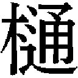
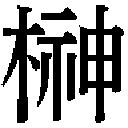

| 半分の月がのぼる空 ３: 3 | |
| 橋本 紡 | |
| (2013) | |
半分の月がのぼる空 ３
橋本 紡
＊この電子書籍は縦書きでレイアウトされています。
＊読む際のご注意、お断り等についてはこちらをお読み下さい。
半分の月がのぼる空 ３
第四話 夏目吾郎の栄光と挫折
１
手術はまだ続いている。屋上から戻ったあと、僕はずっと廊下の隅に座り込んでいた。夜の病院は静かで、寂しく、僕をさらに不安にした。まるで世界が動きをすべてとめたかのように思えた。時折、僕はここがどこなのかわからなくなった。慌てて辺りを見まわし、自らの心と記憶を探り、ようやく現実に戻るのだった。そうして自分を取り戻すと、僕は里香のことを考えた。冷たく硬い床を尻に感じ、空間のどこかを見つめながら、僕自身の中に宿っている彼女の面影に触れようとした。そうすれば里香をこの世にとどめておけるように思えたからだった。僕が忘れてしまったとき、彼女の命が揺らぐような気がした。もちろん下らない思い込みだった。勝手に突っ走った強迫観念にすぎない。
「ぼくらはあまりにも考えすぎる」
ああ、そのとおりだ。わかっていながら、僕は必死になって里香の姿を追い求めた。学校に行ったとき、里香は嬉しそうに笑っていた。校門の前の記念写真。みんなに囲まれながら笑っていた。はぐれてしまったけれど、一年の教室で里香を見つけた。みゆきと一緒だった。山西の下らない鉄道講義を聴きながら、やはり彼女は楽しそうに笑った。あれが、里香にとって唯一の授業体験だったのだ。初登校。そして最後の登校になるのかもしれない。あとは、そう、とめられた一分。いつもいつも、里香は僕の指先を握った。真っ青な顔で笑い、震える唇から優しい声を出した。苦しいはずなのに、僕には笑みしか見せなかった。
なぜだろうか。僕の頭に浮かぶのは、優しい里香だけだった。まったく、おかしな話だ。里香はたいてい、怒ってばかりいたのに。笑っていることより、怒鳴っていることのほうが多かった。里香は身勝手でわがままで気まぐれで、本当にひどい女なのだ。けれど記憶の中の里香は優しく微笑み、僕を見つめているのだった。
僕は『チボー家の人々』を抱きしめた。里香の思い。気持ち。なによりも大切なもの。本当に欲しかった、たったひとつのもの。
やがて、また里香の笑みが脳裏に浮かんだ。病院の屋上、カメラにフィルムを入れようとしていたとき、手間取っていたら、僕の手元、つまりカメラを覗き込んできた。上機嫌だった。にこにこ笑っていた。いざカメラを向けたら、恥ずかしそうな顔をした。撮ったら、今度は拗ねた。拗ねた顔は、もちろんフィルムに焼きつけた。ああ、あのとき、里香は持っていたのだ。僕が子供のころの写真を。少し前に聞いたばかりの、亜希子さんの声が蘇ってきた。
「里香な、すごく喜んどったよ。ずっと写真を見て、笑っとるん。あの子があんなに嬉しそうな顔すんの、初めてかもしれん。いつまでも見とるでさ、ほら、からかったるつもりで、顔が赤くなっとるよとか言うたったんさ。いや、実際、赤くなっとったんやけどさ。そしたら、うんって頷いたんや。そこは恥ずかしがるとこやろって突っ込みたかったんやけど、突っ込めへんかった。だって本当に幸せそうやったんやもん」
里香は今も、その写真を持っている。右足に貼りつけていった。僕が父親にしがみついて笑っている写真だ。そのことを思うと、胸が張り裂けそうになった。なんてことだろう。僕はなにもわかっていなかったのだ。確かに大切だとは思っていた。世界よりも、自分よりも、はるかに大切だった。もし神さまがやってきて、世界を滅ぼすか、里香を殺すかの二択を迫ったら、僕はなんのためらいもなく世界の消滅を望むだろう。里香を助けてくださいと願うだろう。
けれど、でも、なにもわかっていなかった。
もっともっと大切だったのだ。
世界のすべてなんて、どうでもいい。比べることさえできない。里香が助かるのならば、いくらだって、何回だって、世界なんか滅べばいい。ああ、そうだ。僕自身の手で破壊しつくしてやる。
その里香は今、境界をさまよっている。
生と死の、境界を。
僕は本を抱きしめ、背中を丸めた。体がぶるぶると震えた。とめようとしても、とめられなかった。
僕のすべてが震えていた。
「裕一」
突然、声が聞こえた。里香の声だった。姿があるわけがないと知りつつ、それでも僕は周囲を見まわした。がらんとした空間に彼女を求めた。黒い長椅子は端が破れていて、中のスポンジがだらしなく出ている。リノリウムの床はあちこち、剥がれたり割れたりしている。すべての扉には傷がついている。当たり前の光景があるだけ。里香の姿はどこにもない。
「本、読んでいいよ」
布団に顔を半分埋めながら、里香は言った。
「ゆっくり読んでね」
僕の喉から声が漏れた。ひっ。とめられない。目が熱くなる。唇が震える。手が震える。僕はその本を、『チボー家の人々』を抱いたまま、頭を床にこすりつけた。なあ、夏目。頼むよ。里香を助けてくれよ。もし里香を助けてくれるのなら、一生あんたの下僕でいいよ。なんだって聞いてやるよ。ぼこぼこに殴られたって文句なんか言わないさ。煙草を買ってこいって言われたら、犬みたいに走って、すぐ買いにいってやる。だから里香を助けてくれよ。お願いします。里香を助けてください。
いろんな思いが駆けめぐり、そのすべては消えていった。心が、感情が、ゆっくりと燃えつきていった。僕は真っ白な気持ちで空間のどこかを見つめつづけていた。
そして手術が終わった。
「おまえにとっては、たぶん最悪の結末だよ」
手術室から出てきた夏目は言った。
「これから、思い知ることになるんだろうさ」
夏目が吐いた言葉を、僕は何度も何度も頭の中で繰り返した。意味を掴もうと足掻いた。理解しようとした。けれど習ったこともない数式を目の前にしたときと同じように、答えどころか、解き方さえもわからなかった。
夏目はそんな僕をじっと見つめていた。
ひどく暗い瞳だった。
彼はそう......僕を哀れんでいた。
「最悪ってなんですか」
辺りが急に騒がしくなったせいで、答えは得られなかった。手術室から何人かが駆け出てきたかと思うと、何人かが駆け込んでいった。誰かがなにかを叫んだ。続いて笑い声が聞こえてきた。僕は怒りを覚えた。なんなんだよ。どうして笑えるんだよ。おい。こんなときになにが楽しいんだよ。
怒りをエネルギーにして、ふたたび問う。
「最悪って、どういうことですか」
自分の声が、しかし、そんなふうに聞こえない。いったい誰が喋ってるんだろう。これは本当に僕の声なのか。
「手術が失敗したってことですか」
夏目は、首を横に振った。
「いや、うまくいったよ」
「え......」
「やれることはやった。もう一回やっても、あれよりはうまくはできないだろう。ただ、しばらくのあいだ、様子を見る必要がある。手術というのは、そういうものなんだ。一日か二日......それくらいだろうな。もし一日か二日して里香が生きていたら間違いなく成功だよ」
「すぐにわからへんのですか」
「里香はぎりぎりなんだ。どんなにうまくいっても、いつ転げ落ちるかわからない。ただ、まあ、たぶん成功だ。成功したと思う」
成功。
それは望んでいた言葉だった。
成功。
なによりもそれを欲していた。
成功。
告げられたのに、なぜ光が見えないのか。なぜ棘だらけなのか。
わけがわからなくなり、僕はただ、ぼんやりと夏目の顔を見つめた。夏目のほうも目を逸らさなかった。僕の瞳を、その奥底を、じっと覗き込んできた。やはり夏目の瞳には希望も絶望も宿っておらず、ただ哀れみだけがあった。
夏目は歩きだすと、僕の脇を抜けていった。
「それって──」
振り向くと、僕は彼の背中に声を放った。なにを聞きたかったのかわからない。なにを求めていたのかわからない。渇望が僕を動かしたのだ。けれど、僕の声は、もっと大きな声によって掻き消されてしまった。数人の医者が手術室から走り出てきて、夏目を取り囲んだ。彼らはことごとく興奮していて、この場にはあまりにも不似合いな大声で廊下を満たした。
「夏目先生、すばらしかったですよ」
「感動しました」
「あんなに正確で速いオペは初めて見ました。噂どおりです。もったいないですよ」
「まったくです」
「早く医局に戻ってください」
「医局もがらりと変わったし、今ならなんとでもなります」
「上の連中は僕たちが説得しますから」
彼らは僕のことなんて気にしていなかった。目に入っていないのだろう。興奮した若い連中に囲まれているのに、夏目は冷め切っていた。背中を丸め、無言のまま歩きつづけている。夏目の孤独に気づいているのは僕だけだった。同じ孤独の中にいる僕にだけ伝わってきた。
手術室の扉に目を移した。
里香は生きている。
僕はまだ里香を失っていないんだ。
そうだろう。
なあ、そうなんだよな。
２
僕の前には、古びたドアがあった。蹴飛ばせば簡単に壊れそうなドアだ。蝶番は錆びて脆そうだし、触った感じも薄っぺらく、本気で蹴ったら吹き飛ぶだろう。しかし僕にとって、それは鉄製のドアよりも、はるかに頑丈にできていた。壊すことなんてできない。ドアの向こうには決して行けない。上のほうに、こう書かれたプラスチック製のプレートがついていた。
ＩＣＵ。
英文の頭文字なのだろうけれど、詳しいことまでは、馬鹿な僕にはよくわからない。ただ日本語でどう言うのかはわかっていた。集中治療室。若葉病院には、救急車で病人が運ばれてくることがある。意外なことに、そういった人たちの半分くらいは、たいした病気などではなく、運び込まれてから数時間後、申し訳なさそうな顔で病院から出ていく。本当に救急を要するのは、せいぜい二、三割くらいだそうだ。彼らは治療を受けたあと、集中治療室に入る。二度と出てこない人もいる。生きたままでは。そういう場所なのだ。
手術が終わってから数日たった今も、里香はちゃんと生きていた。夏目の言ったとおり、成功したらしい。それなのに、里香はいまだ、ＩＣＵからは出られないままだった。僕はひどく混乱した。思い描いていたのは、もっと単純な未来だった。手術が成功すれば、状況はいい方向に進んでいく。すぐにでも里香に会えて、里香は笑ってくれて、僕も笑って、冗談なんか言ったりするんだ。幸せで、嬉しくて、たまらないんだ。もし手術が失敗すれば、それっきり。世界が終わる。消え去る。
世界という奴は、そんなに優しくはなかった。手術が成功しても、なにも終わりはしなかった。始まってさえもいなかった。
僕はひたすら戸惑った。成功という現実に浮かれながら、同時に絶望の淵を覗き込んでもいた。笑うことも泣くこともできない。どちらを選べばいいのか、誰も教えてくれなかった。浅はかな希望はそうして、ゆっくりと色褪せていった。
「亜希子さん」
やがてＩＣＵのドアが開いた。出てきた人影に、僕は駆け寄った。
ああ、と亜希子さんが言う。
「あんた、まだおったん」
「はい」
一時間くらい前、亜希子さんがＩＣＵに入っていくのを見かけたので、僕はずっと待っていたのだった。
「里香は？」
「まあ、わりと順調やよ」
「そうですか」
ほっとした。体中から力が抜けた。
「よかった」
「ほら、行くで」
「あ、はい」
どんどん進む亜希子さんのあとをついてゆく。なぜか亜希子さんはいつもより早足だった。最近の亜希子さんはこんな調子だ。口数が少なく、怒ってるわけでもないのに、なぜか僕をきつい目で見てきたりする。いったい、どうしたのだろう。
「裕一」
「なんですか」
一秒だけ目が合った。
「あのさ」
「はい」
「いや、なんでもないわ」
やはりおかしい。亜希子さんが曖昧な態度を取るなんて。僕は不安になった。亜希子さんの妙な言葉や態度が、里香の病状と関係があるように思えたからだ。
思わず声が出ていた。
「亜希子さん」
「なに」
一秒だけ目が合った。
「その」
「だから、なに」
「いや、なんでもないです」
言葉というのは、なぜこんなにも使いづらいのだろう。胸の中にあるものを、十分の一だって表現できやしないではないか。ああ、違うのかな。そうではないのか。僕たちの気持ちが曖昧なのか。
よくわからないや......。
僕たちはもう口を開くことなく、ただ廊下を歩きつづけた。言いたいことや尋ねたいことはたくさんあるはずなのに、どれも言葉にならなかった。やがてナースステーションの前についた。開きっぱなしになっているドアのところで、亜希子さんがふと、立ち止まった。
「ところで、あんた、学校のレポートやっとんの」
「全然です」
「あんたは本当に阿呆やね。レポートを出さんと留年やろ。わたしも赤点ばかりやったけどさ。留年だけはしやんかったよ」
「わたしもってなんですか、わたしもって。僕は赤点ばかりじゃないですよ」
「留年寸前なんやろ」
「それはそうですけど」
「里香も頑張っとるんやで、あんたも頑張んな」
「はあ」
「今の言い方、看護師らしかったやろ」
「ええと」
「まったく。なんなんよ、その細い目は。これやから最近の子供は可愛ないんさ。素直に頑張りますって言うたらいいのに」
頭を殴られた。軽くだけど。ああ、どうして殴るのかな、この人は。
「亜希子さんが茶化したんじゃないですか」
「まあね」
「笑っとるし」
とはいえ、僕もまた、笑っていた。
「さっさと病室に戻んな」
「わかりましたよ」
歩きだしたところで、すぐに呼び止められた。
「裕一、あんた、知っとるん」
「え、なにをですか」
さっきまでの余韻を保ったまま、笑いながら僕は尋ねた。けれど亜希子さんは笑っていなかった。ああ、亜希子さんの口が動いた。なにか言うんだ。言葉がもうすぐ耳に届く。待ち望んだこと、あるいは恐れていたことが、やってくる。
絶望なのか。
希望なのか。
もちろん覚悟なんてあるわけもなく、震えながら言葉を待った。けれど亜希子さんの唇は動きをとめた。彼女の瞳に浮かんだ淡い輝きを、僕は知っていた。手術が終わったあと、夏目の瞳に宿っていたものと、まったく同じだった。亜希子さんは僕を哀れんでいた。
「さっさと病室に戻りな」
短く言うと、亜希子さんはナースステーションに入っていった。あるいは......逃げ込んだのかもしれない。おかしい。なにもかも。僕の知らないことがあるんだ。そして、みんな、夏目も亜希子さんも、他の看護師さんも隠している。
突然、胸が苦しくなった。
僕はその場にしゃがみこんだ。
「息が......できへん......」
なぜ、こんなにも苦しいのだろう。
３
それにしても世の中は理不尽だ。
おかしい。
間違っている。
たとえば、なにが間違ってるかといえば......ああ、たとえば、こういうことだ。僕が中学一年のとき、わりと好きな子がいた。いや、たいして好きだったってわけではないさ。好きだとか恋だとか、そこまで心躍るものなどではなく、そばにいるのがなんとなく当たり前になっていたという感じだ。
恋なんかではない。もっと曖昧だ。本当に、そんな感じ。
ずいぶん前になるけれど、彼女と並んで道を歩いていたところ、正面から、やたらと格好良い奴が歩いてきた。当然のごとく、僕はさっさと通りすぎようとした。自分より格好良い男なんて気に食わない。なんとなく相手に覚えがあった。同じ学校なのだろう。上級生か、あるいは同級生か。
ところが、だ。
僕の隣を歩いていた彼女が歩調を緩めた。
「どうしたんや」
彼女に尋ねた。
「なんでもない」
無愛想に言ったあと、彼女は顔を伏せ、さらに歩調を緩めた。僕はそのままの調子で歩いていたので、彼女とのあいだに一メートルくらいの距離ができてしまった。
僕が立ち止まると同時に、向かいからやってきた格好良い男が、
「あれ？ 帰り？」
さわやかさ全開で彼女に話しかけた。
彼女は微笑むと、しっかり頷いた。
「そうなんよ」
さっき僕に取った態度とは、ひどい違いだった。
長いつきあいなのだ。
よく知っているのだ。
だけど、こういう顔をする彼女は知らなかった。
それから二枚目野郎と彼女はしばらく立ち話をしていた。二枚目野郎は二枚目野郎にありがちな、誰にでも優しい感じの愛想を振りまいていて、彼女のほうはとびきりの笑みを浮かべていた。僕だけがひとりだった。だからこそ、気づいたことがいくつかあった。そして気づくと同時に、僕は傷ついてもいた。
僕とつきあっていると思われたくなくて歩調を緩めたんだな。
好きだったわけではない。つきあっていたわけでもない。幼馴染みだから一緒にいることが多いだけで、彼女が他の奴を好きになろうが、そいつが彼女をまったく好きではなかろうが、どうだっていいのだ。そんな奴のために、僕と離れて歩こうとしたって、無愛想になったって、気にするべきことではないのだ。傷つくほどのことではないのだ。わかってはいた。だけど、それでも、僕はとても傷ついていた。
「じゃあね」
「ああ、またな」
ありきたりの挨拶を交わし、ふたりは別れた。
男は向こうへ。
彼女は僕のほうへ......ただし、やはり距離を置いて。
「行こうか、みゆき」
橋を渡りきり、相手の男が見えなくなってから、僕はようやく声をかけた。精一杯、笑っておいた。陽気な声だった。
他にどうすればよかったのだろう。今もわからない。
とにかく、そんなふうに、世の中には理不尽なことが多い。大きなことで言えば、たとえば世界のあちこちで起きている戦争だって理不尽の塊だ。無人飛行機で爆弾をあちこちに落としている軍隊が正義面をしたり、それで親を殺された子供が腹に爆弾を巻いて軍隊に突っ込んでいってテロリスト扱いされたりしている。まあ、そういうことはたくさんある。ありふれていると言ってもいい。
世の中は理不尽だ。
とても卑小な例だけれど、身近にもおかしなことは起きるもので、僕はひどく戸惑っていた。なにが理不尽で、なにがおかしいかと言えば......具体的な言葉で表現するなら、こういうことになる。
山西に彼女ができた！
なんと、かなりの美人らしい。なぜわかるかというと、当の山西が盛大に自慢しまくっているからである。
「俺くらいの男前やと、女が放っておかんわけよ。口を開けとったら獲物が飛び込んできたっていうんかな。参るよな。しょっちゅうメールが来るんやで。ほら、女って寂しがり屋やろ。そやから、いちいち応じたるのが男の甲斐性っていうかさ」
山西は僕の病室に来ていた。見舞客が置いていった伊勢名物の生姜糖を食べている。僕はこのお菓子があまり好きではない。あの甘さと辛さがどうにも合わなくて、喉の奥が変な感じになってしまうのだ。それで山西に食べていいぞと言ったら、この有り様だ。一箱を食いつくしそうな勢いだった。
ところで僕はといえば、ベッドに横たわっていた。本当なら起き上がって山西にキャメルクラッチでもかけてやりたいところなのだけれど、残念なことに点滴中だった。
僕は思いっきり不機嫌な声で尋ねてみた。
「おまえ、どうやって告白したんさ」
「告白ってなんや」
生姜糖を囓りながら、山西は勝者の余裕で笑った。
「俺の魅力をまだわかっとらんな」
「魅力？ 生姜糖の欠片が唇についとるところか？」
「こういうのも可愛いって言うんやけどな、彼女は」
山西はまた笑った。
腹が立つというか、戸惑うというか、参るというか......どうにも理不尽だ。なぜ山西なんかに彼女ができるのだろう。
生姜糖を囓ったあと、山西はもったいぶった感じで言った。
「向こうからな。うん」
「女のほうから告白してきたんか」
おかしい。相手が山西のしつこさに根負けしたというのなら多少は......それだって、かなり疑問だけれど......非常に疑わしいものだけれど......納得はできないけれど......そういうことにしておくとして......大いに疑問だけれど......便宜的にそういうことにしておくとして......女が告白してきただって？
「いきなり呼びだされたんさ。それで、まさかと思うたら、見事にそのとおりでさ。つきあってくださいやって。ずっとさ、彼女、うつむいとったんやで。恥ずかしかったんやろうな。精一杯の勇気を出して告白してきたわけや。もうな、俺はじんと来たね。ああ、この子を幸せにしたろってな」
山西は浮かれまくっていた。
本当に嬉しそうだった。
そんな山西のとびきりの笑顔を見ているうちに、さっきまでの気持ちがだんだん色褪せていった。苛立ちも、驚きも、なにもかも。
ただ寂しさだけが残った。
暗くて、やたらと広い心の中で、そいつだけが背中を小さく丸めて震えていた。僕はそっと、サイドテーブルに置いてある『チボー家の人々』に触れた。里香の思い。気持ち。僕は、この本を、あの言葉を、そばに置いていた。
「戎崎。おい、戎崎」
「お、おう」
「おまえ、話を聞いとんの」
「やかましい。ノロケなんか聞きたないわ」
僕はにやにやと笑いながら、そう言ってやった。本当に笑えているかどうかはわからないけれど。
「どうしたんや。元気あらへんな」
「病人やでな」
「ところで里香ちゃんってどうなったん」
「わからへん」
「なんで」
「とにかく、わからへんのや」
僕の顔を、しばらくのあいだ、山西は見つめていたけれど、ふうんと言って、また生姜糖を囓りはじめた。それからしばらく、僕も山西も黙っていた。ただ山西が生姜糖を囓るぼりぼりという音だけが響いていた。窓の向こうに目をやると、一日ごとに呑気になっていく春空が広がっていた。木の芽もすっかり膨らんでいる。世界は、季節は、確かに進んでいた。僕たちがどういう気持ちを抱いていようが、幸せだろうが、足踏みしていようが、まったく気にもしない。そのことが少し寂しく、少しありがたかった。
やがて、開きっぱなしになっていたドアを、誰かがノックした。
「あ、加世子ちゃん、場所すぐわかった？」
大きな声をあげて、山西が立ち上がった。
見れば、そこに立っているのは、うちの学校の制服を着た女の子だった。やたらとスカートが短くて、ものすごくたくさん足が見えた。下着まで見えそうだった。髪は肩くらいで、薄い茶髪だ。僕の学校は三流校だけあって校則が緩い。以前はけっこういい学校で、伊勢では一、二を争うほどの名門だったらしいけれど、十年くらい前に自主性を育てるためという名目で校則を緩くしたら、あっという間にレベルが落ちてしまったのだそうだ。
「ほら、来なよ。こいつ、戎崎。友達でさ。ほら、この前、話したやん。留年寸前の奴がおるって。こいつや、こいつ」
山西は僕を指さした。
「生姜糖、食べるか。いらへんか。ああ、そうやよな。こんなしょぼいもん食えへんよな。そうや。椅子は、ええと、他にないんか。そしたら、ほら、これに座りな」
「ありがとう」
山西の浮かれようとは対照的に、彼女のほうは落ち着いていた。いや、冷めているという言葉が近いか。
そういう子なのかもしれないけれど、なんだか変な感じだった。
「こんにちは」
僕が挨拶すると、彼女はぺこりと頭を下げた。
「こんにちは。病気、大変なんですか」
ああ、喋ったら、けっこう普通だな。
丁寧だし。
それにしても可愛い声をしている。山西が浮かれるのもわかった。
「いや、たいしたことないんですよ。Ａ型の肝炎なんて、たちの悪い風邪みたいなもんやって。寝とるだけで治るし」
「学校を堂々とさぼれてラッキーですね」
「うん。僕もそう思うとる」
当たり障りのない会話を僕たちは交わした。
加世子ちゃんは笑って。
僕も笑って。
言葉は滑らかで。
本当には笑ってなくて。
それにしても、山西の奴、うまいことやったな。本気でそう思ってしまうくらい、加世子ちゃんは可愛かった。第一印象どおり派手なタイプで、なおかつ美人だった。唇はふっくらしていて、目は大きくて、鼻は低いけれどキュートだ。化粧が上手だった。よく見ると、ピンクのマニキュアを塗っていた。
まさか山西がこれほどの美人を捕まえるとは。
「いや、春やな。春。もうすぐ暖かくなるな。ああ、そうや。夏になったら海へ行こう、海へ。いいな、海。思いっきり泳ごうな。俺、平泳ぎうまいで。一キロくらい泳げるって。本当に。ああ、そうや。スイカも買おう。スイカ。スイカ割りしよや。戎崎も来いよ。ああ、やっぱりおまえは来るな」
山西は完全にはしゃいでいた。
そんな状況が十五分ばかり続き、山西は早口でいろんなことを喋りまくって、格好悪くて恥ずかしくて微笑ましかった。山西でさえも微笑ましかった。なのに、加世子ちゃんは落ち着いていて、格好良かった。恥ずかしくなんかなかった。
そんなふたりは、そんな調子のまま、去っていった。
「また来るわ」
ありきたりな言葉の響きさえも山西は浮かれていて。
「じゃあ、お大事に」
適当に頭を下げた加世子ちゃんはやはりクールで。
僕は妙なものを胸に抱えていた。歯車が少し噛み合わないような感じだ。けれど、それがなんなのかわからなかった。季節の変わり目だからだろうか。最近、僕はずっと変なのだ。考えすぎる。ふらふらしてばかりでさ。
やがて、窓の向こうに、駐車場を横切っていく山西と加世子ちゃんの姿が見えた。仲良く手をつないでいた。
谷崎亜希子にとって、今日はなかなか大変な日だった。まず朝、起きたらすでに出勤時刻を過ぎていた。なぜ目覚まし時計が鳴らないのかと思いつつ探したところ、足下に転がっていた。古くさいベル式の目覚まし時計だ。そのベルの一個がなくなっていた。文字盤のガラスは割れていた。目覚まし時計は見事に昇天していた。壁になにかがぶつかったあとがあったので、どうやら誰かが投げつけたらしい。その誰かに悪態をつきつつ、顔を洗って、歯を磨いて、着替えて、愛車に乗り込んだらエンストした。ここのところ、どうもエンジンの調子が悪いのだ。なだめすかして、どうにか走りだすまで十五分かかった。ようやく病院に着いたら看護師長にひどく怒られた。三○七号室の山岡さん、血管がなかなか出なくて、三回も刺し直した。優しい山岡さんが「いや、平気平気」なんて言いつつ笑ってくれたのがまた泣けた。そのあと投薬に行った五一五号室の柴田さん、山岡さんと違って怒りっぽく、しつこく文句を言われた。禿頭を引っぱたいてやりたかったけど我慢した。
ようやく一段落できたのは、お昼を二時間も過ぎてからだった。
「ふう──」
ご飯代わりの煙草を、屋上で吹かす。
まず一本。続いてもう一本。
吸い終わりかかったところで、夏目がやってきた。
「おい、谷崎」
いきなり怒ってる。
「三一七号の奥寺さんの点滴にビタメジンを入れ忘れただろう」
「え、ビタメジン入れるん」
「カルテも読めないのかよ。俺はちゃんと書いたぞ」
言い訳もできない。完全に自分のミスだった。
「すみません」
素直に謝る。
夏目がにやりと、実に意地悪く笑った。
「おまえは本当に雑だな。看護学校へもう一回行ってこいよ。カルテの確認なんてのは、基本中の基本だろうが。そんなこともできないんなら、看護師なんてやめちまえ。いいか、俺たちが扱ってるのは人さまの命なんだぞ」
当たり前のことを、実に説教くさく言ってくる。
とはいえ、ミスをしたのは自分であって、言い訳などできるわけがない。抗弁も無理な立場だ。ただ、夏目がこちらを責めるための、いい機会だと思って、ぐちぐち言っているのは明らかだった。
ねちっこい姑みたいな男だ。
蹴りたい。蹴倒したい。けれど、できるわけがない。
ミスをしたのは事実だ。
「はい」
殊勝に頷くしかない。
ああ、でも、本当にわたしは雑だ。どうして失敗ばかりしてしまうのだろうか。夏目の言うことも、もっともだ。おかしいよ、そんなの。もっといい看護師になれると思っていた。なるつもりだった。なのに失敗だらけの日々。
さすがに落ち込む。腹の底がぐるりと動く。
「おい、谷崎」
「なんでしょうか、先生」
そう応じたら、夏目がひどく嫌そうな顔をした。
「どうして敬語なんだよ」
「なんとなく」
「気持ち悪いからやめろ。おまえはな、とにかく喚いてればいいんだよ。素直に落ち込むなんざ、ガラじゃないだろうが」
「まあ、そうですね」
できるだけ普通に話したつもりだったものの、夏目はなにか感じ取ったのか、意外そうな顔をした。すぐ元に戻ったけど。ここら辺はさすがに大人だ。たとえば裕一なら、あたふたするだろう。
少しの沈黙のあいだに、思考が流れていく。
夏目が大人の対応をした以上、こちらもそうすべきだ。ええと、どうすればいいんだろうか。考えつつ夏目を見たところ、彼は手すりを掴み、空を眺めていた。まるでなにもなかったように。ならば、こちらも同じでいい。亜希子も夏目も黙ったまま、空を眺め、時間が流れ、雲が流れ、太陽が動き、ふたりの影がゆっくりと角度を変えていった。
たまに風が吹いた。
顔にかかる髪を、亜希子は押さえた。そういう仕草のたび、自分が女であることを知る。だからといって、なにが変わるわけではないけれど。男になりたいという思いなどない。ただ、そう、知るだけ。女だと。
「戎崎、どうしてる」
「元気ないですよ」
「そうか」
「当たり前ですけどね」
「だから敬語はやめろって」
本気で嫌がってるらしい。さっきの仕返しに、しばらく続けてやろう。
「先生、どうなさるんですか」
「どうなさるって......なにをだ」
「里香のこと、教えてあげないんですか」
「教えられるわけがないだろう。あいつは家族でもなんでもないんだぞ。勝手に病状を漏らすのは守秘義務違反だ。そんなこと、おまえだってわかってるだろうが」
「わかってますけどね」
「なんだよ。けどねって」
「裕一は宙ぶらりんなんですよ。あの子はあの子なりに察しとるみたいなんですよね。顔を合わせると泣きそうなんです。強がる意気地もなくなっとって。笑おうとはするんですけど、全然笑えてないんです。その引きつった顔がもう痛くて痛くて」
「そうか」
何本目かの煙草を吹かす。紫煙が流されていく。冬の風ではなくなりつつある。春の気配が混じっている。その春の気配の中、学生のカップルが駐車場を横切っていった。手をつないで、とても仲が良さそうだ。ふいに、あれが裕一と里香だったらいいのにという考えが浮かんだ。もしそれが叶うのなら、なんだってしてやるのに。一生、夏目に敬語を使ってもいいや。
「なんとかなりませんかね、夏目先生」
「無理だ」
「宿直中に酒を飲んどったこと、ばらしますよ」
「ばらせよ」
「患者を殴ったこともばらしますよ」
「好きにしろ」
「ばれたらクビですよ」
「楽しい未来だな」
投げ捨てるような言い方に、違和感と、憤りの、両方を覚えた。夏目がこんな地方病院に来たのはなぜなのか。やけに瞳の色が薄くなるときがあるのはなぜなのか。裕一につらく当たるのはなぜなのか。
いろんな言葉が混じり合い、なにを尋ねていいかわからなかった。
「もう、そういう状況じゃないんだよ」
結局、先に口を開いたのは、夏目のほうだった。
亜希子は尋ねた。
「状況？」
「ああ、里香の母親から申し入れがあってな。それで──」
夏目の口から出てきた言葉を、亜希子は絶望とともに聞いた。こんなに悪い知らせは、久しぶりだ。点滴のミスも、山岡さんの平気平気という声も、柴田さんの愚痴も、たいしたことではない。
「なにそれ」
気がつくと、そんなふうに呟いていた。誰にも聞こえなければよかったのに、隣にいる夏目にはしっかり聞こえたみたいで、彼は顔をしかめた。なにかが切れた。背を向け、早足で歩きだす。
「どこ行くんだ、谷崎」
「里香のお母さんと話してくる」
「馬鹿、やめろ」
「だって、そんなのおかしいわ」
敬語？ 知ったことか！
「おかしいわ、そんなのって」
「しかたないだろうが」
「そやけど──」
「しかたないんだよ」
食いしばった歯のあいだから漏れる夏目の声。悟った。この状況に向き合っているのは、自分ではなく、夏目だ。その夏目が堪えている。歯を食いしばっている。ならば、自分になにが言えるのか。大声で喚き散らしたところで、そんなのはただの自己満足でしかない。怒りを吐き捨てるだけの行為。だいたい喚いた言葉は誰にも聞き入れられないだろう。谷崎亜希子も看護師である以上は......たとえ、どうしようもない看護師であろうと、そんなことは百も承知だった。
けれど言葉が漏れていた。
「そんなのないわ」
夏目は黙り込んでいる。
「そんなのおかしいやん」
夏目は黙ったまま。
「そんなのないわ」
夏目はずっと黙っている。
やはり正直に言っておこう。
僕は山西がうらやましかった。うらやましくてうらやましくてしかたなかった。あんなふうにノロケたり、でれでれ笑ったりしたかった。ああ、みっともないさ。だらしないさ。だけど、幸せならば、どんなにみっともなくてもかまわなかった。
少し前まで......つまり彼女ができるまで、山西はこの世界のありとあらゆるカップルをけなしまくっていた。
「なんや、あのカップル。馬鹿みたいやん。人前やのにさ、なんであんなふうにイチャイチャできるんやろな。こちらが恥ずかしなるわ。馬鹿カップル黒帯認定や」
「おい、戎崎、見ろよ。めっちゃ不細工なカップルや。子供ができたら悲惨やな。どっちに似ても、生まれた瞬間に人生終わりや」
「あれはあかんな。見ろよ、あの女。誰にでもついてきそうやん。男のほう、なんであんな黒いんさ。日焼けサロンやろ。将来、末端労働者決定やで」
山西だって十分に不細工だし、僕と同じように将来、末端労働者候補だし、言えば言うほど惨めになるだけなのに、それでも山西は毒づいていた。なのに今、カップルを罵りまくっていた山西が、実に格好悪い姿を晒して、浮かれまくっているのだった。
みっともない？
ああ、そうさ、確かにみっともないさ。
それがどうした？
僕はうらやましかった。
醜態を晒したかった。
「里香が甘えてきて困っとるんさ。女ってのはしかたないな」
そんなことを言ってみたかった。ああ、それ、本当に言ってみたいや。
そして僕は、山西のことがうらやましいと同時に、少しだけ憎たらしかった。どうして、あいつは浮かれてるんだろう。山西、おまえ、遊ばれてるんだよ。なのに馬鹿みたいに浮かれやがって。そのうち恥をかくぞ。絶対にかくね。でもって泣くんだぜ。そういう未来をちょっとは想像しろよ。僕はドス黒い気持ちを抱えながら、駐車場を歩いていく山西と加世子ちゃんを見つめていた。友達に対する思いやりや優しさなんて、まったくなかった。僕の心の中は、ヘドロのように薄汚いものが渦巻いているだけだった。
まったく情けない。
山西と同レベルじゃないか。
「はあ──」
漏れるのは、ため息ばかりだ。
４
一日......二日......三日......。
なにも起こらず、騒ぎも悲嘆も希望もなく、ただ時間だけが過ぎていった。僕の焦りも、里香の苦しみも、世界にはなんの影響も与えはしなかった。ふと気づくと、僕は東病棟に向かっていることがあった。渡り廊下を通り、二階の端の部屋の前に立っていた。秋庭里香という文字を見つめていた。そうしてドアの前に立っていると、中から笑い声と怒鳴り声が聞こえてくることがあった。なにしてんのよ、もう。裕一の馬鹿。ああ、里香、そんな怒るなって。駄目。でもさ。駄目。あのさ。駄目。慌ててドアを開けると、そこにはただの空間があるだけだった。片づけられた部屋。ほんの少しの荷物。里香の姿はない。すべては幻聴だった。あるいは願望。この病室に里香が戻ってくることはあるのだろうか。
僕はため息をつき、ドアから離れた。ふらふらと、廊下を歩いていく。いろんな音が聞こえる。いや、聞こえない。届かない。届かなくていい。渡り廊下で、パジャマ姿のお婆ちゃんとすれ違った。普段着のおじいちゃんが彼女の介添えをしていた。たぶん旦那さんだろう。こういうの、なんて言うんだっけな。国語の授業で習ったぞ。ええと、そうだ。思いだした。共白髪だ。一緒に生きて、一緒に老いて、一緒に白い頭になって。
通りすぎる。
共白髪が遠ざかっていく。
やがて自分の病室にたどりつくと、その前に亜希子さんが立っていた。ナース服のポケットに両手を突っ込み、ドアにもたれかかっている。まるで子供みたいだった。
ぼんやりしながら尋ねた。
「どうしたんですか、亜希子さん」
「戻ってきたか」
亜希子さんはよいしょと声を出して、ドアから背を離した。
「ちょっと来な」
「検査ですか」
「いや、話」
「話......」
「夏目と看護師長から」
どうしたんだろう。亜希子さんが僕と目を合わそうとしない。
ナースステーションに着くと、夏目が窓際の席に腰かけていた。横に看護師長が立っている。亜希子さんがつれてきましたと言った。夏目が目を逸らした。看護師長が咳払いをした。沈黙が続いた。まるで僕が不吉の塊であるかのようだった。病院の職員が取る、こういう態度を、僕はよく知っていた。なにしろ三カ月ばかり入院しているのだ。何度も何度も見てきた。そのあとには必ず泣き声が聞こえた。それらはまるで仲のいい友達のように、あるいは双子のように、セットになっていた。
僕は逃げだしたくなった。背を向け、ナースステーションを、病院を飛びだすのだ。世界そのものから逃げだす。聞かなければ、知らなければ、それは起きていないのと同じだ。そしてどこか遠くで、背中を丸め、膝を抱え、幸せな世界が続いていると信じていればいい。ほら、逃げろよ。裕一、走れよ。誰もとめないぞ。ほら、走れって。けれど足は動かなかった。
「先生」
看護師長が低い声で言った。
「ああ」
顔を上げず、夏目が呟く。
「戎崎、そこに座れ」
「そこって......」
辺りを見まわしたが、近くに椅子なんてなかった。
夏目はなぜ気づかないんだ？
見ていないから？
そんなこともわからないのか？
慌てた看護師長が小走りで椅子を持ってきた。看護師長は五十歳くらいのおばさんで、おっかさんタイプの人だ。たいていの医者より落ち着いており、夏目みたいな若い奴だと、子供扱いだったりする。その看護師長が慌てた様子を見せるとは。
立ちつくしていると、亜希子さんが言った。
「ほら、座りな」
「はい」
腰を下ろそうとしたものの、その瞬間、椅子なんてないような気がした。どこまでもどこまでも尻が落ちていき、床にさえもつかず、ひたすら落ちつづける。
けれど尻はすとんと椅子におさまった。
「戎崎、これは警告だ」
やはり顔を上げることなく、夏目が言った。
「おまえはこれから東病棟に行くな」
「え──」
「里香は今日、ＩＣＵを出て、病室に戻る。少し安定したから、今度は病室で様子を見ることになった。それで、だ。おまえは東病棟の里香の病室に近づくな。いろいろ勘違いしてるみたいだがな。おまえは里香の家族でもなんでもない。ただの知り合いだ。仲良くしてたことは知ってる。だが、それとこれとは別だ。はっきり言って迷惑なんだよ。おまえのせいで落ち着かないんだ。向こうのな、里香のお母さんも困ってる」
「お母さん......」
手術のとき、長椅子に座っていた背中を思いだした。ひどく地味な人だ。里香とはあまり似ていない。目元がほんの少しだけ。
そうだ、お母さんだ、と夏目は頷いた。
「だから近づくな。もし、この警告を無視したら、すぐに強制退院させるぞ」
夏目の声には抑揚がまったくなかった。
近づくな。
東病棟。
里香の病室。
僕はうろたえ、すぐ後ろに立っている亜希子さんに目をやった。亜希子さんの顔は能面のように固まったままだった。砲台山に行ったとき、亜希子さんが助けに来てくれた。里香に会える一分、亜希子さんが時間をとめてくれた。なのに今、亜希子さんでさえ無力だった。慌てて今度は看護師長を見る。看護師長の顔にも表情がなかった。夏目はずっとうつむいたままだった。
「それだけだ。病室に戻れ」
「でも......」
「他に用事はない。戻れ」
「あの......」
「以上だ」
急に立ち上がると、夏目は一度も僕の顔を見ないまま、部屋を出ていった。看護師長も静かに立ち去った。僕と亜希子さんだけが残された。コチコチという時計の音がやけにはっきり聞こえる。他の音は聞こえないのに。
「病室に戻ろう、裕一」
「はい」
「立ち上がりな」
「はい」
「行くよ」
「はい」
だけど立ち上がれなかった。
５
なにもかもが流れていってしまうんだ。変わらないように思えても、すべては変わっていってしまうんだ。そして変わっていくように思えるときに限って、なにも変わっていかなかったりするんだ。
そういうのは、じりじりと、実にゆっくりと、やってくる。そしてなぜか、これが本当に不思議なことだけれど、速くもある。とんでもなく素早い奴と『だるまさんが転んだ』をしてるようなものだった。だるまさんが転んだ。全然動いてない。だるまさんが転んだ。全然動いてない。近づいているようにも思えない。だるまさんが転んだ。だるまさんが転んだ。何回か唱えるうちに、奴は背後に立っている。だるまさんが転んだ。肩に奴の手が置かれる。奴は言う。ほら、俺の勝ちだ。あんたの負け。そんな宣告が下される。
変化というのは、そういうものだ。
逃げたいとは思ってるさ、そういうことから。避けて通りたいって。でも逃げられないし、避けられない。
奴はいつか、僕の肩に手を置く。
ほら、俺の勝ちだ......あんたの負け......。
冷徹な宣告を下す。
そんなわけで、僕は屋上にいた。
右側の脇に『チボー家の人々』を挟み、手すりに両手を置き、顔を上に向ける。晴れ渡った空は青かったけれど、春が近づいたせいか、その青は少しぼけたような色合いになっていた。輪郭のはっきりしない雲が、東から西へ流れていく。見ていると、その雲は少しずつ形を変えていた。青に巻かれ、青を巻き込み、曖昧な輪郭をさらに曖昧にしている。
僕は手すりにおでこをつけた。
「はあ──」
さっきから、ため息ばかりが出る。
手すりから離れると、僕は黄色い装丁の本を眺めた。それにしても古くさい本だ。お父さんのなんだろうな。あいつはお父さんっ子だったわけだ。どんな人だったのだろう。優しかったのかな。怖かったのかな。痩せてたのかな。太ってたのかな。
里香とはもちろん、会えないままだった。お母さんがよほど強く申し入れたらしく、病院中の職員が僕を監視していた。ちょっとでも東病棟のほうに歩きだそうものなら、誰かがすごく疑わしそうな目で追ってきた。そして訪れたのは、里香と出会う前の日常だった。なんの変哲もない日々。当たり前でつまらない日常。里香がいなくても、時間は普通に過ぎてゆく。そのことに僕は打ちのめされた。
病院の駐車場に、女の子が三人いた。誰かの見舞いにでも来たのだろうか。やがて、その三人がいきなり走りだした。右端の子が目にとまる。彼女は腰まである髪を揺らし、肩から提げたピンクのバッグも揺らし、走っていた。里香はあんなふうに走ったことがあるのだろうか。
思考が雲のように流れていった。
定まらない。
とまらない。
たまに、こんな日があるのだ。あやふやなときが。こういうときは寝てしまうのがいいんだよな。考えたって、なにかいい考えが浮かぶわけでもないんだしさ。昼寝でもすれば、少しはまともになるさ。
やがて背後から声がした。
「やあ」
振り向くと、隣の病室の大学生が立っていた。
僕はペコリと頭を下げた。
「こんにちは」
「読書でもしとんの」
大学生が『チボー家の人々』に気づき、そう尋ねてきた。
曖昧に笑っておく。
「そんなところです」
実際には、僕は本をずっと開いていなかった。だから、あの言葉も見ていない。なんだか、ひどく大切で、何度も見てはいけないような気がしたからだ。僕はただ、本を抱きしめつづけていた。それだけでよかった。それだけしかできなかった。
「へえ、デュ・ガールなんて読むんだ。珍しいよね、君くらいの年の子がそんなの読むなんて。だいたいそれ、もう絶版だよね」
「よく知ってますね」
「いちおう、俺は専攻が仏文やでな」
大学生はそして、苦笑いを浮かべた。
「ろくに勉強はしてないんやけどさ」
「僕もです」
留年がかかったレポートは、まったくの手つかずだった。
「だるいよね、勉強」
「だるいです」
僕たちは笑い合った。けれど、たいして親しいわけでもなく、その笑いが消えた途端に喋ることがなくなった。僕も黙っていたし、大学生も黙っていた。僕はぼんやりと空を眺めた。さっきの雲はどこに行ってしまったんだろう。探したけれど、見つけられなかった。見えないところまで行ってしまったんだろうか。それとも消えてしまったんだろうか。
なにもかもが流れていってしまう......。
急に寂しくなって、僕は『チボー家の人々』を持つ手に力を込めた。これだけはなくさないようにしようと思った。たとえ、なにがあったとしても。いつか他のすべてを失ってしまうのだとしても。これだけはしっかりと持ちつづけよう。もし、この決意を守れなかったら、僕はきっと、なにひとつ守れない男になってしまうだろう。
「──ったよ」
いろんなことを考えていたので、大学生の言葉を聞き逃した。
「え、なんですか」
「ふられてしもたわ、彼女に。参ったよ」
大学生には、それこそ毎日のように見舞いに来る彼女がいた。病室のドアはたいてい開きっぱなしになっていたので、彼の病室の前を通りかかるたび、幸せそうなふたりの姿を見かけたものだった。
なにもかもが流れていってしまう......。
信じられないという顔で見つめると、彼はむりやり笑った。弱々しい笑みだった。それで彼の言葉が真実だとわかった。なんてことだろう。すごく仲がよさそうだったのだ。イチャイチャしていたのだ。なのに、別れただって？ 本当に？
「俺、入院しとるやん。それで寂しかったんかな。彼女、合コンとか行っとったらしいんさ。そんでさ、合コンって、まあノリやからね。彼女、けっこう飲むほうやし。強くないくせに、飲むんやよな。それでまあ、他の奴とね」
「浮気ですか」
「泣きながら告白されてしもたわ。彼女なりに誠実になろうと思ったらしいけど、むしろ騙されとるほうがいいよな。いや、嫌やけどさ。正直に言われても許せんもんは許せんし。まったく参るよ」
ああ、本当に参るよ。大学生は繰り返した。たまらへんよ。勘弁してほしいわ。
そのあいだ、僕は美沙子さんとのことを思いだしていた。大学生の彼女の気持ちが、僕にはよくわかった。なんだか、とにかく申し訳なくて、自分がどうしようもないクズに思えて、すべてを話してしまいたくなるのだ。実際、僕は美沙子さんとのことを里香に告白し、許しを請いたいという気持ちを抱えつづけていた。どうにか抑えられたのは、夏目と亜希子さんにやめろと脅されたからだ。もしふたりの助言がなければ......僕も同じようにすべてを打ち明けていたかもしれない。
話さなくて正解だった。
里香はきっと許してくれないだろう。
ああ、許さないのは里香じゃない。
僕だ。
僕は僕を許せない。
あのとき、里香は苦しんでいたのだ。僕の人差し指を掴んだのだ。笑ってくれたのだ。ピーターラビットの絵本持ってくるでな。駄目だよ、盗むのは。わかっとるって。長期で借りるだけやって。それならいいかな。いつか返すから、問題なしや。笑いながらの会話。お互いになにかを秘めながらの言葉。そのすべてを僕は遠ざけた。美沙子さんのぬくもりに、誰でもいい誰かの優しさに、あっさり負けた。
レースの十個の花びら。
ピンポン連打。
亜希子さんのビンタ。
そのすべてが鮮やかに蘇り、僕は突然、現実感を失った。足下がふわふわする。ここはどこなんだろう。
僕はどこにいるんだ。
「君も辛そうな顔しとるね」
「え、そうですか」
「俺も辛いからさ。なんとなくね」
むりやり笑ってみる。大学生もむりやり笑った。なるほど。僕もこんな顔をしているわけだ。ちっとも笑えてないじゃないか。
「確かに辛いですね」
「まあ、お互い、頑張ろうや」
空元気で彼は言った。
「俺はまず、新しい彼女でも作る」
「え、本気ですか」
「古い恋は新しい恋で洗い流すんだよ」
僕たちは笑いつづけた。とにかく声を出した。まったく笑えてなかったけれど。しかし、なんというか、大人というのは偉大だ。それを思い知ったのは、次の日のことだった。二時間の点滴を終えたあと、我慢していたトイレに駆け込もうと病室を出たら、大学生の病室のドアが開いていて、女の声が聞こえてきた。思わず立ち止まり、そっと中を覗き込んだ。
女の人がいた。
大学生もいた。
ちょっといい感じだった。
彼女と仲直りしたのかと思ったけれど、よく見てみると、前とは違う女の人だった。有言実行とは、まさにこのことだ。あまりの素早さに呆然としていると、大学生が僕に気づき、親指をこっそり立ててきた。ああ、すごいよ。本当に。心から尊敬する。
僕も同じように親指を立てた。
自然と笑みがこぼれた。
あれ、そういえば、久しぶりにちゃんと笑った気がするな。
「あ、漏れそうや」
慌ててトイレに駆け込み、用を足しながら、僕はまた笑った。
たとえ、なにもかもが流れていってしまうのだとしても、悪いことばかりではない。大学生の輝くような笑顔は偽物ではなかった。女の人の弾んだ声も本物だった。ずっと沈んでいた心が少し......ほんの少しだけれど、浮き上がるのを感じた。
そんな気分のまま病室に戻ると、意外な姿がそこにあった。
「よう、戎崎」
なんと夏目だった。
七分後──。
浮き上がっていた気分はきれいさっぱり吹っ飛んだ。
６
山西がやってきたのは午後十時三十七分だった。そのとき、僕はベッドの中で、もぞもぞと体を動かしていた。眠りたかったけれど眠れなかったのだ。闇の中、僕はいろいろなことを考えていた。どこにも行かない思考。同じ場所からスタートし、あっちこっち巡るけれど、結局は同じ場所に戻ってくる。
やけに大きな音を立てて、ドアが開いた。
亜希子さんだな、と思った。
いつまで起きてんの。とっとと寝やんとシバくで。問答無用で明日の五時には叩き起こすからね。だから、さっさと寝な。
そんな言葉を予想していたのに、聞こえてきたのは意外にも野太い声だった。
「戎崎、起きてるか」
上半身を捻りつつ、顔をドアのほうに向けると、そこに山西が立っていた。廊下の淡い光を背負っている。僕はびっくりして言った。
「なんでおまえがここにおるんさ」
問いには答えず、山西が近づいてきた。
「おいおい、病院って簡単に忍び込めるんやな。不用心にもほどがあるで。誰かに呼び止められると思ってどきどきしとったのに、ここまであっさり来てしもうたわ。やばいんちゃうん、こういうのって。警備とかおらんのかよ」
「いや、おるけどさ。しょっちゅう見まわったりしてへんし」
山西が近くに来ると、あからさまな臭気が鼻を突いた。
「おい、おまえ、酒を飲んどんのか」
「飲んどるぞ。飲んどるとも」
山西が大声で笑った。明らかに酔っぱらいの声だった。
「もうちょっと声を低くしろよ。誰か起きるやろ」
「悪い悪い」
「だから声を低くしろって。なんで飲んどるんさ」
尋ねた直後、勘が働いた。
「もしかして、おまえ、加世子ちゃんと」
山西は叫んだ。
「大正解」
ああ、なんてことだ。先を越された。彼女ができれば、そういうこともあるだろう。高校生だし。つきあってる以上、いろいろしちゃったり、できちゃったりする。しかし山西に先を越されたショックは大きかった。こいつにだけは負けないと思っていたのに。
「それは......めでたいな」
「というわけでだ、戎崎、今から飲もうや。祝い酒だ。おまえも俺さまを祝ってくれ。今日はとことん飲もう」
僕はしばらく、笑いつづける山西を眺めていた。そのとき、どういうことが僕の心の中で起きたのか、自身にもよく理解できなかった。ただ動いた。ごろり、と。それまで動かなかったものが動いた。僕は目尻の熱さを感じながら言った。
「よし。飲もう」
病室をこっそり出た。ナースステーションの前を匍匐前進で進んだ。浮かれまくった山西が僕の足を掴んで、くすぐってきた。頭を蹴ってやった。引っ張られた。蹴った。互いに笑いながら進んだ。それから階段を上った。目指すのは屋上。一番ばれにくい場所だ。
「ちょっと寒いな」
屋上に着くと、山西が酒くさい息で言った。
「贅沢を言うなって。中で騒いだら、すぐに見つかるやろ」
「まあな。よし、飲もう」
コンクリートの上に腰を下ろすと、山西は持っていたバッグから酒瓶を次々、取りだしはじめた。それを見て、僕はびっくりした。ヘネシー、マッカラン、シャトーマルゴー、十四代大吟醸......よくわからないけれど、とにかく高そうな酒ばかりだった。最後に山西は、やたらと立派な木箱をバッグから出した。
その木箱を手に取った僕は、つい叫んでしまった。
「これってドンペリ？」
おお、と言って、山西が親指を立てた。
「しかも二十二年物のゴールドや」
「いくらくらいするんやろ」
「親父が言うとった話やと、二十万くらいやって」
「二十万って」
僕は慌てて木箱を床に置いた。とんでもない話だった。二十万なんて現金を持ったことなどない。ちょっと......いや、かなり怯んだ。
「いいんか。こんなん持ってきて」
「かまわんよ。どうせ貰いものなんやでさ。親父もろくに飲まへんまま、人にあげたったりするし。そんじゃ、まずはヘネシーで」
山西はいきなり瓶を傾けた。
ごくごく飲んでいる。
「うまい。戎崎、おまえも飲めよ」
「おう」
瓶を受け取り、軽く舐めた。
本当のことを言うと、味はまったくわからなかったけれど、僕は大声で叫んだ。
「すごい。うまいな」
「こっちもいけるで」
山西はマッカランを勢いよくあおっていた。本当に嬉しいらしく、やけにハイペースだ。僕のほうは逆にちびちび飲んでいる。さすが高い酒だけあって、口当たりがものすごく柔らかい。たまにこっそり飲んでいる安ウィスキーとはまったく違った。
頭の芯がぽかぽかして、腹もぽかぽかして、いい気分になってきた。
「山西、よくやった」
ああ、酔っぱらいの声だ。
「おまえは男や」
「そうや。俺は男になった」
僕たちは声をそろえて笑った。瓶を高く掲げ、高級酒をがぶ飲みした。口元を拭いながら、山西が言った。
「それにしても、どうしたんさ、戎崎」
「なにが」
「今日は妙にノリがいいやんか」
昼間の光景が頭に浮かぶ。いつもどおり散らかった病室。ベッドに腰かける自分。窓際に立つ夏目の丸まった背中。奴の足下で光が揺れていた。枯れ木の影が揺れていた。
「俺はいつもノリがいいだろうが」
断言して、僕は笑った。いろんなことを振り払った。酒をがぶ飲みした。
山西が茶化すように言ってくる。
「嘘つけ。けっこう根暗のくせに」
「おまえもやろ」
僕はシャトーマルゴーというワインをごくごく飲んだ。むせた。つかえた。むりやり流し込む。腹の底が熱くなる。その熱さとともに、脳裏の景色が遠ざかっていく。これでいいのだ。丸まった背中や言葉なんか思いだしたくもない。
「飲めよ」
僕は山西に強要した。
山西は受けた。
「飲むさ」
互いに酒瓶を掲げ、熱い液体を体にたっぷり流し込み、僕たちは夜空に向かって叫んだ。乾杯──！
７
「なに、起きとったん」
寝ぼけ眼で、谷崎亜希子は言った。ハードワークに次ぐハードワークのせいで、仮眠室のベッドに入った瞬間、あっさりと落ちた。一秒かからなかった。ところが、きっちり二時間で目が覚めた。なぜかはわからない。誰かが自分を笑っているように思えた。釈然としない気分で仮眠室から出ると、ナースステーションに夏目がいた。
回転する椅子に座り、くるくるまわっている。まるで子供みたいだ。
「寝えへんの」
「まあな」
まわりっぱなしで答えてきた。
やはり子供みたいな声だ。
冷蔵庫から『谷崎上等！ 勝手に飲んだらシメる！』とマジックで書かれたミネラルウォーターのボトルを取りだし口をつける。冷えた水が喉を流れていく感触。少し目が覚めた。
夏目は相変わらず椅子をまわしている。
「うるさいな、それ。やめなって」
「ああ」
でも、やめない。
「やめなって」
「ああ」
「そやから、やめな」
少しドスをきかせた。
やめた。
無視されると思っていたので、いささか意外だった。それにしても今日は男どもがことごとくおかしい。夕方の検温のとき、裕一も妙におとなしかった。へらへらと笑ってばかりいるのだ。怒ってもへらへら。優しくしてもへらへら。そして夏目は椅子をくるくるまわし、怒るとあっさりおとなしくなった。
おかしい。どうも妙だ。
「飲む？」
ボトルを差しだしたら、素直に受け取った。そして飲まない。手の中で揺さぶってるだけ。取り返して、一口飲んだ。
「どうしたんさ」
「なんでかな、嘘をさ、ついちまったよ」
「嘘......」
「ああ、戎崎にさ。自分でも信じてないことを言っちまったんだよ。あいつ、クソみたいな顔をしてるんだ。だから、つい思ってもいないことを言っちまった。まったく、あのガキ。自分で自分の面倒も見られないくせに、格好ばかり気にしやがって。なんで俺があんなガキのためにあんなこと言わなきゃいけないんだよ」
ふうん、と唸ってから、亜希子は言葉を口にした。
「本当に信じてへんの」
「え、なんだ」
「あんたが裕一に言ったことさ。本当に信じてへんわけ」
夏目は答えなかった。ただ、どこかを見つめている。亜希子はその視線を追った。しかし、そこにはなにもなかった。あるはずのないものを、夏目は見つめているのかもしれない。
「信じたいと思ったことはあったんやろ。そやったら、もう一回、信じてみたらいいやんか」
「無理なんだよ」
「かもね。でも、そうじゃないかもね」
「なにを言いたいんだ」
「さあ、なんやろ」
ミネラルウォーターを一口。
「わたしにもようわからん」
「開けるぞ！ 開けるぞ！ 開けるぞ！」
山西が叫んだ。
「おお！」
僕も叫んだ。
山西がその手に持っているのは、奴が持ってきた酒の中でも、とびっきりの高級品であるドンぺリゴールド二十二年物だった。そいつはなんと木箱に入っていて、栓なんて蝋で封をしてあった。山西はしかし、まったくためらうことなく蝋を剥ぎ取り、コルクを押さえている針金をむしりとると、最後の関門であるコルクに親指をかけた。
さすがに山西は興奮している。酔っている。
もちろん僕とて興奮している。酔っている。
「山西保に乾杯！」
「戎崎裕一に乾杯！」
叫ぶと同時に、山西がコルクを飛ばした。見事な軌道を描いて、コルクは夜の闇を切り裂いた。そして直後、真っ白な泡が溢れた。二十万円の泡だった。
「もったいない！ 飲め！」
「おお！ げほ！」
飲んだと思ったら、山西はいきなりむせた。
「馬鹿！ 貸せ！」
奪い取り、僕も飲む。口の中で泡が弾けた。思っていたよりも甘くて、いくらでも飲めそうだった。しかし、いざ泡と液体が喉に入った瞬間、それは一気に膨れ上がり、僕は山西と同じようにむせた。ふたりそろって咳を繰り返す。そのあいだに、ドンペリの三分の一は泡となって、コンクリートの床に消えてしまった。消えた分だけで七万円くらいだろうか。
「シャンパンって飲むの難しいな」
「ゆっくり飲めよ」
「わかってるって」
僕たちはそんなことを言い合いながら、残りをきっちり飲んだ。足下がふわふわする。心もふわふわする。ものすごくいい気持ちだった。
「うまいな、ドンペリ」
「ああ、うまい」
「なにしろ二十万やもんな」
「すごいな、二十万」
「ああ、すごい」
僕たちは声をあげて笑った。
「ところで、おまえ、肝炎やろ。酒なんか飲んでいいんか」
「さんざん飲ませてから、そんなことよう聞けるな。飲ます前に聞け。いいか、本当のことを教えたる。──絶対にいかんに決まっとるやろう」
「おまえは阿呆や。おまえのような阿呆は退院不可や。留年決定や」
「うるさい。たとえ留年しても、その一年間で思いっきり勉強するわ。有名大学に一発合格するんや」
「いや、またダブるんとちゃう？ ああ、ダブりと違うな。トリプるか？ 戎崎、俺はな、都会の大学に行くぞ。そんで、毎日毎日ナンパしまくって、女を作りまくるんや」
ああ、まったく、なんて馬鹿な奴なんだ。
ああ、まったく、なんて楽しいんだ。
やがて山西は立ち上がった。どこに行くのかと思って見ていると、山西は手すりを乗り越えた。いやまあ、乗り越えたというか......正確に表現すると、手すりに両手をかけ、右足を上げて跨ごうとしたものの途中でバランスを崩し、しかも片手に酒瓶を持っていたものだから、向こうに転げ落ちたのだ。
痛い痛いと呟きながら山西は立ち上がった。
「なにしとるんさ、山西」
「いや、ちょっとな」
笑いつつ、山西は一段高くなっている屋上の縁に上がった。もちろん、その向こうには、なにもない。ただの空間だ。落ちたら真っ逆さま。若葉病院は斜面に建っているので、玄関のほうから見ると三階建てだけど、中庭部分は五階分の高さがある。もし落ちたら、間違いなく大怪我をするだろう。
「やめとけ。危ないぞ」
僕は酒瓶片手に言った。
大丈夫だって、と山西は酒瓶片手に言う。
「こんなことも平気や。ほら、見ろって。片足立ちや。ふらふらしても倒れへん。風が吹いても大丈夫。こういうの、なんて言うんやったっけ。そうそう、ヤジロベエや」
「落ちたら本当に死ぬからやめろって」
「......死にたいんや」
「え、なんやって」
死にたいと聞こえたのだけれど、ただの聞き間違いだろう。とんでもなく楽しいのに、そんなことを思うわけがない。僕はへらへらと笑いながら、ドンペリの瓶を逆さにして、最後の一滴まで舐めた。ラベルを見ると、二十二年前を示す数字が並んでいた。この酒は僕たちより長生きなのだ。悪いな、ドンペリゴールド。ろくに酒の味もわからないガキが飲んじまってさ。酒のせいか、思考がふらふらする。とまらない。
「山西、さっきはなんて言うたん」
「なんでもないわ」
山西は縁に立ったまま、両手を広げた。その姿は鳥のようで、今にも飛びだしそうだった。
「こうしてると飛べそうや」
虚空を見つめ、呟く。
僕も調子に乗って、言った。
「おお、飛べるで」
「飛べるかな」
「飛べるとも」
「よし、飛んでみよう」
あっさりと山西は言った。
そして飛んだ。
夜の病院は静かだった。そのせいで、外の音が耳に届いた。どこかでガキが酔っぱらっているらしく、騒ぐ声がする。人が仕事をしているのに遊び呆けやがって。どこのどいつだろう。きっと駐車場にでも忍び込んで安酒をあおっているに違いない。
まあ、酒の力が必要なときもあるけどね。
亜希子はふと、そんなことを思った。相変わらず、夏目は宙の一点を眺めている。なにか話しかけたい気もするけど、なにを口にすればいいのかわからなかった。やがて一昨日くらいに聞いた噂話を思いだした。点滴の準備をしていたら、看護師長と、内科の高木先生の話し声が耳に入ってきたのだ。
「夏目先生、どうするんですかね」
「あの人はここにいるような人じゃないけど、Ｋ大のほうでもいろいろあるみたいだよ。若手はずいぶん騒いでるらしい。ただ前科が前科だからね」
「でも学部長が退任したって」
「学部長とは別のグループだったから、確かに夏目先生にとっては有利だろうね。でも、あれだけ派手なことをした以上、そう簡単に戻れるとは思えないな。ああ、それが逆に、いい方向に転ぶ可能性もないではないか」
「え、どういうことですか」
「例の件で夏目先生は反主流派ということになったわけだ。本当はどちらでもなかったんだけどね。ただ、あのころの反主流派が、今は主流派になってる」
「泥をかぶった夏目先生が、逆に有利になると」
「そういうこと。ただ夏目先生はなにを考えてるかわからないところがあるんだよね。僕なんか、呼び戻されたら、全速力だけど」
「先生、速く走りたいなら、もうちょっと体重を落とさないと」
「そうなんだよ。また二キロ、増えちゃってね」
噂話やら陰口やらは嫌いだから、細かい事情はよく知らない。知りたくもない。しかし夏目がなにかやらかしたことくらいは知っている。医療の世界は、いまだ徒弟制度みたいなところがある。もし噂どおりに学部長を殴ったのだとしたら、まさしく前代未聞だろう。
「なあ、谷崎」
やがて夏目のほうから話しかけてきた。
「昔話をしてやろうか」
「昔話......」
「ああ、俺の友達のな、下らなくてつまらない昔話さ」
８
「あの講師って絶対に馬鹿だぜ。たかが予備校の講師のくせに、なに偉そうにしてるんだか。学生運動とかしてたらしいんだけど、そんなことを偉そうに喋るんだよな。勲章を自慢するみたいにさ。自らの敗北を見せびらかしてるようなもんだろう、それって」
僕が吐きだすように言うと、小夜子はくすくす笑った。
「吾郎君、生き生きしてるね」
「なんだよ」
「いつもそうなんだもの。人の悪口を言ってるときの吾郎君って本当に楽しそう」
僕は黙り込んだ。
しょっちゅう、この調子なのだ。
小夜子はこちらの胸に突き刺さるようなことを言う。嫌みとか悪口とかではない。小夜子はそういう凡人にありがちな──つまり僕なんかにありがちな──面倒くさいことをしない。思ったことを思ったままに言うだけ。
だから、それは真実に近くて。
見たくないことや聞きたくないことも含んでいて。
僕は言葉に詰まってしまう。
まるで鏡のように、自分自身の姿を見せつけられる。
様子を窺うと、小夜子は穏やかに笑いながら歩いていた。まだ十月だというのに今日はやけに寒くて、彼女はキャメル色のダッフルコートを着ていた。少しばかりサイズが大きいのか、彼女の両手は甲の辺りまで袖に隠れてしまっている。ただでさえ背が低いのに、そんな格好をしているものだから、まるで小学生みたいだった。しかも彼女はかなりの童顔なので、いつも幼く見られる。学校でも二年生に下級生扱いされることがよくあるそうだ。しばらく僕たちは無言で歩きつづけた。冷えた空気に、僕たちの白い吐息が現れては消えていった。
僕たちは大きな公園の中にいた。元はこの地方を治めていた藩主の城があったところで、今は城址公園と呼ばれている。もっとも城址と呼べるような遺構はほとんどなかった。せいぜい石垣の一部くらいだ。明治維新のとき、当時の藩主が佐幕派に与し、最後の最後まで討幕派と戦ったせいで、かつて名城と呼ばれていた城は取り壊されてしまったのだった。
まったく要領の悪い殿さまだ。
勝てそうなほうに、さっさとついておけばよかったのに。
僕なら絶対そうしただろうな。
周囲には大きな木が何本も並んでおり、僕たちはその木々を縫うようにして作られた遊歩道を歩きつづけた。目的地は公園の奥にある博物館だ。小夜子は高校生のくせに陶磁器が好きで、博物館でやっている『安土桃山時代の陶器展』に行きたいと言いだしたのだ。僕自身は陶器になんてまったく興味はなかったけど、小夜子が喜んでくれるのなら陶器展だろうが書道展だろうがいっこうにかまわなかった。
少し迷った末、僕は強がることにした。
「別に悪口ってわけじゃないだろう。本当のことだしさ」
「そうね」
「的はずれじゃないし」
「わかるわよ」
「だいたい日本って国は、普段から曖昧にしてることが多すぎるんだよ。おかしいと思っても、笑ったりとか、受け流したりとか。俺、そういうのは嫌いなんだ。変なことは変だって言うべきだし、黙ってるほうがよくないよ」
もちろん屁理屈だった。言ってて恥ずかしくなってきたくらいだ。だから僕はその恥ずかしさをごまかすために、途中から思いっきり冗談っぽく、大袈裟に自分の主張を展開した。小夜子は相変わらず穏やかに笑いつづけている。
僕がさらに青くさい主張を続けようとすると、自然な感じで彼女が腕を組んできた。
「あのね、吾郎君、そんなふうに生きてると大変でしょう」
「大変って......」
「ほらほら、あまり考えないの。わたしね、吾郎君のそういうところは嫌いじゃないから。責めてるわけじゃないから」
ねえ、と言って、無邪気な感じで見上げてくる。
僕がぐるぐると、いろいろなことを考えて、まるで道化者みたいにおどけながら薄っぺらい自尊心を隠そうとしていたのに、小夜子は簡単に自分の言いたいことを伝えてくる。それも、きっちりと。僕の滑稽な熱弁はまったくかなわない。太刀打ちもできない。ぐうの音も出ないとは、こういうことだ。
うんと頷いて、僕は歩いた。小夜子と腕を組んだまま。ああ、今日は寒くてよかった。こうして身を寄り添い、歩くことができるのだから。
彼女のぬくもりを感じられる。
「あのさ」
「なに」
「いや、なんでもない」
本当は気持ちを伝えたかった。彼女を抱きしめたかった。でも僕には無理だった。
どうして小夜子とつきあうことになったのか、時々、僕は不思議になる。
クラスには三人か四人くらい、ただそこにいるだけで場が盛り上がって、やたらと派手で、笑い声の大きな女の子がいる。その手の子はたいてい、男とつきあいはじめるのも早くて......まあ、いろいろと話も早い。
僕はそういう手軽な女の子たちが好みだった。彼女たちと気楽に遊んでるのが性に合うのだ。それはたぶん、僕自身が手軽だからなのだろう。鏡なんだ、要するに。自分と同じものを自然と求めてしまう。ところが小夜子ときたら、まったく違う。彼女はぼんやりしてて、どちらかというとクラスで目立たないほうの三人か四人に入る。ものすごい美人ってわけじゃない。スタイルがすごくいいってわけでもない。口数も少なく、僕はたまに、彼女がなにを考えてるのかわからなくなることがある。
そんなとき、僕はものすごく不安になる。
お手軽な女の子たちはなにしろ鏡そのものなわけで、ちょっと自分の心を覗いてみれば、その心のうちはそっくり知ることができる。
だけど小夜子はわからない。
彼女は僕と違う。
どんなに自分の心を覗いたって、答えなんか見つけられない。
もしかすると、そういうのに僕はやられてしまったのかもしれない。
小夜子と出会ったのは、文化祭の打ち上げだった。
少し遅れて、僕は会場についた。
「おう、夏目、遅いぞ」
店に入るなり、友達の森がそう話しかけてきた。
駅前から少し離れたところにあって、昼は喫茶店で、夜は居酒屋って感じの店だった。豊吉さんというウチの学校のＯＢがマスターをやっている。こういうお祭り騒ぎのときは、多少の飲酒を見逃してくれるのだった。
森はもう酔っぱらっていた。
「できあがるの早すぎだよ、おまえ」
僕は苦笑いしながら応じた。
「おい、幹事さま、盛況じゃないか」
皮肉だった。
できあがってるのは森だけで、店の中は文化祭の打ち上げとは思えないほど静かだった。いつもなら、もう潰れてる奴のひとりやふたりはいてもおかしくない。
ふてくされた様子で、森は酒をあおった。
「言ってくれるな」
「どうしたんだよ」
「せっかくＳ女を呼んだのに、彼女たちさ、ノリが悪くてつまんないんだよ」
Ｓ女というのは、地域一番のお嬢さま学校だった。僕の通ってる第一高──略してイチコーと呼ばれることが多いけど──その我らがイチコーとは校風が全然違う。うちはどっちかっていうと庶民的で荒っぽい学校だった。それなりに成績のいい奴が多いし、ここらじゃ一番の進学校だけど、品のいいできる奴は私立に行くことが多い。結果として、うちに来るのは、品のない奴らばかりということになってしまう。もちろん僕もそのひとりだった。
「Ｓ女なんか呼んだのかよ」
「いや、坂崎の彼女がＳ女だろう。それで呼べることになったからさ。高嶺の花だし、チャンスじゃん。彼女たちと話せるなんて」
「それで飛びついたわけか。おまえ、節操ないね」
うるさいと言って、森は持っていたビールをまたあおった。
「適当に散ってろよ。ちょっとは可愛い子もいるぜ。おまえ、この前、早樹ちゃんと別れたばかりだろう」
「早樹のことは言うなって」
「おまえ、ひどい奴だよな。早樹ちゃん、いい子じゃないか。それなのに浮気とか、よく平気で──」
「だから言うなって」
僕は逃げるようにして......いや、事実、逃げていたんだけど、店の奥に向かって歩きだした。しかし慌てて立ち止まり、森に告げた。
「早樹とのこと、女の子たちには絶対に黙ってろよ」
森は意地悪な感じで笑った。
「おまえが可愛い子を捕まえたらばらしてやるよ」
「勘弁しろって」
「じゃあ、ビール、奢れよ」
「せこいな」
苦笑いしつつ、僕は豊吉さんにビールを頼んだ。
「こいつに好きなだけ飲ませてやってください」
「いいよ」
「お願いします」
どちらにしろ会計は割り勘になるはずだ。奢りといっても、まあ、言葉遊びみたいなものだった。豊吉さんと、じゃれるようなやりとりをしてから、店の奥に進んだ。それにしてもまあ、本当に静かなものだ。大声で騒いでる奴がほとんどいない。しかも男と女がきっちり分かれて座っていた。おいおい、これじゃ合コンの意味がないだろう。そんなことを考えていると、通路のそばに座っている女の子と目が合った。Ｓ女の子だとわかった。僕は試しに笑ってみた。森のヤケが伝染したのかもしれない。ところが、彼女が返してきたのは、見事なまでの愛想笑いだった。ああ、これじゃ森も飲みたくなるだろうな。
「おい、やばいな」
とりあえず、僕は見知った連中のいる席に腰を落ち着けた。
「むちゃくちゃ盛り下がってるな」
すぐさまテーブルからビールの入ったコップを取り、ごくごくと飲む。同じクラスの太田が文句の声をあげた。
「夏目、それ、俺の」
「いいだろう、別に」
「おまえと間接キスなんかしたくない。ただでさえ盛り下がりまくってるんだからさ。これ以上、憂鬱にさせんなよ」
「なあ、誰か突入してこいよ」
僕がそう言うと、席にいた連中が全員、顔をしかめた。
「それ、辛すぎ」
「自爆だ」
「罰ゲームだ」
「俺は嫌だぞ」
口々にそんなことを言う。
まったく腰抜けばかりだ。言いだしっぺの法則という奴で、必然的に僕が突入を敢行することになった。とはいえ、ひとりはさすがにきついので、森をつれていくことにした。森は嫌がったけど、当然、無理強いした。まあ、幹事だしな。責任を取ってもらわないといけない。
森と肩を抱き合い、そこらの席に突入する。
「こんばんは」
「こんばんは」
僕たちの野太い声は見事にハモった。しかし......すべった。女の子たちは実に冷ややかな目を向けてくるだけ。
こういうときは次だ。次へ行こう。
「やめようぜ、夏目」
泣きそうな声で森が言った。
もちろん僕は強要した。
「おまえ、幹事だろう。幹事には場を盛り上げる義務ってのがあるんだよ。ほら、もっと笑えよ。次も完璧にハモるぞ」
「勘弁してくれ。それに、俺、飲みすぎで気持ち悪くなってきた」
「ほら、行くぞ」
嫌がってるわりには、森はなかなかいい声を出してくれた。
「こんばんは」
「こんばんは」
また、ばっちりハモる。
六人くらい座ってる女の子たちの目が丸くなった。あ、まずい、今回も見事にすべったか......と思ったら、手前にいた子が爆笑してくれた。
よし、もらった。これでいける。
「うまいだろう。俺たち、イチコーハモり隊なんだ。あ、俺は夏目。こいつは──」
「俺、森ね、森」
あれ、森の奴、調子いいな。ウケが取れるとわかったら、いきなり輝くような笑みを浮かべてやがる。
「盛り下がりまくってるから、盛り上げにきました」
「盛り上げ隊です」
「裸踊りだって上等です」
「ご希望とあらば」
どうやら、その席にいた子たちは軽いグループらしくて、僕たちの三文漫才にくすくす笑ってくれた。
僕たちは席の端に腰かけさせてもらった。
こうなったら、なんとかなる。
Ｓ女といえど、やはり派手で軽い子はいるものだ。彼女たちとの会話はすごく盛り上がって、それが少しずつ伝染したのか、あちこちの席で男女が交じりはじめた。ようやく打ち上げっぽい雰囲気になってきた感じだ。
途中で僕は立ち上がった。
「おい、森、トイレに行ってくる」
「行けよ。そのあいだに貴子ちゃんを貰うぞ」
貴子ちゃんというのは、その席で一番可愛い女の子だった。でもって、一番、尻が軽そうな子だった。つまり僕の好みにぴったりというわけだ。さらに付け加えるなら、森の好みにもぴったりだった。僕たちは席に着いた直後から、ちょっとした言葉や態度で、貴子ちゃんにアピール合戦を続けていたのだった。
「できるなら、やってみろよ」
自信たっぷりに言って、僕は席を離れた。けれど、その言葉とは裏腹に、僕は早足でトイレに向かった。短時間で決定的な一打を食らうわけがないとは思うけど、自然と急いでしまう。そして用を足し、トイレを出たとき、女の子の姿が目に入ってきた。
彼女はひとりきりでカウンターに座っていた。
騒がしくなりつつある店の中、寂しそうな背中がやけに印象的だった。
まあ、その姿が気になったのは、彼女が長いふわふわの髪をしていたせいなのかもしれない。僕の大好きな髪型だった。
なんとなく......そう、なんとなく、僕は歩み寄った。
「ひとりですか」
話しかけると、彼女は僕の顔を見て、それから笑った。
「はい」
ちょっと困ってる感じだった。もしかすると打ち上げとか飲み会に慣れていないのかもしれない。そういうのは雰囲気でわかるものだ。なにかが騒いだんだ、そのとき。貴子ちゃんのことなんて、一瞬で忘れていた。
「悪いけど、吾郎、ちょっとのあいだ頼んでいいか」
カウンターの豊吉さんが話しかけてきた。
「小夜子ちゃんの相手をしてやってくれよ。俺、忙しくなってきたからさ」
「あ、いいですけど」
いろいろ悪さを見逃してもらっているので、豊吉さんには頭が上がらない。いい加減に応じたところ、豊吉さんに手招きされた。
カウンターの裏にまわって顔を寄せると、低い声で言われた。
「小夜子ちゃん、俺の知り合いのお嬢さんなんだよ」
「はい」
「こういう飲み会とか、ほとんど出たことないみたいでさ。だから、こっちで俺が相手してたんだけど。おまえ、あと頼むよ」
「はい」
「いいか、悪さするなよ」
「なんですか、悪さって」
とぼけたら、軽くボディを殴られた。
「本当にまじめな子なんだ。おまえなんかが、どうにかしていい子じゃない。まあ、もっとも、おまえの手には負えないかもしれないけどな」
このときは豊吉さんの言ってることがよくわからなかった。手に負えないって、なんだよ。でもまあ、実際、小夜子は僕がどうにかできるような子じゃなかったんだ。彼女の持っているものは、僕をはるかに凌駕していたからだ。それがなにかは......やたらと恥ずかしい言葉だから、口にはしないけどさ。
「じゃあ、頼むぞ」
「あ、はい」
豊吉さんが去っていったあと、僕はカウンターの外に戻り、彼女の隣に腰かけた。
「小夜子さんっていうんですか」
「はい」
また素直に笑いながら頷く。
「口小夜子です」
「あ、僕、夏目です。夏目吾郎」
それが、始まりだった。
今にして思うと、なぜ、あれほど急に心が傾いたのかわからない。ただもうとにかく、彼女の子供みたいな笑顔を見た途端、なにもかも吹っ飛んでしまったんだ。貴子ちゃんのノリのいい声も、尻の軽そうな態度も、腹の底をくすぐるような笑い方も、すべて消え去っていた。
打ち上げが終わるまで、僕は小夜子と話していた。
そして終わるころには、すっかり恋に落ちていた。
「あの、連絡先を教えてもらってもいいですか」
がちがちに緊張して、僕は言ったものだった。
それまでは女の子の連絡先なんか、断られてもかまわないという気持ちで、何度も何度も聞いてきたのに。このときばかりは本当に緊張していた。失敗したらと思うと、足が震えそうなほどだった。
小夜子は少し考えてから、
「はい」
と答えてくれた。
そのとき小夜子がコースターに書いてくれた電話番号を、僕は大切にとっていた。まさしく宝物だった。僕の人生で一番目に......いや、二番目に大切なものになったからだ。
一番目はなにかって？
コースターをくれた人だよ、もちろん。
五時の時報とともに、僕たちは博物館を追いだされた。半日近くも館内にいたことになる。しょせんは市立博物館なので、それほど展示品が多かったわけではないのだけど、小夜子がひとつひとつの壺やら皿の前から離れなかったのだ。唐津焼とかいう、僕からすると恐ろしく地味な皿に、何十分も見入っていたりした。
小夜子は僕とは違う。僕なら五分でこんな博物館から出てしまうだろう。いや、そもそも、来ようなんて考えなかったはずだ。
だからこそ、僕は彼女を愛しく思う。
博物館を出ると、外はすでに暗くなっていた。立ち並ぶ木立がまるで置き去りにされた子供の後ろ姿のように思えた。外灯の光が少し滲んだように輝いている。そんな外灯の下を通りすぎると、僕たちの前に、僕たち自身の影が長く伸びた。
「寒いよ、寒い」
小夜子は悲鳴をあげた。
「吾郎君、寒い」
「ああ」
実にすばらしい口実だった。僕は小夜子の手を取ると、そのまま自分のコートのポケットに導いた。ポケットの中で、僕と小夜子の手が絡み合う。とても小さい手だった。
「あのさ、おまえがいればいいや」
わきあがってくる気持ちのまま、僕はそう言った。
小夜子が子猫のように、僕の肩に頬をすりつけてくる。
「本当かな」
「絶対だって」
僕はムキになって言った。
「嘘なんかつかない」
「うん、わかってるけど」
「けど？」
「吾郎君は野心家だから」
穏やかに笑いながら、またもや、そんな真実を口にするのだ。確かに僕は社会的にも成功したいと思っていた。いや、するつもりだった。要領は悪いほうじゃない。かなりいいほうだ。それなりに勉強もできる。学校の教師が馬鹿に思えるほどには、できる。僕はなにもかも手に入れたかった。故郷に埋もれるつもりなんて、これっぽっちもない。
「駄目かな、野心家って」
「まあ、いいよ」
「まあ？」
「ええとね、どちらでもいい。たとえ吾郎君が大失敗してね、社会の敗北者になろうと──」
僕は顔をしかめ、小夜子の言葉を遮った。
「縁起の悪いこと言うなよ」
「でも、よくあることよ。あのね、吾郎君、世の中ってすごく厳しいと思うの。わたしも吾郎君も子供でしょう。だから、よくわからないことばかりでしょう。それでも、なんとなく、世の中にはいいことだけじゃないって知ってて、でも悪いことばかりじゃないって知ってて、頑張ればいいってもんじゃなくて、頑張ったほうがもちろんいいんだけど、だからといって、それが結果を保証してくれるわけじゃなくて、つまり、だから、ええと」
小夜子は首を傾げた。どうやら、いろいろ言ってるうちに、論旨がこんがらかってしまったらしい。
僕は助け船を出すことにした。
「つまり、うまくいくとは限らない？ どんなに能力があっても？ 努力しても？」
「そう、それ」
小夜子は笑った。とても可愛かった。
「さすがＫ大医学部志望の秀才」
僕もいちおう、笑っておいた。本当は秀才という表現に引っかかっていたんだけど。そうなんだよな。僕は天才じゃないんだ。こつこつ積み上げてるだけだ。勉強ができるほうだから、うぬぼれてレベルの高い塾に行ったりすることがあるけど、そういうところには僕なんか足下にも及ばないほどできる奴がいたりするんだ。
あっさりと自信喪失──。
膨らんでいた自我やら自負やらを押しつぶされてしまう。そして自分がただの凡人じゃないかって、じりじりとした恐怖を味わうんだ。そう、僕にはたいした能力なんてない。こつこつ積み上げて、こつこつ積み上がってるだけだ。成績はいいけど、要するに、どこにでもいる、ただの秀才君。
「だからね、わたしは吾郎君が成功しても失敗してもいいの。そういうことって、半分は努力だけど、半分は運だから。吾郎君って努力はできるけど、本当に努力家だと思うけど、運の部分はどうにもならないから」
「大丈夫さ」
僕は言った。
「運はわりといいほうなんだ」
「そうかしら」
「ああ、間違いなく」
その先の言葉を、僕は恥ずかしいので呑み込んでおいた。
だってさ、おまえがいるだろう。おまえとつきあうことができて、本当によかったと思ってるんだ。おまえよりきれいな子はたくさんいるよ。おまえよりスタイルのいい子だってたくさん......これはまあ、すごくたくさんいるだろうな。おまえより頭の切れる子なんて、掃いて捨てるほどいる。けどさ、おまえみたいな子は滅多にいないんだよ。そういう滅多にいない子とつきあえてるんだぜ。とんでもなく運がいいよ、僕は。
言ったほうがいいんだろうなと思った。
気持ちはちゃんと伝えるべきだ。
けれど、なにをどうしたって、そんなことは言えそうになかった。あと、僕の横を穏やかに笑いながら歩いている小夜子を見ていたら、言わなくてもいいかという気もしてきた。もしかすると彼女はなにもかも知っているのかもしれないし。ぼんやりしているように見えるけど、やたらと勘がいいんだよな。この世界の、一番大切なところを、ひょいと捕まえてしまう。
「ねえ、吾郎君」
「なんだよ」
「あまり変わらないでね。それだけでいいから。吾郎君が立派なお医者さんになろうが、社会の敗北者になろうが、そんなのはどうでもいいから」
「ああ」
さっき胸にしまった言葉を、僕は口にしようかと思った。衝動が駆けた。でも、やはり言えそうになかった。小夜子なら、たぶんさらりと言えるんだろう。だって、小夜子は本当にそう思ってるから。信じられるから。だけど世界を斜めから見ていて、自分自身にがんじがらめになってる僕じゃ無理だ。僕が言うと、どこかに作為が混じる。言ってるそばから嘘くさくなってしまう。だから、僕は言わないことにした。別のやり方で、伝えることにした。
「吾郎君、なにかしようとしてるでしょう」
あれ、なんでばれたんだ。怯んだけど、強行することにした。
「黙ってろよ」
「真剣な顔してるね」
「茶化すなって」
やたらと照れ屋な彼女を、僕はむりやり黙らせた。まあ、その方法を使うと、自然と僕も黙ることになるわけだけど。
僕も小夜子も十八歳で、十年先のことなんてわからなくて、それどころか半年先のことにも迷ってばかりだった。大学や学部の選択、模試の結果、有利な試験日程......そんな下らないことにさえ、僕は振りまわされている。けれど今だけは、小夜子に触れている今だけは、なにもかもが確かだった。
完璧だった。僕はすべてを手に入れていた。
「人に見られたよ、きっと」
喋れる状態になると、小夜子がそう言った。
顔が少し赤かった。
そんな小夜子の様子に、さらなる幸せを感じながら、僕は精一杯嘯いた。
「かまうもんか」
僕は世界に見せつけてやりたかった。自分が手に入れた、本当に本当にきれいな宝物を、自慢したかった。
そうさ。
小夜子の言うとおり、僕は野心家なのだ。
９
谷崎亜希子は机に腰かけていた。さっきまで話していた夏目は黙り込んでいる。その両肩が、がっくりと下がっていた。疲れたのかもしれない。
なにに疲れたのだろう？
酔っぱらいの声は、いつのまにか聞こえなくなっていた。どこかに行ってしまったんだろうか。それとも酔いが醒めたんだろうか。今は完全な沈黙が空間を支配している。夏目の姿を一瞥したあと、亜希子はミネラルウォーターのボトルに口をつけた。
冷たい水を飲み下し、言う。
「可愛い子やったんや、その子」
「まあな」
夏目は頷いた。
「アイドルみたいに可愛いってわけじゃないけど。素直で正直なんだよ」
「それ、わたしに欠けとるところや」
「確かに」
「あのね、夏目先生。そこは全肯定するところやないですよ。慰めたり褒めたりするところですよ」
「ああ、悪い。気が利かなくてすまん。嘘をつけない性格なんだ」
「殴っていいですか」
「勘弁してくれ」
お互いに空笑い。なにも楽しくないのに笑っている。いろんなことが頭をよぎっていったけど、あえて成り行きに任せ、亜希子は口を開いた。
「そういう子、あんまりおらへんよね。わざとらしいのはけっこうおるけどさ。素っていうのは珍しいよ。あんた......いや、あんたの友達、なかなか運がええやん」
「ああ、まったく運がいい奴だったよ」
夏目は弱々しく笑った。繰り返した。
「本当に運がいい奴だったんだ」
10
山西の体が、ふわりと宙に浮かび上がった。その瞬間、世界がいきなりスローモーションになった。走りだす僕。山西と叫ぶ。山西の足はどこにもついていない。爪先も、踵も、完全に宙に浮いている。僕は走る。手すりが近づいてくる。跳び越えて山西を捕まえよう。ああ、でも間に合わない。無理だ。なんでだよ。さっきなんて言ったんだよ、山西。
そして山西は落ちた。大きな音がした。
「は──」
しかし僕は思いっきり低い声を出していた。
飛んだはずの山西は、なぜか空間の向こう側ではなくて、空間のこちら側、つまり手すりのほうへ落ちていた。飛んだのは飛んだのだけれど、後ろ向きに飛んだというわけだった。僕のほうからだと、角度的に前へ飛んだように見えただけだった。
痛い痛い、と山西が呻いた。
「頭、打った」
僕は手すりに歩み寄り、その隙間から山西の頭を靴で蹴った。
「山西の阿呆。おまえは本当に阿呆や」
「なにするんさ、戎崎」
「うるさい。もっと蹴ったる」
「だから痛いって。蹴んなって」
「本当に死んだかと思うたやろ」
「いや、やっぱり死ぬのって怖いな。そこから地面を見とったら、足がぶるぶる震えるんさ。思わず後ろに落ちてしもうたわ」
「ああ、そうか」
「だから蹴んなって」
もちろん容赦せず、さらに三回ほど蹴ってやった。
「やめろって、戎崎。やめてくれ」
なぜか山西の声は泣きそうになっていた。演技かと思ったけれど、違うようだった。そんなに強く蹴っているわけではない。泣きそうになるわけがない。じゃあ、いったい、どうして──。
そのことに気づいた途端、僕は蹴るのをやめた。
「どうしたんや、山西」
答えない。黙っている。
「なあ、おい」
答えない。黙っている。
「山西、なんか言えよ」
やがて山西は、のっそりと首を動かし、僕を見上げた。泣きそうな顔で、潤んだ瞳で、むりやり笑った。
なあ？ どうしたんだよ？ 山西？
谷崎亜希子は、辺りを見まわした。
「あれ？ なんか今、音がしやんかった？ 落ちるような音やけど？」
また酔っぱらいだろうか。
夏目はしかし、首を傾げた。
「いや、俺は気づかなかったが」
「空耳かな、わたしの」
意地悪に笑ってみる。
「患者さんのアレかな」
どこの病院でも、その手の話は必ずある。若葉病院で有名なのは、屋上手すりの武田さんだった。武田さんが若葉病院に入院していたのは、もう十年以上も前のことだそうだ。当然、亜希子はそのころのことを知らない。十年前といえば、まだ子供だ。武田さんはいわゆる不治の病だった。しかも老齢だった。身寄りがなかった。ある日のある夜、屋上の手すりに紐の一端をかけ、もう一端を首に巻き、空間へ飛んだ。以来、一年に一度くらいの割合で、病院の職員が武田さんを屋上で見かけるそうだ。
「そんなのが怖くて医者なんかできるか」
「まったくや。看護師なんかできへんわ」
相変わらず、そろって空笑い。
幽霊が怖いわけじゃない。怖いのはきっと、別のことだ。空笑いが消えたあと、しばらく沈黙がつづいた。夏目が無言のまま、手を伸ばしてくる。ひょいと手を動かして、それから受け取る仕草。ああ、これか。ミネラルウォーターのボトルを渡すと、夏目は一口、飲んだ。そして、もう一口。
「おい、谷崎」
「なにさ」
「昔話......友達の昔話だけど、その続き、聞くか」
ちらりと時計を見る。
夜の十二時だ。
まだまだ夜は長い。
「まあ、暇つぶしに聞こうかな」
11
小夜子とつきあいはじめたとき、周りの連中は一様に驚いた。今まで僕がつきあってきた女の子たちと、あまりに違っていたからだ。そのことで、あからさまにからかってくる奴なんかもいた。
森はそのひとりだった。
「おまえ、どうしちゃったの」
「どうしたって、なんの話だよ」
「Ｓ女の口さんだっけ」
「ああ、うん」
口の中のご飯をゆっくりと噛んでから飲み下した。僕たちは学校の屋上にいた。昼休みだったので、あちこちから騒がしい声が聞こえてくる。母親が作った弁当を食べているところだった。僕は母親の弁当が嫌いだった。すべてのおかずが甘ったるく、舌に合わない。昔はなんとも思わなかったのに、不思議なものだ。
やはり甘ったるい卵焼きを噛みしめながら見上げると、僕たちの頭上には晩秋の、やたらと高い空が広がっていた。輪郭のはっきりしない雲が呑気に流れていく。
まったく、呑気なもんだ。
こっちは受験のことで悩みまくってるというのに。
「それがなんだよ」
「まじめな子って話だけど、そんなのがタイプだっけ」
「いや、そういうわけじゃないけど」
「違うよな。おまえ、もっと派手な子ばかりだったじゃん。だからさ、いろいろ言われてるって知ってるか」
意味ありげな口調。
僕は弁当のご飯を掻き込み、森を睨んだ。
「なんだよ、いろいろって」
「いや、趣味が変わったとか。おとなしそうな子を弄んで楽しんでるとか。鬼畜だとか悪魔だとか。まあ、そういうことだよ。夏目がひどいこと企んでるとかさ」
おいおい、鬼畜だって。
悪魔？
ひどいな、それは。
「誰が言ってるんだ、それ」
「みんなだよ、みんな」
ちぇっ、ぼかしやがって。たぶん、そのみんなには森自身も入ってるんだろう。いや、むしろ、森が率先して言いふらしてるのかもしれない。
「弄んでないし、企んでないって」
「じゃあ、本気なわけ」
「さあな」
もちろん本気だったけど、正直に話す気にはなれなかったので、僕は曖昧に言って、残りのおかずとご飯をかきこんだ。森はまだ、なにか言いたそうな顔で僕を見ている。以前の森なら、違う態度を取っただろう。徹底的にからかってきたはずだ。もともと、そんなに仲がいいってわけでもなかったけど、ここ最近、進路とか入試とかが具体的になってくるにつれ、森との関係がちょっとおかしくなっていた。ぎくしゃくしてるってほどじゃないんだけどさ。以前とはなにかが違った。
森は僕から目を逸らすと、ふらふら歩きだした。
まるで酔っぱらいみたいだった。
「なあ、夏目」
酔っぱらいみたいな声で、そう言う。
「秋の空が本当は高くないって知ってるか」
「なんだよ、それ」
「朝の天気予報で言ってたんだよ。可愛いお姉さんがさ、これがもう、すごく可愛いんだけどさ、言ってたんだ。知ってますか、秋の空ってむしろ低いんですよって。さて、ここで問題だ。どういう理屈かわかるか」
「さあな」
「答えろよ、夏目」
「どうでもいいだろう、そんなの」
「答えろって」
森はやけにしつこく尋ねてくる。
むかついてきたので、僕は黙り込んだ。茶化す気にも怒る気にもなれない。その程度のしこり。弁当を脇に置き、そのまま転がる。確かに秋の空は高かった。実は低いだって？ 本当か、それ？ いくら考えても答えはよくわからない。
ふと気がつくと、足下に森が立っていた。
「口さんってさ、可愛いのか」
話がいきなり変わったので、少し戸惑った。
「見たことなかったっけ。Ｓ女の飲み会のとき、来てた子」
「ないよ。だから聞いてるんだろう」
青空を背負っているせいで、森の顔がよく見えない。だから気持ちも見えない。からかうつもりなのか、本気なのか。
わからなかったから、僕は曖昧に言った。
「まあ、普通さ」
「普通ってなんだよ」
「そのままの意味。とんでもなく可愛いってタイプじゃないよ。色っぽい感じでもないし。なんかさ、要するに......普通」
ふうん、と森が唸った。
「それはおかしいな」
「なにがだよ」
「おまえ、今まで、そういう子とつきあったことないだろう」
「まあな」
「なんでだよ。宗旨替えか」
「たまたまだって」
「やっぱり企んでるわけか。夏目鬼畜説が当たりなのか」
「違うって」
「本気で惚れてるのか」
「おまえな、そういう恥ずかしい言葉をよく言えるな」
「ごまかすなって」
「ごまかしてるのはおまえだろう」
「なんでだよ」
ぎりぎりの境を維持しつつ、それでも僕たちはまだ笑っていられた。自分が怒っているのか、楽しんでいるのか、よくわからない。きっと森もそうなんだろう。
しばらく黙った末、ぽつりと森が尋ねてきた。
「本気なのか、遊びなのか、それだけでも教えろよ」
「言いたくない」
「なんで」
「それくらい本気だから」
ふうん、と唸った森が、すぐ隣に腰かけてきた。それにタイミングを合わせるように、僕は上半身を起こした。僕たちの肩が横に並んだ。森のほうを見る。ああ、こういう顔をしてたのか。相変わらず不細工......じゃなくて、まあ不細工だけど......やけにまじめな顔だった。
「おまえ、模試、どうだったんだよ」
ああ、また話が変わった。
「悪くなかったよ。どうにかＫ大医学部のＢ判定取れたし」
「Ｂだと、まだまだわからないぞ」
脅かすように森が笑う。
僕も笑っておいた。
「わからないよな、本当に。だいたい受験当日に風邪を引いたら終わりだし」
「それにしてもさ、どうしておまえが医学部なんだよ。おまえんち、医者とかじゃないだろう。ただのサラリーマンじゃないか」
「俺が医者になっちゃ悪いかよ」
「ああ、悪いな。もちろん悪いに決まってる。だってさ、おまえって、あんまりいい性格してないだろう。なのに......ああ、痛いって！ いきなり肩を殴るなよ！」
「今度、俺の悪口を言ったら、二回殴る」
「悪口じゃないだろう。真実だろう」
二回殴ろうとしたら、見事によけられた。
「おまえが医者になったら、患者がかわいそうだって」
「いやいや、俺は慈愛に溢れた、立派な医者になるね」
「嘘つけ」
森の言うことは当たっていた。僕は病気の人を救いたいとか、助けたいとか、そんな高尚な気持ちで医者になろうとしているわけじゃなかった。ごくごく単純に、それがいい仕事だからだ。先生扱いしてもらえて、収入も抜群。不況で他の仕事が厳しくなっても、医者なら失業することはないだろう。僕が医者になろうとしている理由は、ただそれだけだった。
「それに、俺、臨床に行くつもりはないし」
「リンショウ？ なんだ、それ？」
「患者を診るってことだよ。医者にもさ、いろいろあるわけ。俺も細かいことはよくわからないけど、要するに研究専門の医者と、患者を治す医者の二種類っていうかさ。そういうのに分かれてるんだって。俺は研究のほうに行くつもりだから」
「ああ、そのほうがいいな。おまえ、患者にひどいことしそうだ」
「病人って面倒くさそうじゃないか」
僕は医師志望者にあるまじきことを言った。
実際、そう思っていた。
「おまえ、やっぱり、ひどい医者になりそうだな」
「まったくだ」
ようやく僕たちは声をそろえて笑った。楽しかったり、むかついたり。僕たちの気持ちは秋の空みたいにはっきりしない。
人と人の関係なんて、いつだって、そんなものなんだろう。
「ところで、森はどうなんだよ。国立一本か」
「いちおう」
「じゃあ、俺より一カ月長く受験生だな」
お返しとばかりに意地悪く言うと、森は顔をしかめた。演技じゃなかった。
「やめてくれ。もう胃に穴があきそうなんだ」
森の志望は地方の国立大学だった。専攻は地学だ。そんなところに行っても、まず食えないのに。就職のとき、困るのが目に見えている。まあ、森は夢を追いかけるということなんだろう。僕と違って、ひねくれた振りをしていても、森はロマンチストなのだった。去年の夏休み、こいつはひたすらバイトしまくって、その金で女の子にバラを百本、贈ったことがあった。僕が言いふらしたせいで、森バラ百本事件として、学校中の語りぐさになっている。
その女の子にはあっさりふられたそうだ。
「そろそろ行こうぜ」
予鈴が聞こえると、森は立ち上がった。
弁当箱を持って、僕も立ち上がる。
「おう」
「さっきの答え、わかったか」
「答え......」
「秋の空がなんで高く見えるかだよ」
そんなことなんて、すっかり忘れていた。
「わからないな」
「よし、教えてやろう」
森は勝ち誇ったように笑った。
それで僕はまた、むっとした。
「別に教えてほしくなんかないね」
「なんだよ。人がせっかく教えてやろうって言ってるのに」
「どうでもいい。知りたくもない」
「ちぇっ」
「早く行こうぜ。数学の木村って、いつも早く来るし」
不満そうな森を無視して、僕は独り言のように呟くと、早足で歩きだした。楽しかったり、むかついたり。僕たちの気持ちは秋の空みたいにはっきりしない。
12
三年の三学期も終わりに近づき、つまり高校生活の終わりが迫ってきて、僕と小夜子のあいだにいくつかのことが起きた。
とりあえず、いいことがひとつ、悪いことがひとつ。
いいことのほうは実にすばらしく、僕はＫ大医学部に合格した。担任は喜び、何度も何度も僕の肩を叩いた。頑張れよ、夏目。おまえなら、なんだってできるぞ。僕は頷き、言った。はい、頑張ります。そう、努力ならお手のものだった。こつこつやって、こつこつ積み上げていけばいいだけだ。
悪いことのほうは、まるで曇天に重く垂れ込める雲のようだった。日差しを確かに陰らせているのに、僕たちはそれをどうすることもできない。手も届かない。僕は小夜子と東京に出るつもりでいた。なのに、彼女の両親が、地元の大学を薦めはじめた。
いよいよ現実が差し迫ってきた途端、娘を手放したくなくなったらしい。
「急に言われても困るよな。だいたいさ、おまえ、こっちの学校はひとつしか受けてないだろう。そういうこと、お父さんたち、わかってるのかな」
帰り道に寄ったファストフード店で、僕は憤りを吐きだした。
向かい側に座る小夜子が、茶化すように言った。
「ほら、娘が可愛いから。親馬鹿なのよ」
そして、にっこり笑ってみせる。
僕は不機嫌になった。
「そんなこと言ってる場合じゃないだろう。どうにか説得できないかな。理由はなんだっていいからさ。ああ、そうだ。こっちの学校だと好きな勉強ができないってことにしようぜ。地元に残ろうとしたら、浪人して、再受験しなきゃいけないとか」
いいアイデアに思えたけど、小夜子は首を横に振った。
「お父さんたち、浪人でいいって言うと思う」
「まさか」
「だって、お父さんたち、本当はわたしが進学する必要ないと思ってるもの。女の子だから、学は必要ないって」
学は必要ない。
そんな古くさい言い方にも腹が立って、僕は声をあげていた。
「そんなの差別だろう」
「まあ、うん」
「おかしいよ。絶対におかしいって」
田舎というか、遅れているというか、僕たちの地方には、そういう考え方が根強く残っていた。女というのは、最終的にお嫁さんになればいいのであって、お嫁さんには知識なんて必要ないのだ。むしろ女が勉強すること、つまり知識をつけることを、本気で厭うおじさんたちがたくさんいた。
女のくせに賢しい──。
おじさんたちがそう言うのを、僕は何回も見たことがある。そして、もっと不思議なのは、同じことを言うのがおじさんたちだけではないということだった。同じ女であるはずのおばさんたちもまた、心の奥底では女が進学する必要はないと考えているらしかった。むしろ、そっちのほうが、よっぽど手強かった。女の敵は女。そういう言い方を聞いたことがあるけど、まさしくそのとおりだ。
こういうのは、僕の住む地方だけなんだろうか。あるいは、全国のどこでも、田舎のほうは同じようなものなんだろうか。
正直に告白すると、そういうことに異を唱えたことなんて、僕は一度もなかった。確かにおかしいし変だとは思うけど、しょせん僕は男なわけで、女ではないわけで、つまり他人事だった。どこかの見知らぬ誰かが、偏見のせいで進学を諦めることになったとしても、かわいそうだなとは思うだろうけど、ただそれだけだったろう。憤りを感じるなんてことはなかったに違いない。すぐに忘れたはずだ。しかし今、その偏見は僕たちに襲いかかってきていた。
となると、話は違ってくる。
「わたしもそう思うけど」
小夜子は困ったような顔をした。苦笑い。
まさか、と思った。
「お父さんたちの思いどおりになるつもりなのか」
「そんなことはないけど」
「けどってなんだよ、けどって」
「これがなかなか強情で」
小夜子はまた、困ったように笑った。ぴりぴりしてる僕を宥めるつもりだったんだろうけど、はぐらかされたと感じてしまった。小夜子は揺れているのかもしれない。僕といるときはそういう素振りを見せないだけで、どこかでお父さんたちに従うことを考えてるのかも。
心の奥底がちりちりした。
なぜ世界は僕の思うように動かないんだろう。僕は輝かしい未来を描いていた。日本の中心で、東京で、小夜子と過ごすんだ。一緒に暮らすってわけにはいかないけどさ、それはさすがに無理だけどさ、近いところにアパートを借りて、行ったり来たりする。夏は花火を見て、冬は同じ鍋をつつき、そうして同じ瞬間、同じ日々を重ねていくんだ。
新しい世界を、僕は小夜子と一緒に切り開いていくつもりだった。
そんな輝かしい未来が今、揺らいでいるように思えた。
焦った。
たまらなかった。
もし小夜子がこちらに残ることになったら、僕たちは引き離されてしまう。遠距離恋愛という奴だ。それよりも、ずっと怖かったのは、別の選択が僕自身に迫ってくることだった。僕もこちらに残れば、小夜子と一緒にいられる。恐ろしいことに、僕は地元の大学をひとつだけ受け、すでに合格通知を貰っていた。たった今、僕が進路を変更すれば、なにもかもおさまるんだ。小夜子と離れないですむ。
その選択肢を考えるどころか、考えなきゃいけない可能性が迫ってくることにすら、僕は怯えた。震えるほどだった。
小夜子と、進路と。
そのふたつを天秤にかけたくない。かけられない。
「おまえ、本気でお父さんたちを説得してるのか」
「してるよ」
「だったら、なんとかなるだろう。いくら親だって、子供を好き勝手にできるわけないんだ。おまえが絶対に諦めないって覚悟でいけば、向こうが折れてくるって。弱気にならないのが大事なんだよ」
「わかってるよ」
「本当にわかってるのかよ」
憤りのまま、僕は小夜子を見つめた。
彼女の両親に対する憤りが、将来に対する怯えが、なぜかそっくり方向を変えて、けれど勢いだけは増して、小夜子に向かっていた。
小夜子の顔が曇った。
「吾郎君、信じてないの」
「え......」
「わたしのこと、信じてくれてないの」
言い当てられて、言葉に詰まった。
そのとおりかもしれなかった。
けれど、ここで黙っているのは、僕らしくなかった。
「信じてるけど、そういう問題じゃないだろう。だって、お父さんとか、他の人がからんできてるわけだからさ」
むりやりに、むちゃくちゃに、理屈を並べまくった。あまりに強引すぎて、言っているそばから、どんどん胡散くさくなってゆく。
もう少し年を取って、大人って奴になったら、こういうこともうまく乗り越えられるようになるんだろうか。誰も傷つけず、自分も他人も守って、生きていけるようになるんだろうか。だとしたら、僕は早く大人になりたかった。そして、すべての望みを叶え、小夜子を元気づけ、笑わせ、少しも悲しませず、楽しく生きていくんだ。
だけど今は無理だった。僕はまだ十八になったばかりで、卑小な自我に振りまわされている子供にすぎなかった。
やがて帰る時間が来たので、僕たちは店を出た。商店街は賑わっていて、僕たちはその人混みに紛れ、並んで歩いた。通りを埋めつくす人たちは誰もが楽しそうだった。女の笑顔が目に入ってくる。その手に大きな紙袋を持っており、地元で一番大きなデパートのものだった。誰かへのプレゼントなのかもしれない。すぐ後ろに男がいる。子供の手を引いていた。子供が笑うと、男も笑った。ささくれだっている僕の心には、親子の笑顔さえも、ざらざらしたものに感じられた。たくさん人がいるのに、肩なんてぶつかりまくっているくらいなのに、僕は孤独だった。小夜子がそばにいるのに、ひとりきりみたいだった。
そして、ふと気づくと、本当にひとりになっていた。
「あれ？ 小夜子？」
はぐれたのかもしれない。そういや、さっきから同じことばかり考えていて、小夜子を気にしていなかった。辺りを見まわすと、人混みの向こうに、ふわふわの髪が一瞬だけ見えた。慌てて、そちらに向かって走る。それにしても、どうしたんだろう。なんで脇道のほうに向かってるんだ。近道じゃないぞ、そっちは。
ようやく彼女に追いついたのは、路地の奥だった。
「どうしたんだよ。勝手に離れるなって」
小夜子が振り向き、言った。
「え、言ったよ。吾郎君、こっちに来てって」
聞こえなかった。
ああ、そうか。いろいろ考えて、恐怖に煽られて、それでいっぱいいっぱいになってたから、耳に入らなかったのだ。小夜子のことを心配してるつもりで、もしかすると僕は、自分のことばかり考えていたのかもしれない。
立ちつくしていると、小夜子が笑った。いつもの、柔らかい笑みだった。
「ほら、吾郎君」
建物の陰を指さす。
白い固まりが、もそりと動いた。
「ああ、猫か」
「可愛いね、吾郎君。ほらほら、見て。真っ白だけど、おでこに黒い斑点があるよ。お公家さんみたいだね、昔の」
薄汚い野良猫だった。
公家だって？
ああ、眉を剃り落として、丸いのを描いてた奴か。
なるほど。そんな感じだ。
「お公家さん、お公家さん」
小夜子はしゃがみこむと、じりじりと、ゆっくりと、お公家さんに──そういう名前にしたらしい──寄っていった。
猫のほうは怯えた様子で、小夜子を見ている。
「怖がってるぞ。逃げちまうって」
「野良猫だしね」
「ほら、行こうぜ」
「少し待って」
やれやれ。またか。僕はため息をついた。小夜子は猫を見かけると、すぐに飛んでいってしまうのだ。どんなに急かしても動かなくなる。
「ほら、指だよ、指」
言いつつ、小夜子が人差し指を伸ばす。
すると猫が指先を嗅いだ。
鼻をひくひくとさせている。
「猫って、どうして指先を嗅いじゃうのかな」
「さあな」
「どうしてだろうね。ほらほら、すごく嗅いでる」
言いつつ、小夜子は猫に近寄っていく。そして、その背中を撫でた。猫のほうはまだ緊張しているけど、逃げる様子はなかった。なぜだろうか。僕が近づくと、猫はすぐに逃げてしまう。なのに小夜子は猫に近づくことができる。愛される。どんなに考えても理由が思いつかないので、僕は考えることを諦めて、小夜子の背中をただ見ていた。
「ねえ、吾郎君」
「なんだ」
「大丈夫だから」
「なにがだよ」
「進学のこと。わたしね、お父さんたちと喧嘩したことなんてないの。わりと仲がいいし。理不尽なこともなかったし。それに、ほら、わたしはぼんやりしてるから、理不尽なことをされてても気づかないのよね」
「いや──」
「だけど今回は頑張るから」
頑張るから、と小夜子は繰り返した。頑張るから。小夜子の背中は小さかった。しゃがんでいるせいで、いつもより、いっそう小さく思える。ふわふわの髪が揺れていた。僕はずっと、小夜子を守りたいと思っていた。けれど、もしかすると逆だったのかもしれない。僕が小夜子に守ってもらっているのではないか。
あの小さな背中に、小夜子はなにを背負っているんだろうか？ 僕の大きな図体は重くないだろうか？
僕は小夜子の隣にしゃがみこんだ。
「一緒に頑張ろうな」
本当は謝りたかったけど、今はそれが精一杯の言葉だった。
「頑張ろうぜ、ふたりで」
「うん」
「ふたりで行こう」
そう、僕たちはどこまでだって行ける切符を持ってるんだ。もしその切符を破ろうとする奴がいるのなら、殴り倒してやればいい。僕にはそれができるはずだった。
「可愛いね、公家さん」
「そうだな」
「あ、寝転んだよ」
「こいつ、本当に野良猫なのかな。こんなに無防備でいいのかよ」
「わたしの猫力だよ」
「猫力？」
「そうそう」
「わけわかんないって」
僕たちはくすくす笑い合いながら、そんな下らないことを喋りつづけた。
13
沈黙が続いていた。もうずいぶん長いこと、山西は黙り込んだままだ。なにか話しかけても「ああ」とか「うん」とか言うばかりで、まともに返事をしようとしない。まったく、なんなんだ。しかたなく、僕はやたらとうまい酒をちびちび飲みつづけた。これ以上ハイペースで飲むと、さすがに気分が悪くなりそうだ。ああ、そうか。山西はそれで黙り込んでるのかもしれない。こいつ、酒が弱そうだものな。さっきの泣きそうな顔も、ただ単純に吐き気を我慢してただけなんだろう。
それにしてもうまいな。
なんていう酒だろう。
十四代大吟醸、とラベルに書いてあった。日本酒なのに、ものすごくフルーティで、まるでワインみたいな味だった。
気をつけて飲まないと、どんどん進んでしまう。
僕は瓶の口を舐めるように、少しずつ、十四代大吟醸とかいう酒を飲みつづけた。それにしてもあったかいな。体がぽかぽかする。心もぽかぽかする。なるほど。それで大人たちは酒を飲むんだ。
いろんなことが遠ざかっていく。
残るのは、感じるのは、酒のぬくもりだけ。
もっと飲もう。
吐いたってかまうもんか。
そう思って、十四代大吟醸をあおったそのときだった。
山西が急に口を開いた。
「彼女さ、浮気しとったんさ」
屋上の手すりを切り裂いて、ひゅうと風が吹き抜けていった。僕の髪が揺れ、山西の髪も揺れた。山西は膝を抱え、子供みたいな背中で座り込んでいた。
しばらく山西の言ったことがわからなかった。
「浮気って......あの浮気？」
他になにがあるのだろう。
あるわけがない。
山西はこくりと頷いた。
「他の男とおんの見てしもうてさ。めっちゃショックやった。俺とおるより楽しそうなんさ。俺とおると、そんなに笑わんし、退屈そうな顔してるときもあんのにさ。あの男とおるときは、本当に楽しそうやった。恋愛っていうか、つきあっとるっていうか」
「見間違いとちゃうんか」
「絶対に彼女やったよ。それに、俺、彼女と話したもん。ええと、彼女のほうから話してきたっていうか」
僕はびっくりした。
「おまえ、現場で怒鳴り込んだんか」
山西にそんな度胸があったとは。
もし僕だったら、ひどく打ちのめされて、すぐに逃げだすだろう。現実から全力逃避する確率百パーセントだ。山西、おまえ、すごいよ。
しかし山西は首を横に振った。
「そんなことできるわけないやん。そんとき、俺、情けないんやけど、こそこそと連中に見つからへんように隠れてしもてさ。なんで俺が隠れんといかんのやろうとか思いながら、でも隠れてしもたんさな。そやけど向こうは気づいとったみたいでさ。あとで呼びだされた」
「最悪や」
「ああ、本当に最悪や。そやけど、もっとひどいことがあったんや」
「ひどいことって......」
「なんかさ、理不尽なんさ」
山西は笑った。
「彼女、いきなり怒ったんさ」
「怒るって......」
「そんなんだから、女できないんだよとかって罵りやがるの。本当ならさ、怒るのって、俺のほうやろ。そやのに、俺、怒れやんくてさ。おろおろしてしもうて。そうしたら、彼女、もっと怒りだしたんさ。なんか、妙に苛々した感じで。戎崎、間男って言葉、知っとるか」
「マオトコ？」
すぐには、ぴんと来なかった。
山西が答えを教えてくれた。
「要するに浮気相手ってことや。ちゃんとつきあっとる奴がおる女に、ちょっかい出すっていうか」
「ああ、じゃあ、相手の男がその間男やったわけか」
「違うって」
「え......」
「俺が間男やったんさ。そいつとさ、見かけた男とさ、ずっとつきあっとったんやって。俺なんかと知り合うずっと前から。そやけど、うまくいってへんかったらしくて、気晴らしっていうか、当てつけで俺とつきあったんやと」
「彼女にそう言われたんか」
「ああ、はっきりとな。あんたなんか好きでもなんでもないって。あとがまた、ひどいんさ。いっそ、そのまま罵ってくれたらよかったんや。そしたら、はっきりわかったのにさ。俺がただの阿呆やって、騙されただけやって、わかったのにさ。彼女、急にしおらしくなって、謝りやがんの。ごめんなさいって。それから急に泣きだすんやで。ごめんなさいごめんなさいって言いながら、涙をぽろぽろこぼすんや」
僕のほうを見て、山西は笑ってみせた。それは馬鹿みたいに明るい笑顔だった。
「俺さ、ようわからんけど、笑ってしもうた。いいよいいよとか言うてさ。彼女を慰めて。たいしたことじゃないとか言うて。なあ、戎崎、おかしいよな。慰めてほしいのは俺のほうやよな。なんで俺が慰めんといかんのやろな。おかしいよな。やっぱり怒鳴っておくほうがよかったのかな。そやけど、泣いとる彼女を見たら、裏切られとるのがわかっとるのに、どうしても責められんかった。まったく泣きたいのはこっちやよな。女は本当、卑怯やわ」
山西はやはり馬鹿みたいに明るく笑っている。僕は山西の彼女......今となっては彼女だった子のことを思い浮かべた。いや、彼女でさえもなかったのか。派手な感じの、けっこう可愛い子だった。加世子ちゃんだっけ。ちょっと話をした。もう思いだせないような、どうでもいいことだけど。あんな子が、こういうことするんだな。男の心を踏みにじって、偽善の涙を流すんだな。本気の涙だったのかもしれないけどさ。たぶん、それって自分を許すためだけの涙だよな。
信じられなかった。
いや──。
信じたくなかった。
山西を思いやってのものなどではなく、そう、そんなに上等で優しいものではなく、僕自身のために信じたくなかったのだ。世界とか、世の中とか、世間とか......よくわからないけれど、そういうものを......人間とか、あと女の子とか......とにかくそういうものを、僕はまともなものだと思っていたかったのだ。
まあ、でも、そんなものだよな。
女だって人間だものな。
僕たちと同じように下らないことを考えたり、とんでもないことをやらかしたりするんだよな。女が男よりきれいな心を持ってるわけなんてないしさ。そういうのは男の、しょせんは幻想にすぎない。
わかってはいるさ。
もちろん。
だけど僕は幻想を見ていたかった。
「まあ、しょうがないやろ」
「うん」
「次の女、見つけたらええんや」
「うん」
「いい経験になったと思うとけ」
「うん」
ちぇっ。
こいつが素直に頷くのを見るのは久しぶりだった。前がいつだったか思いだせないくらい、久しぶりだった。
そのことに、また心が揺れた。
十四代大吟醸をあおる。ごくごくと、思いっきり飲み込む。
「女なんて、いくらでもおるやろ」
「うん」
「そやでさ、ここで落ち込まんとやな、もっと可愛い子を捕まえて、見せつけにいくくらいしたれよ」
「うん」
「向こうが悔しいって思うくらいのさ、可愛い子とつきおうたらいいんや」
「いかんわ」
「え......」
「戎崎、やっぱいかんわ」
叫ぶと、山西は立ち上がった。思いっきりの涙目で、僕を睨んでくる。ああ、この顔は知っているぞ。七歳くらいのときだったかな。山西の大切なオモチャを壊してしまったら、こういう顔をしたんだ。両手をぶんぶん振りまわして襲いかかってきた。げんこつが鼻に当たって、鼻血が出た。温かいものが鼻の穴から伝い落ちてきた。その記憶に、僕は思わず怯んだ。
「なんなんさ、山西」
つい鼻を押さえそうになってしまう。
山西は叫んだ。
「うるさい。勝手にいろいろ慰めやがって。次の女やって？ そんなに簡単に見つかるわけないやろ。どうせ俺とつきあうような女は不細工なんや。決まっとる。見せつけにいくやって？ 笑われるだけや」
「おい、山西」
「おまえはいいよな。里香ちゃんみたいに可愛い彼女がおって。奇跡や、戎崎。おまえみたいな奴が、あんな可愛い子を捕まえるなんてミラクルや。ドリームや。マジックや。ちくしょう。うらやましいことしやがって」
「山西、別に彼女ってわけじゃ......」
「おまえに慰められると腹立ってくるわ」
「お、おい」
「慰めろ。いや、慰めんな」
狂ったように山西は叫んでいる。
完全に目が飛んでいた。
その様子に、僕はだんだん腹が立ってきた。
「山西」
「俺にかまうな」
「じゃあ、かまわへん」
「ちょっと待て。かわいそうな俺を無視すんのか」
「おまえ、うるさいわ。黙っとれよ」
僕の口から出てきた声は低かった。こいつはなにも知らない。わかっていない。自分が間男になったくらいで、世界中の不幸を背負ったような顔をしている。それがなんだよ。たいしたことないだろう。短いあいだでも楽しかっただけいいじゃないか。なあ、山西。おい、山西。おまえ、なにを知っているんだよ。絶望とか不幸とか、そのなにを知っているんだよ。どんなに祈っても届かないことだってあるんだぜ。世の中という奴はどうにもできないことばかりなんだ。足掻いても駄目なんだ。辛くて苦しくて息ができなくて。それでも大嫌いな奴に頼るしかなくて。自分自身はまったくの無力なんだ。
壊れたカメラ。
右足に貼りつけていった写真。
優しすぎる笑顔。
今や、そのどれにも届かない。僕は無力だ。山西、おまえだけじゃないんだよ。今回のことでおまえが死ぬのかよ。加世子ちゃんが......加世子ちゃんの本命の彼氏が死ぬのかよ。なんでもないだろう。変わらないだろう。今朝も、この瞬間も、息を吸って吐いて、明日も息を吸って吐いて、飯を食って、下らないメールを送って、授業を受けて、眠くなって、そういうのがずっと続いて、なにも変わらないじゃないか。ああ、確かにおまえは傷ついたよ。かわいそうだよ。間抜けだよ。間男だよ。けどさ、それがなんだよ。明日も明後日も、来年も再来年も、十年後も二十年後もある僕やおまえになにがわかるんだよ。
ドス黒い気持ちが渦を巻き、僕の内側をざわざわと擦って、次から次へとささくれを作っていった。そんなささくれと、どうしようもなく薄汚れきった気持ちを抱えながら、僕は山西を睨みつけた。
おい、山西、なにか言ってみろよ。
「な、なんや、戎崎」
僕の眼光に射すくめられ、山西が怖じ気づいたような顔をした。
「どうして怖い顔しとんや」
「自分で考えろ」
思いきり低い声で言ってやる。
そしてさらに睨みつける。
山西の視線が周囲をさまよい、そして急に定まった。
「もういいわ。俺は飛ぶわ」
僕は罵った。
「飛べよ。どこにでも飛んでいけ」
友達に対する思いやりの気持ちも、優しさも、その言葉にはなかった。本気で飛べばいいと思っていた。
山西は走りだすと、屋上の縁へと向かった。慌てた山西は、手すりをうまく乗り越えられず、無様に転げ落ちた。悪罵が聞こえてくる。僕は笑った。手すりさえも簡単に乗り越えられないんじゃないか。おまえはその程度の男なんだよ、山西。
不細工で間男の山西は、またもや屋上の縁に立った。前にはなにもない。ただの空間。十五メートルほどの落差。僕は嘲笑いつつ、ドンペリの滴を舐めた。瓶を逆さにすると、数滴ほど垂れてくるのだ。たまらなくうまかった。
「おい、戎崎」
「なんだよ」
手についたドンペリを惨めったらしく舐めながら、僕は顔を上げた。山西はじっと、僕のほうを見ていた。奴の顔には怒りも苛立ちもなかった。ものすごくきれいな目をしていた。そして穏やかな声。
「じゃあな」
まずいと感じた。背中が粟だった。
「待て、山西、待てって」
ドス黒い気持ちをその場に残し、僕は全速力で走りだした。しかし直後、こけた。酒を飲みすぎたのだ。思いっきり肩をコンクリートに打ちつけ、痺れるような鈍い痛みが鎖骨の辺りに走った。くそっ。悪態をつく。すぐに立ち上がる。ふたたび走りだす。
「待たへん」
山西はやはり穏やかな声で言う。
声を限りに、僕は叫んだ。
「そこから飛び降りても死ねへんぞ」
「え......」
「亜希子さんに聞いたんさ。前に救急車で運ばれてきた人がおって、その人は五階から飛び降りたんやけど、腰骨を折っただけやって。亜希子さん、言うとった。阿呆やなって。五階から飛び降りても大怪我して苦しいだけで滅多に死なへんのにって」
「そ、それ、本当の話か」
「本当に決まっとるやろ。看護師から聞いたんやぞ」
僕が断言すると、山西は弱気になった。死ぬというのはひどく抽象的だ。そのあと、苦しむこともない。悩むこともない。なにしろ死んでいるわけだから。しかし怪我や痛みはひどく具体的なものだった。しかも自殺未遂という実に情けない状態を周囲に晒すことになる。山西が戸惑っているあいだに、僕は全速力で手すりに向かい、一気に跳び越えた。ちょっとでもふらついたら中庭に落ちてしまうけれど、そんなことはまったく考えなかった。山西に駆け寄り、その胴に腕をまわす。
「やめろって。戎崎、危ないって。危ないやろ」
「だって、おまえ」
「やめろって。落ちたらどうすんや」
「そやけど」
そして、僕たちは落ちた。またもや後ろ向きに。手すりのほうへと。山西の胴体をがっちり掴んでいた僕は、まったく受け身が取れなかった。
がつん──。
ものすごい音がした。頭を手すりにぶつけたのだ。そうとうな衝撃だったはずなのに、まったく痛くなかった。頭の芯がどんどん白くなっていく。視界がどんどん暗くなっていく。まずいと思ったけれど、だからといって、どうにかできるわけでもない。それに、案外と気持ちよかった。
「戎崎！ おい、サンマン！ サンマン！ 大丈夫か！」
山西の叫ぶ声だけが聞こえてくる。
そのあだ名で呼ぶのはやめてくれよ、山西。サンマンだけは勘弁してくれ。本当に嫌いなんだよ。
なのに山西は叫んでいる。
「おい、サンマン！ 大丈夫か？」
14
「いいよな、おまえは」
高校生活、最後の冬、つまり卒業する直前に、森がそう言った。高校の三学期なんて、すでに進学が決まった人間にはないようなものだ。というわけで、僕みたいな私立組は、たいてい遊び呆けていた。
「俺は毎日勉強だよ。プレッシャーで血を吐きそうだ」
その声まで緊張で細くなっている。
森は地方の国立組だった。試験が近づくにつれ、ぴりぴりしてるのが、あからさまにわかるようになっている。まあ、それはそうだ。なにしろ、自分の人生が、これで決まってしまうわけだし。
僕たちは今、学校の屋上にいた。
三月なので風はまだ冷たくて、僕たちはそろって腕を組み、脇で手を温めながら、がたがたと足を震わせた。ただ、吹き抜けていく風はもう、冬のそれじゃなかった。奥底のほうに春の気配を秘めている。
いちおう励ましのつもりで、僕は言った。
「この時期くらい頑張れよ。あのな、人間っていうのは血を吐くくらい頑張ったことがあると、先が楽なんだってよ」
「なんだ、それ。どうせマスターの豊吉さんの受け売りだろう」
「当たり」
あの人、妙に説教くさいところがあるよな。そう言って、僕たちは笑い合った。おっさんくさいよな。ああ、おっさんくさい。もっとも僕たちは豊吉さんのそういうところが嫌いじゃなかった。
「だけど、本当にいいよな」
森がしつこく繰り返した。
「おまえがうらやましいよ」
「なんだよ。妙にしみじみしやがって」
「だってさ、東京に行くんだろう。日本の中心だぜ」
「まあな」
「俺はこれからも田舎で暮らしていくんだぞ。国立なんて言っても、しょせんは三流の地方大学だしさ」
「おまえね、そういうことを言ってると、他の奴に恨まれるぞ」
田舎の三流国立にだって、入れない人間はたくさんいるのだ。それに、森が目指す地学という分野において、奴の志望校はむしろ名門と言っていい。国立系の研究機関に、就職枠をいくつも持っているって話だ。
「わかってるけどさ。わかってるけど。おまえには言われたくないな」
森は笑ってみせた。ただ、その目はちっとも笑っていなかった。奴の気持ちが、僕にはよくわかった。世の中には二種類の人間がいる。この手の表現は気楽にすぎると思うけど、便利といえば便利だ。なにしろ、わかりやすい。そう、世の中には二種類の人間がいる。地元に残りたい人間と、出ていきたい人間と。
僕も森も後者だった。
故郷も悪くない。友達がいるし、だいたいのことはわかっているし、就職のときなんかコネが使えたりする。市役所とかに入れば、一生安泰だ。ただ、僕にしても、森にしても、そういう一生安泰におさまるのは性に合わなかった。もう少しギラギラしていたい。出世とか金とか、具体的なことを望んでるわけじゃないし、高校生の僕たちにはそこまで考えることはできなかったけど、今の自分たちには知りようもない世界があるんだってことは、なんとなくだけど感じていた。
頑張れば、届くかもしれない。
少しでもその可能性があるのならば、手を伸ばしたかった。背伸びをしてみたかった。僕たちは十八で、いろんなことを諦めてしまう年じゃなかった。
僕たちの指先は、なにかを掴むのだろうか、逃すのだろうか。
「田舎で偉くなれよ」
僕がそう言うと、森は褪せた笑みを浮かべた。
「まあ、それもいいな」
「県会議員とかさ」
「それもひとつの手だな。いつか議長を狙うぜ」
「偉くなったら、俺を秘書に雇ってくれよ」
「そして汚職で捕まろう」
「おい、秘書の俺を捕まえさせて、おまえは逃げ切るつもりだろう」
「ばれたか」
そんな下らないことを言って、僕たちは笑った。
「捕まったら、洗いざらい喋ってやるよ」
「じゃあ、ふたりで刑務所の飯を食うか」
冬の空は晴れ渡っており、雲ひとつなかった。そんな空の下に、僕たちの生まれ育った町が広がっていた。いちおう日本では有数の大都市らしいけど、東京に比べたら田舎でしかない。もうすぐ僕はここから出ていく。そして二度と戻ってくることはない。もちろん帰省くらいはするけど、そういう意味じゃなくて、住むために舞い戻ってくることはないだろう。
甘酸っぱい感傷のような気持ちがないわけではなかったけど、それよりも希望のほうが大きかった。僕の目には未来しか映っていなかった。
ところでさ、と森が言った。
「口さんの件、どうなったんだよ」
「小夜子の件？」
「ちぇっ、忘れたのかよ。口さん、親に地元残れって言われてたんだろう。それでおまえ、愚痴ってたじゃないか」
ああ、そのことか。
起きたことを頭の中で整理してから、僕は口を開いた。
「どうにかなったよ。小夜子がすごく頑張ったんだって。あとであいつの姉ちゃんから聞いたけど、小夜子の奴、泣きそうな顔でずっと正座してたんだと。親父さんが呆れて寝ちまったあとも、ずっと居間に座ってたって」
「あの子が？ ほにゃほにゃした感じなのに？」
「おい、森、ほにゃほにゃって言うな」
苦笑いしながら、僕は抗議しておいた。
「俺の彼女をほにゃほにゃ扱いするな」
とはいえ、わりと的確な表現だった。確かに小夜子はいつだって、ほにゃほにゃしている。そのほにゃほにゃした小夜子は、ずっと居間に座っていたそうだ。朝になるまで正座だった。心配したお母さんがもう寝なさいと言ったけど、小夜子は動かなかった。やがて夜が明けるころ、親父さんがやってきて伝えた。
「好きにしなさい」
結局、最後はお母さんがお父さんを説得してくれたそうだ。小夜子はその辺りの経緯をまったく話そうとしないけど、彼女のお姉さんが教えてくれた。お姉さん、言ってたっけ。あの子があんなに強情になるの初めてじゃないかな。びっくりしちゃったわよ。
僕もびっくりした。
ほにゃほにゃした小夜子が、そんなに頑張るなんて、想像もできなかった。
話を聞いてから小夜子に会ったとき、僕は彼女を抱きしめておいた。なかなか手を離さない僕に、小夜子は戸惑って、どうしたのと尋ねてきたけど、もちろん僕はなにも言わなかった。さらに五分ばかり小夜子を抱きしめつづけた。
だいたいの経緯を話し終えると、森はそうかと言って頷いた。
「じゃあ、ふたりで一緒に行くんだな」
「ああ」
「よかったじゃないか」
「まあな」
森がなにか言いかけて、口を閉じた。先を促す気にもなれず、僕はずっと黙っていた。結局、思ったとおり、森が閉じていた口を先に開いた。
「おまえはなんでも手に入れちまうんだな」
「なんだよ、それ」
「だって、そうだろう。顔はいいし、勉強はできるし、医学部だし、好きな女の子と東京に行くし。昔から、おまえはそうだったもんな。なんでも思いどおりにしちまうんだよ。おまえ、覚えてるか。一女の時田さんのこと」
「覚えてるよ」
一女というのは第一女子高の略で、公立の女子校だった。男で勉強ができる奴は、僕が在籍する学校、つまり一高に来るし、女で勉強できる子は一女に行く。そのせいか、一高と一女の男女がつきあうっていうパターンが多かった。なんとなくお互いに身内意識みたいなものがあったりする。
時田さんとは、一年のときに知り合った。
なにかの集まりで顔を合わせて、しばらくグループ交際みたいなことをしていた。やがて森は時田さんのことを好きになった。こいつは本当に惚れっぽいんだ。そのくせ、なかなか行動に移せないんだけどさ。
「時田さんもさ、結局、おまえに盗られちまったし」
「盗ってねえよ」
「ごまかすなよ。時田さん、おまえの彼女になっただろう」
そう、僕は時田さんとつきあった。向こうから告白してきたからだ。もちろん森の思いは知っていたけど、だからといって遠慮する気持ちはなかった。なぜなら森の思いが成就する可能性はゼロだったからだ。それなのに遠慮するなんておかしな話だろう。
「おまえはなんでも手に入れちまうんだよ」
森はきっと、僕をうらやんでいるんだろう。嫉妬なのかもしれない。ただ、そのわりに、奴の顔はさっぱりしていた。どうしてそんな顔をしてるのか尋ねてみたかったけど、僕は問いを飲み込んだ。下手なことを聞いたら、森を傷つけてしまうように思えたからだった。
「努力だよ、努力。ほら、要するに白鳥と同じさ」
あえて大袈裟に笑いながら、そう言ってやった。
「水面の下で足をばたばた動かしてるんだよ」
「違うって」
「なにが」
「おまえは女神さまに気に入られてるんだよ」
女神か。
小夜子の顔が浮かんだ。
ああ、そうかもな。
あいつはいろんな幸運を運んでくるんだ。
「なにしろ色男だからな」
あはは。
笑っておく。
あはは。
森も笑った。
「偉くなれよ、夏目」
「日本医師会の会長を狙うぜ」
「すごいな、それ。もし会長になったら、俺を秘書にしてくれよ」
「いいけど、会長選での賄賂がばれたら、黙って捕まってくれるか」
「いや、洗いざらい喋ってやるよ」
「しかたない。一緒に刑務所の飯を食うか」
また下らないことを言って、僕たちはひたすら笑いつづけた。
「夏目、教えてやろうか」
「なにがだよ」
「どうして秋の空が高く見えるのか」
「もうすぐ春だぜ」
「そうだな。じゃあ、やっぱり教えるのはやめておこう。よく考えておけよ。今度、会うときまでの宿題だ」
けれど、森とちゃんと話したのは、この日が最後だった。高校を卒業したら、僕たちはそれほど会わなくなった。もともと親しいわけじゃなかったのだ。学校が同じだから、つるんでいただけだ。縁が切れてしまえば、それっきりになる程度の関係だった。
卒業式の一週間後、僕は小夜子と一緒に故郷を離れた。なんの未練もなかった。東京で新しい生活が始まる。世界が僕を待っている。そして隣には小夜子がいるのだ。森の言うとおり、僕はなにもかも手に入れようとしていた。
「吾郎君、寂しい？」
動きだした新幹線の中、小夜子が茶化すように聞いてきた。
僕はごくごくまじめに答えた。
「いや、全然」
「吾郎君は冷たいな、冷酷だな」
「そのとおり。俺は冷たい男なんだよ」
「あれ」
小夜子が首を傾げた。
話の流れが逸れた感じだったので、僕は不思議に思って尋ねた。
「どうしたんだよ」
「なんだか鼓動が変な感じ。落ち着かないっていうか。どうしたのかな」
とはいえ、そう言う小夜子の口調はひどく呑気だった。まあ、いつも小夜子は呑気なんだけどさ。胸を押さえて、ぼんやりと首を傾げている。
僕は笑いながら言った。
「センチメントの暴走だな」
「なによ、それ」
「故郷を離れるんで、どきどきしてるわけだ」
「そうなのかな」
「きっとそうさ」
僕はなにもわかっていなかった。わかろうともしていなかった。僕が見ていたのは、輝かしい未来だけだった。僕は心底から信じ切っていたんだ。世界は僕たちのためにあり、ふたりならばどんなことだって乗り越えていけるって。
そうさ。本気で信じていたんだ。
15
「先生、夏目先生、返事してください」
少しハスキーな声が僕の名を連呼しながら近づいてくる。うざいなと思いつつ、書類から顔を上げた。まったく医者ってのは、どうしてこんなに書かなきゃいけないものが多いんだろう。誰も読まないような報告書ばかりなのに。
「夏目先生、いますか」
背後の気配に向かって、僕は言った。
「うるさい」
「だって」
「連呼しなくてもわかる」
立ち上がると、僕の膝の辺りで白衣が揺れた。これを着るようになって、もう五年になる。初めて着たときは、なんだか妙にいかめしい感じがして、そのくせ一枚きりの布は頼りなくて、同じ服から受ける相反する感覚に戸惑ったものだけど、今はもう、そんな戸惑いに怯えることはなくなっていた。すっかり慣れてしまった。良くも悪くも。
今の僕の立場は、研修医だ。
すでに国試、つまり医師国家試験はパスし、立場上は立派な医師ということになる。とはいえ駆けだしもいいところで、実際の立場は学生だった。大学院に籍を置きつつ、研修医という形で現場に出ている。
中途半端なんだ、なかなか。
医者なんだけど、医者じゃないっていうか。医者たる本来の資格、つまり知識や経験が圧倒的に足りない。
医師免許という紙切れ一枚で支えられているだけの存在にすぎなかった。
「三○七号室の中上さん、痛み止めを欲しがってるんだけど、どうしますか」
目の前に立っているのは、看護師の大塚直子だった。
看護師のくせに髪を茶色に染めていて、勤務中でもわりとしっかり化粧をしている。見た目に気を遣うタイプなんだろう。目鼻立ちのはっきりした派手目の美人だった。私服に着替えると、思いっきり色っぽい。
「ああ、あの偏屈なおっさんか」
邪険にあしらいつつ、なんとなくあやすような感じになってしまうのは、彼女が僕の好きなタイプだからなんだろう。
そのことを、大塚直子も感じ取ってるみたいだった。
「すごいですよ。痛い痛いって喚いちゃって。大騒ぎです。体が大きいし、顔も怖いのに、けっこう臆病なんですよね」
言いつつ、上目遣いで僕を見てくる。
秘められたものに気づいたけど、もちろん気づかない振りをしておいた。
これでも妻帯者だしな。
「ああ、どうするかな。カルテを見せてくれ」
書き連ねられた文字や記号を確認する振りをしてみたものの、だからといって答えがわかるわけではなかった。痛み止めくらい増やしてもいいとは思うものの、すでにかなりの量を出している。増やしていいものだろうか。たいしたことではないけど、そんなことさえも経験不足の僕にはわからなかった。考える振りをしながら、室内を見まわす。指導医の軽部先生はいない。ああ、白衣を着てるのは......つまり医者は僕だけだ。看護師長がちらりと、心配そうな視線を投げかけてきた。それがさらに僕を焦らせる。
「けっこう出してるな」
独り言のように呟いてみる。さすがにいろんな気配を読み取りながら仕事をしている看護師だけあって、大塚直子は即座にヒントをくれた。
「そうですね。少し多くなってきましたね」
少し多く......変な日本語だけど、つまり、そういうことなんだろう。多くはなってきたものの、まだまだ。少しという言葉をつけられる段階。増やしても許容範囲内。
ほっとしつつ、僕は指示を口にした。
「ボルタレンを二十五ミリ出しておいてくれ。一日で、ええと三回か」
「はい」
「じゃあ、三回で」
カルテに指示を書き込み、大塚直子に渡す。僕は感謝の意味をこめて、にっこり笑っておいた。ヒントを貰ったから。大塚直子が実に見事な媚びを返してくる。
ありがとう。
いえいえ、どういたしまして。
そんな感じ。
僕のような新米でも看護師はいちおう先生として扱ってくれる。喋るときもだいたい敬語だ。けれど実際の知識は、彼女たちのほうがはるかに豊富だった。彼女たちに任せてしまったほうが、たいていの場合、うまく治療をしてくれるだろう。医師免許を持っていても、いざという場面になると、ただおろおろするばかりで、僕は適切な処置なんてまったくできない。落ち込むばかりの毎日だった。
「ちょっと前、西麻布に新しいクラブができたみたいですよ」
カルテを確認しつつ......いや、振りなのかな、大塚直子がそう言ってきた。
すでに指示は口頭で伝えたし、間違うようなことでもないわけだから、さっさと患者のところに行くべきだし、喚くほど痛がってるならなおさらだ。
そういう彼女の行動がなにを意味するか、まあ、簡単なことだ。
「へえ、クラブか。どんな感じなんだ」
「ブラック系がメインみたいです。選曲がうまくて、内装もおしゃれな感じだって。友達から聞いたんですけど。ちょっと行ってみたいですよね」
誘ってくれ、と。
たぶん、そういうことなんだろう。
僕は笑ってごまかした。
「ブラック系か、苦手なんだよな」
「流行ってますよ」
「俺はもう、おっさんだからな」
さて、どうやって逃げだしたもんだろうか。
大塚直子はくすくす笑った。
「夏目先生、まだ二十五じゃないですか」
「おっさんだよ。おっと、教授に呼ばれてたんだった」
ああ、わざとらしいな。
「じゃあ、中上さんの件、よろしくな」
はい、と大塚直子が返事をした。つまらなさそうだった。
まずいまずい。なんか、ぐらっと来ちまうよな。猫みたいな大きい目で見つめられると。つい手を出したくなる。伸ばせば、きっと掴めるしさ。なにを考えてるんだ、僕は。ばれたら小夜子に殺されちまうよ。いや、あいつは黙って陰で落ち込むな。そういうタイプだ。ぐちぐちと責められるより、そのほうがよっぽどきついや。
冷や汗を掻きながらナースステーションを出ると、看護師長が後ろから声をかけてきた。
「夏目先生」
「あ、はい。なんでしょう」
やり手のキャリアウーマンって感じの看護師長には、さすがにこちらも敬語で接してしまう。大学病院の看護師長は、これでなかなかの権力者だし。
「いかがですか。多少は慣れてきましたか」
「おかげさまで」
「それにしても夏目先生」
「はい」
「案外と愛妻家なんですね」
意地悪に笑いつつ、看護師長は早足で去っていった。お気をつけて、という言葉も残して。どうも、みんなに弄ばれてる気がする。それにしても、気をつけろか。なにに気をつけろっていうんだろう。慣れない診療？ それとも大塚直子？
まあ、なんだっていいや。
「ちょっとサボるか」
呟くと、僕は屋上に足を向けた。一服しないと、やってられない。教授に呼ばれているというのは、もちろん、あの場から逃げるための作り話だった。
ポケットの中の煙草を弄びながら歩いていると、公衆電話が目に入ってきた。今じゃ珍しいピンク電話だ。ポケットには、煙草の他に、煙草を買ったときのおつりの三十円が入っている。これはつまり、運命のサジェスチョンって奴かね。ふむ。
僕は公衆電話の前で立ち止まった。ささやかなサジェスチョンに従うことにしたのだ。
ちゃりん。
一枚、十円玉を入れる。
ちゃりん。
二枚、入れる。
ちゃりん。
三枚目も入れておくか。そんなに長くならないと思うけど、いちおう。ほら、ポケットの中で余ってるからさ。
四けたの数字を二組、打ち込んだ。自分の家のだから、間違うはずもない。
「はい、夏目です」
五回目で、そう言う声が聞こえた。
こみあげてくるものを、僕はじっくりと噛みしめながら言った。
「よう、奥さん」
受話器の向こうで、小夜子がくすくす笑う。
「やあ、旦那さん」
この、少し気取った小夜子の声が、僕は大好きだった。
大学を卒業すると同時に、僕は小夜子と結婚した。
高校時代の友達は、ひとりの漏れもなく驚いた。
「おまえ、大丈夫かよ。どうかしちまったんじゃないのか」
真顔で聞いてくる奴もいたくらいだ。
確かに高校のころの僕はろくでもない遊び人で、いろんな女の子にちょっかい出しては、ことごとく切り捨てたり切り捨てられたりしていた。そういうのを楽しんでさえいた。まあ、いっぱしのろくでなしだったわけだ。
小夜子と出会ってからは、そういう遊びはきっぱりやめた。自分でも意外なくらいだった。自分で意外なんだから、周りはもっと意外だったろう。最初は反対していたというのに、こっちが医者の卵だと知った途端、小夜子の両親はあっさり結婚を承諾してくれた。そういう大人の変わり身の早さとか、適当さとか、世間の世知辛さとか、苦笑いしたくなることは多かったけど、小夜子と一緒になれるのなら僕はなんだってかまわなかった。
ああ、一緒になるっていうのはいい言葉だ。
結婚するとか、所帯を持つとか、同じような意味の表現は他にもたくさんあるけどさ、僕はこいつが好きだ。
一緒になるんだ。
世界を。
命を。
運命を。
すべてひとつにしてゆく。
僕はそうして、望んでいた未来をひとつずつ叶えつつあった。医学部に入ったし、そこそこの成績で卒業して、大学院に進んだ。上のおぼえもめでたく、上々と言っていいと思う。今は貧乏だし、なんの権力もないけど、それは下積みだからしかたない。
こつこつ努力して、こつこつ積み上げていくんだ。それが一番の近道だった。
「おまえ、寝てただろう」
僕は笑いながら言った。
小夜子の声はいつも、ほにゃほにゃしてるけど、受話器から聞こえてくる声は、さらにほにゃほにゃしていた。
「そんなことないですよ」
「おい、嘘つけ。声が寝てるぞ」
「春は暖かいから、しかたないんですよ」
ほら、やっぱり寝てたんだ。
「どうして丁寧語なんだよ」
「なんとなく」
「俺さまが偉いからだな。食わしてやってるからな。一家の大黒柱だからな」
かなり大袈裟に、威張りくさった調子で言ってみる。
小夜子も同じような声で言い返してきた。
「誰が吾郎君にご飯を食べさせてあげてるのかな。部屋がいつもきれいなのはなぜかな。きれいな服がどうしてタンスに入ってるのかな。吾郎君、わかるかな」
「それはだな、ええと、小人さんがこっそりやってくれてるんだよ」
「その小人さんは偉いでしょう。すばらしいでしょう」
「まあ、うん」
「でもって、きっと、すごく可愛らしいですよ」
「なるほど」
そんなふうに、どうでもいいことを話しているうちに......いや、まったくどうでもいいことだ......受話器からブザーが聞こえてきた。三枚目の十円玉も呑み込まれてしまったのだ。残された時間はあと少しだ。
「もうちょっとで切れるぞ」
「あのですね、吾郎君」
小夜子が言う。
「そこで十円を足すという考え方もありますよ」
「ひとつの手だな」
「お忙しいとは思いますけどね」
「確かに忙しいな」
「なんといっても、吾郎君はお医者さまですからね」
「そうだな」
慌てて財布を見ると、十円玉が一枚だけあった。
「お、一枚、見つけたぞ」
「よかったね。小夜子さんと、あと少し話せますよ」
「おまえ、偉そうだぞ」
笑いながら、僕は最後の十円玉を、公衆電話に入れた。
「吾郎君が入れた十円に報いるため、ひとつお願いを聞いてあげます」
「お願い？」
「今日の夕食はなにがいいか言ってみなさい」
僕はメニューを思い浮かべた。かつては料理なんてまったくできなかったくせに、ここ数年で小夜子は腕を格段に上げていた。なんとなく大雑把という欠点はあるものの、いろんな料理を作れるようになっている。天ぷら？ 悪くないけど、なんか違うな。とんかつ？ あるいはミートローフ？ なかなか近いぞ。ロールキャベツ？ あ、それがいいな。うん。ロールキャベツがいいや。
「ロールキャベツが食いたいな」
「その願い、叶えてあげましょう」
まあ、十円分、そんなつまらないことを話してただけさ。
16
医者になるというのは、なかなか大変なことだった。まず大学は四年じゃなくて六年だ。卒業後に国試、つまり医師国家試験を受けることになるけど、これに受かると医師免許が交付される。とはいえ、受かったからといって、それで終わりってわけじゃない。さらに数年、研修医として経験を積む必要があるのだ。その数年が終わると、もう二十六、七歳になっている。高校の同級生なんて、現場でばりばり働いているというのに、こっちはようやくスタートラインに立ったばかりというわけだ。しかも、政治の都合でしばしば法律が変わるものだから、こっちは右往左往だ。まあ、どちらにしろ、研修期間は始まりの始まりにすぎなくて、実際にはそれからも勉強を続けなければならない。
けっこう多いパターンだけど、実家が開業してる場合、そっちに行くこともある。
経済的にはもう、万々歳だろう。
なにしろすべての設備が整っているところに、そのまま収まれるのだ。年収が数千万なんてケースも珍しくない。実際のところ、その年収数千万の先生さまとやらは、知識も経験もない新人医師だったりするんだけどさ。ただし、この場合、大学病院を頂点とするヒエラルキーからは脱落することになる。もちろん口にすることはないけど、大学の医局に残っている僕たちからすると、こんな気持ちがあるのは確かだった。
「どんなに儲かっても、しょせんは町医者だろう」
医療の先端、その深奥に手を伸ばす試みからは、離れてしまう。学徒ではなくなる。人に接することを卑下するつもりはないけど、家の都合で大学をやめていく連中は、たいてい悲しそうな顔をしていた。ああ、そんなことを考えもしないで、ベンツやらＢＭＷやらを乗りまわすことを自慢する奴もいるにはいるけど、率直に言って、軽蔑の対象でしかない。
断言してもいいけど、ベンツやＢＭＷ、あるいはアウディなんかに乗っている町医者は、向上心なんかないし、学会にも来ないし、最新の論文や、オペの実例を見学に来ることもない。必要のない薬ばかり出して、小金を稼いでいる。僕は連中が大嫌いだった。いくら金を稼いでもいいさ。あこぎなことをしたって構わない。向上心があるならば。そして患者の命を助けるならば。
たいていの連中はそうじゃなかった。親の遺産と、名声に頼ることしかできない連中ばかりだ。無能な医者なんか消えてしまえと思う。町医者の大半は、そんなものだ。連中がやっているナントカ病院やら、ナントカクリニックに行くのは、金を捨てにいくに等しい。だって奴らは知識もないし、診療費の計算ばかりしてるんだぜ。そんなの医者じゃないだろう。医者というのは、ちゃんと病気を治すものだ。そのために仕事をしているんだ。
話が逸れたな。とにかく、二年間の研修を終えたあと、さらに勉強を積み重ね、博士号を取り、専門医認定試験をパスして、ようやく一人前ってところだ。本当の医者になるためには、膨大な時間と金がかかる。僕は今、その長い長い階段の、ちょうど真ん中くらいを上っているところだった。ずいぶん頑張ってきたつもりなのに、顔を上げると、同じくらいの段数がそそりたっている。一人前と自任できるのは、三十になったころだろうか。それとも四十になったころだろうか。
もっとも今は足下を見るだけで精一杯だった。とにかく研修医というのは忙しいのだ。研究と臨床だけではなく、それ以外の雑用も多い......いや、むしろ雑用のほうが多い。たとえば学生の授業準備なんかも僕たち下っ端医局員の仕事だ。コピーを何枚も何枚も取ったり、資料をそろえたり、カルテを整理したり、退院サマリーを作ったりと、下らない仕事は次から次へと降ってくる。働きまくっているのに、報酬はないに等しい。もちろん食っていけるわけがなく、しかたなく別の小さな病院でアルバイトをしていた。
大学病院で働いて腕を磨き、アルバイトで食い扶持を稼ぐ。今はそんな生活だ。研究を重ね、論文を書き、発表するのだ。いいものを書けば、誰かの目にとまる......こともある。とまらないこともある。僕の専門は胸部外科だから、手技を磨くことも大切だった。自転車をこいでこいで、こぎまくる日々。休むことなんて考えていない。考えたら、その瞬間に倒れてしまう。そんなふうにして、どこまでも、いつまでも、走りつづけるつもりだった。
そうさ。
相変わらず、僕はなかなかの野心家なのだ。
慌ててアパートに向かった。車なんて、立派なものじゃない。もちろん黒塗りのハイヤーが待っていてくれるわけがない。あちこち錆びついたママチャリだ。ろくに油をさしてないせいで、錆びついたチェーンが軋みをあげている。
歪んだカゴに、鞄と上着を押し込み、全力こぎ。
なにしろ恐ろしく忙しくて、ろくに睡眠時間も取れない生活を送っているため、僕は病院の近くにアパートを借りていた。マンションと呼べるほど立派なもんじゃない。山手線環内なので家賃がやけに高くて、立派なところに住むなんて不可能だった。僕たちの住まいは、木造モルタルで、築二十数年。地震が来たら二秒で潰れるような安アパートだ。
ママチャリをとめると、僕はアパートの安階段を駆け上がった。
一番端の、二○一号室。
その薄っぺらいドアをノックする。
「悪い。遅くなった」
ドアが開くなり、叫んだ。
息がまだ切れている。
エプロン姿の小夜子は微笑んだ。
「お帰りなさい」
「いきなり捕まっちまってさ。たいした用事じゃないんだけど、逃げられなくて。そうしたら、さらに三人、患者を押しつけられちまったよ」
靴を脱ぐ。
上着と鞄を小夜子に渡す。
家にあがる。
「あまり時間がないんだ。あと十五分で出ないと、アルバイトに間に合わないからさ。飯、食えるかな」
うん、と僕の後ろを歩く小夜子が頷いた。
「できてますよ」
なにしろ狭いアパートなので、まともな廊下なんてあるわけもなく、すぐキッチンにたどりついた。テーブルには食事がすでに準備されていた。ご飯が盛られた茶碗、深皿で湯気を上げているロールキャベツ、トマトとインゲンとレタスのサラダ。そして湯飲みにはお茶。前から準備してあったものじゃなく、ちょうど今、並べ終わったって感じだった。
「あれ、なんでだよ」
不思議だったので、僕は尋ねた。
「帰る時間がわかってたのか」
小夜子は得意気に笑った。
「それはもう、ずばり小夜子さんのすばらしい直感」
「すごいな」
本気で感心する。小夜子には勘の鋭いところが確かにあった。しかし、どうやら、そうではなかったらしい。気が咎めたのか、彼女は申し訳なさそうな顔をして、頭を下げた。
「あの、ええと、ごめんなさい。嘘です」
「嘘？」
「ほらほら、食べて。時間がないんでしょう」
「ああ、そうだな」
テーブルにつくと、僕はロールキャベツにかぶりついた。むちゃくちゃうまかった。キャベツはとろとろだし、中の肉はいろんなスパイスが効いていて、ホワイトクリームとばっちりあっている。
「この肉、なにが入ってるんだよ。すごくうまいな」
「おいしい？ 本当に？」
「ああ、うまい」
向かいの席に座った小夜子は、嬉しそうに笑った。
「手間がかかってるのよ。まずタマネギを三十分くらい炒めるのね。飴色になるまで。それから挽肉と合わせて、塩胡椒をして、さらにシナモンでしょう。ナツメグでしょう。カルダモンのパウダーも入れてるのよ。あと、ちょっと冒険だけど、スターアニスも少しだけね」
「スタ......？ え？ なんだって？」
香辛料の名前はまったくわからない。薬の名前だったら、少しはわかるけど。
「スターアニス。要するに八角で、中華だと珍しくないけど、洋食だと珍しいかも。お肉を炒めるときに、隠し味で入れてみたの」
「へえ、すごいな」
「わかる？」
「いや、よくわからないけど、うまいよ」
「よかった。隠し味だから、わかっちゃいけないのよね」
「そんなもんか」
「だって隠し味でしょう」
「ああ、なるほど。ありがとう、奥さん」
少し考えてから、僕は頭を下げた。
小夜子も同じように頭を下げた。
「専業主婦だから、それくらいはさせていただきますよ。ありがとう、旦那さま」
照れくさくて、たまらなくて、僕は黙ったまま、ご飯を掻き込んだ。もちろん、ちゃんと味わったよ。ご飯の硬さは僕好みだったし、サラダはおいしかったし、ロールキャベツは極上だった。ああ、どうして、こんなふうに作れるんだろうか。キャベツも肉もあっさりと切れる。なのに形が崩れない。箸でつまむことだってできる。そして口に入れた瞬間、とろける。まるで魔法のようだ。
たっぷりと味わった。至福に浸った。
「ところで、さっきの答えはなんだよ？」
「さっきのって？」
ああ、もう忘れてやがる。
「なんで俺が帰ってくる時間がわかったんだ？」
急に小夜子が胸を張った。
えっへん、という感じだ。
「ちょっと前にね、発見しちゃったの。北側の部屋から外を見てるとね、わかるかな、電車の高架と、その横にお酒のネオン看板があるでしょう」
「ああ、うん」
「その隙間からね、坂を上ってくる吾郎君の姿が一瞬だけ見えるの」
「へえ」
一口で残りのサラダを食べる。ドレッシングの風味がすばらしかった。きっと手作りなんだろう。ご飯は硬いけど、噛んでいると風味が口中に広がる。料理好きの小夜子は、ご飯の炊き方までこだわっているのだ。
「流水で洗ってね、それから一時間くらい水に浸して、最後にさらさらと洗うの。手はあまり使わないで撫でるくらい。米粒を壊さないのが大切なの。お米の香りを残したいから」
前にそんなことを話していたっけ。確かに手間をかけたとわかるご飯だった。さて、最後に取っておいたロールキャベツを食べるか。ちぇっ、あと三分しかないや。ゆっくり味わいたいのにな。
「吾郎君、一生懸命に自転車をこいでるよね。立ちこぎで。よいしょよいしょって声が聞こえてきそうだもの」
「よいしょとか言ってないって」
ロールキャベツを噛みつつ、僕は笑った。
「だいたい聞こえるわけないし」
「そうだけど、聞こえるような気がするくらい急いでるんだもの。だからね、その姿を見ると、慌てて準備を始めるの。ちょうど並べ終わったころに、吾郎君がドアをノックする。そういうタイミングなの」
じん、と来た。
小夜子はずっと、あの薄暗い部屋の窓際に立って、電車の高架と酒のネオン看板のあいだから、僕の姿が見えるのを待っているんだ。僕に温かいご飯を食べさせるために。ただそれだけのために。
残りのロールキャベツは、さっきよりもおいしく感じられた。
「ごちそうさま」
残り一分。
お茶を飲み干すと同時に、立ち上がった。
「吾郎君、大変だね」
「大丈夫」
本当に大丈夫だよ。
もちろん、きついさ。
泣き言を漏らしたくなることもある。正直。
ああ、たまには言ってるよな。しょっちゅうだっけ。教授とか准教授の悪口なんて、毎日こぼしてるよな。
でも大丈夫。
おまえがいるからさ。
いくらでも頑張るよ。
こういう気持ちはちゃんと伝えるべきなのかもしれないけど、なかなか口にできない。まあ、たぶんそれでいいんだろう。言ったら、小夜子は照れまくるだろうしさ。立ち上がる。廊下を早足で歩く。玄関で靴を履く。上着と鞄を受け取る。あと夜食の弁当も。すべて同時にこなしながら喋る。
「朝には帰ってくる。飯、うまかったぞ」
小夜子は笑った。嬉しそうに。
「行ってらっしゃい、旦那さま」
そうして僕は、たった十五分の帰宅を終えた。電車の高架と、酒のネオン看板のところで、自転車に乗りながら振り返ってみると、ほんの一瞬だけど、小夜子の姿が見えた。ああ、手を振ってたのかな。そんな感じだった。急いでいる僕は、手を振り返す余裕なんてなかった。
「ちぇっ」
あと七分で駅に着かないと、アルバイトに遅れてしまう。
17
アルバイト先の病院は自転車で十五分、電車で三十分くらい移動した先にある。それなりに大きなところで、たくさんの入院患者を抱えていた。大学の系列病院だから、経営者はもちろんＫ大学の出身だ。噂によると現任教授の人脈につながる人らしい。夜の宿直が僕の仕事だった。ものすごく暇なときもあれば、ものすごく忙しいときもある。とんでもない重傷患者が運ばれてきたりするときもあれば、指をちょっと切った程度で駆け込んでくる人もいる。
僕に限らず、大学院に籍を置いたまま働いている研修医は、この手のアルバイトをしているのが普通だった。でないと食べていけないからだ。医者は金持ちだと思われがちだけど、僕たちのような新米は、たいていのサラリーマンより貧乏だ。泣けてくるくらいにさ。
「ああ──」
椅子に座ってあくびをしていると、宿直室のドアが開いた。おう、と言いつつ入ってきたのは、先輩の田島さんだった。田島さんは僕と同じようにＫ大学の医局に属していて、ここのバイトを紹介してくれたのが彼だった。そんなわけで、月に二回か三回くらい、こうして田島さんと夜を明かすことになる。
「おまえ、眠そうな顔してるな」
そう言う田島さんも眠そうだった。髭が伸びはじめており、顎や頬が青々としている。
「ええ、眠いです」
「どうせ愛妻の作った夕食でも食ってきたんだろうが。まだ若造のくせに奥さんがいるなんて、本当にうらやましい奴だ」
言いつつ、田島さんはカップラーメンの包装を破り、お湯を注いだ。田島さんはもちろん独身だった。僕たちの年代の医者はたいてい独身だけど、それとは別にして、顔を見れば独身だろうなと誰もが納得するタイプだ。たとえるならば、愛嬌のないシルベスター・スタローンというところだろう。
「金がないから外食はできないんです」
「奥さん、働いてないんだっけ」
「パートはしてますよ。おかげで、どうにかやっていけてます」
「実家の援助は？」
「ないです。うちの父親、ただのサラリーマンですから」
「だったら生活はきついな」
カップラーメンを持ったまま、田島さんが隣に腰かける。蓋の隙間から、湯気がゆらゆらと立ち上っていた。
「親も医者で、開業してて、そのまま継ぐ奴らがいるだろう」
「ええ、いますね」
「あいつら、うらやましくないか」
「殴ってやりたいほどうらやましいですよ」
「おまえはおもしろいな」
笑いながら、田島さんが小突いてくる。
「悲しい本音を言うなよ」
「田島さんが振ってきたんじゃないですか」
「まあ、そうだな」
僕たちはしばらく黙り込んだ。カップラーメンの蓋を剥ぎ取り、田島さんが麺を啜る。その音だけが響いた。べりべり。ずるずる。ずるずる。ずるずる。僕はふと、自分がなぜ、こんな場所にいるのか不思議になった。僕にしろ、田島さんにしろ、努力や研鑽を重ねてきた。繁華街でお気楽にナンパしてる連中とは違う。ああ、たっぷり努力したさ。下積みを重ねているさ。だけど現実はカップラーメンなんだ。僕はその金さえないから、わざわざ自宅に戻って、小夜子が作ってくれる晩飯を食べている。いや、ちょっと違うか。小夜子の晩飯を食べているのは、節約のためじゃなくて、本当は彼女に会いたいからだ。小夜子の笑顔を見たいからだ。
「夏目、偉くなりたいな」
しみじみと、田島さんが言った。
しみじみと、頷いておく。
「そうですね」
「おまえ、今月、論文を書いたか」
「頑張って仕上げてるところです」
「うまくいくといいな」
「田島さんのほうは？」
「ちょっとまずい。実験をしても、思ったような結果が出なくてな」
僕たちはそれぞれの研究のことについて話した。僕も田島さんも同じ研究室にいるので、専門的なことでも話が通じるのだ。この、ふたつ年上の先輩を、僕はわりに信頼していた。大学病院に残ってる連中というのは、いわば全員ライバルだ。誰もが上を目指しているし、同僚といえど、友情より競争心のほうがはるかに強い。けれど田島さんにはどこか呑気なところがあって、その競争心を、なぜか煽られないのだった。
「ところでさ」
カップラーメンを食べ終わったころ、少し低い声で田島さんが言った。
「正岡のこと、知ってるか」
「え、正岡がどうかしたんですか」
ああ、と田島さんが頷く。
「島根のＳ病院だとよ」
「まさか」
「正式じゃないけどな、まだ。もともと誰か出さなきゃいけなくて、そのときにちょうど正岡のほうから行きたいって申し出たって。実際に行くのは秋ごろになるそうだ」
「正岡から？ 嘘でしょう？」
信じられなかった。正岡というのは同じ医局に属している奴で、僕とは大学時代からのつきあいだった。とにかく自信過剰の鼻持ちならない男だけど、実際に腕も頭もよかった。僕は正岡にライバル心を持ちつづけていたし、おそらく奴も同じだったはずだ。よき友......ではなく、そんな小綺麗なものではなく、僕たちは泥まみれの嫉妬と羨望を互いにぶつけあってきたのだった。何度も何度も、こう思ったものだ。正岡にだけは負けたくない、と。
だからこそ、田島さんの言葉は信じがたかった。
地方の、しかも島根のＳ病院に出るってことは、出世競争からの脱落を意味する。Ｓ病院に行って、大学の医局に戻ってきた人間はいない。つまり正岡は大学での未来を諦めたということだ。あの自信家の正岡が？ しかも自分から？ どうしても信じられなかった。
「嘘じゃないって」
「なんで......」
「金みたいだぜ」
お茶をすすりながら、田島さん。お茶が渋いのか、それとも熱いのか、怖い顔をしかめた。いっそう怖い顔になる。
「あいつの実家、工務店やってるらしいんだけどな。傾いてるんだと」
「建設関係は不況だって......ニュースで......」
「そういうことなんだろうな。だから、あいつへの援助もきつくなったらしくてさ。今度は実家に援助しなくちゃいけないんだろう。Ｓ病院はいい金をくれるらしいぞ」
「そうですか」
僕の声は元気がなかった。
相変わらず顔をしかめたまま、田島さんはお茶を飲んでいる。
「一千万くらい貰えるんじゃないかな」
「豪勢ですね」
「まったくだよな。二、三年で外車が買える」
これでライバルが減ったわけだ。しかも有力なライバルが。Ｓ病院に行ったら、もう大学中枢には戻ってこられない。誰かが墜ちることは、自分が上がることだ。僕たちは、そいつの頭を踏み台に、上のステージを目指す。
それでも、墜ちていく人間を嘲笑うのは、なかなか難しかった。
「しょうがないですね」
「そうだな」
「正岡なら、あっちでも頑張るでしょう」
この場を慰めるためだけの言葉。正岡のためではなく、僕たちのための言葉。とはいえ、こういう気持ちさえも、しょせんは感傷にすぎないんだろう。三日もすれば......いや、明日の朝には忘れてしまうに違いない。そして、ひとつの事実だけが残る。ライバルが減ったという事実が。正岡の頭を踏んで、僕はさらに階段を上るんだ。
「お茶、僕も貰っていいですか」
「いいぞ」
「ありがとうございます」
確かにお茶は熱くて渋くて......僕も顔をしかめてしまった。
正岡の送別会は、十一月の末に行われた。
冷たい雨が降っていて、吐く息がすぐ白くなった。そんな寂しい夜に寂しい会が行われた。とはいえ教授も准教授も講師たちもみんな上機嫌で、正岡のコップに酒をついでいた。正岡は顔を真っ赤にしながら、その酒をすべて飲み干した。
途中で、准教授が挨拶した。
「正岡君の輝かしい未来を祝って、乾杯しよう」
白々しい言葉だが、それでも狭い会場に次々と声があがる。
乾杯！
乾杯！
乾杯！
やがて教授が乾杯と言うと、正岡はコップを顔の前に掲げたまま、深くお辞儀をした。こんな時代錯誤の風景が、今も医学界には残っている。正岡はずっと笑っていた。やけに盛り上がったのに、送別会は九時すぎに終わった。その、あっさりとした終わり方が、すべてを物語っていた。
「俺、もう帰るわ」
田島さんが顔を寄せ、囁いてきた。
「痛々しくてさ」
僕は頷いた。
「あ、僕も帰ります」
「それがいいな。たまには奥さんのところに早く戻ってやれよ」
上の人たちに挨拶して、僕は二次会へと流れていく人の輪から、こっそりとはずれた。早く家に帰ろう。小夜子にホットミルクでもいれてもらおう。そうさ、そうしよう。
白い息を吐きながら歩いていると、後ろから声がした。
「おい、夏目」
正岡だった。
悪戯する瞬間を見られたような、どうにもおさまりの悪い気持ちを胸に抱えながら、僕は立ち止まった。
「いいのかよ。すぐに二次会だろう。おまえの送別会じゃないか」
「次の店、席があいてないらしくてな。待たされてる。ちょっとくらいは大丈夫だ」
「そうなのか」
「少しくらい話をさせろよ」
正岡は顔を伏せた。
「島根だってよ。最悪だな」
「うん」
「でも、しょうがねえからさ」
「わかってる」
「まあ、あっちでうまくやるよ」
正岡が笑ったので、ようやく僕も笑うことができた。
「とんでもなく給料がいいんだってな」
「ああ、けっこう期待してくれてるらしい。准教授のさんが、かなり大袈裟なこと口にしたみたいでさ。うちのホープを出しますとか言ったって。あの人、こすっからいからな。俺にも向こうにも恩を売ってるつもりなんだろうけど」
「いや、本当にホープだろう。嘘じゃないって」
「おまえには負けるよ」
その瞬間、僕はふいに目が熱くなった。こいつが、この自意識過剰の自信家が、僕に対して負けるなんて言葉を使ったのは初めてだった。
僕はだから、精一杯、笑ったさ。
「嘘つけ。そんなこと、ちっとも思ってないくせに」
正岡も笑った。
「ばれたか」
「当たり前だろう。ばればれだって」
「おまえに負けない自信はあったんだけどな。でも、しょうがねえからさ。頑張れよ、夏目。おまえはここで踏ん張れ」
正岡は僕の肩を叩いてきた。
「おう」
なんで目が熱いんだ。
下らないな。
ただの薄っぺらい感傷だ。
考えてみれば、こんなふうに正岡と話したのは初めてだった。僕たちは嫉妬と猜疑心を抱え合ってきた。そのふたつを手放したことは一度もなかった。
けれど今、僕たちは手放した。
何気なくうつむくと、僕の足が見えた。安物の革靴はくたくたになっていて、小夜子がどんなに磨いてくれても、手入れされているように見えない。この靴が、薄汚れた底が今、正岡の頭の上に乗っているのだ。そうして僕は望みを叶えていく。
別れを言って、僕たちは歩きだした。なのに、それがなぜかわからないけど、僕はすぐに振り返った。驚くことに、正岡も同じように立ち止まり、振り返っていた。その目には、さっきとはまったく違う別のものが宿っていた。
純粋な憎しみだった。僕に対する。
目が合っていたのは、たぶん数秒だったろう。正岡はくるりと背を向けて歩きだした。僕も同じように背を向けた。ああ、そうだ。こういうことなんだ。僕と正岡は今、違う方向に歩きだしたんだ。ある感情が胸にわいてきた。正岡の憎しみに染まった目のせいだった。僕の思いを一言で表すと、こうなる。
満足感──。
誰かを蹴落とした喜びだった。下らないものだ。さっきの薄っぺらい感傷と同じくらい下らない。だけど、こっちのほうがいい。しっくりくる。偽善よりは偽悪のほうがまだ呑み込みやすい。僕は足を速めた。ほとんど走っていた。なにかを感じ取ったのか、目の前のＯＬ風の女がびっくりしたような目で僕を見てきた。獣のように思えたのかもしれない。
いいさ、それで。
僕は獣だ。
こういうことを、乗り越えていくんだ。
敗者は墜ちればいい。
僕は走りつづける。
しかし、そういう気持ちも、しょせんは子供の思い込みだった。僕はまだ、世界の底意地の悪さを知らなかった。
知ったのは、正岡の送別会から一年後のことだった。
「吾郎君」
少し青い顔で、小夜子が言った。
「心臓が変なの」
「え──」
「おかしいの」
僕は慌てて、小夜子の手を取った。脈を確かめる。親指に感じるリズムが乱れていた。
18
「ねえ、吾郎君」
彼女がそう言ったのは、アパートの近くにある商店街を歩いているときだった。買い物を終えたばかりで、僕は大きなビニール袋を提げており、小夜子は茶色の紙袋を持っていた。紙袋の中身は唐揚げだ。肉屋の前を通りかかったら、揚げたてがちょうど店頭に出たばかりで、そのおいしそうな匂いに衝動買いしてしまったのだった。
「これ、ちょっと食べない」
紙袋を少し持ち上げて笑う。
僕は頷いた。
「ああ、いいな。揚げたてだしな」
「きっとおいしいと思うわ」
言いつつ、紙袋の中から、小夜子が唐揚げを取りだした。左手の親指と人差し指でつまんでいる。熱い熱いと言いながら、僕のほうに差しだしてきた。
「気をつけてね。本当に熱いから」
「ああ」
そうして小夜子が食べさせてくれた。確かに熱くて、舌が火傷しそうだったけど、とんでもなくおいしかった。
「本当にうまい。おまえも食べろよ」
うんと頷き、小夜子もまた、唐揚げを囓った。
「あ、確かに。おいしいね、吾郎君」
「最高だな」
「まだ食べる？」
「夕食の分、なくなっちまうぞ」
「なにか作るから」
「あと一個だけにしろって」
「吾郎君はケチだ」
ケチだケチだと言いながら、小夜子はそれでも一番大きな塊を僕にくれた。噛みしめると、肉汁が染みだしてくる。ケンタッキーみたいな味じゃなくて、もっと大雑把だった。だからこそ肉の旨みがよく出ている。そうだよな。肉がおいしければ、味つけなんて、どうでもいいんだよな。
「ごめんね、吾郎君」
「なにがだよ」
「わたし、子供、産めないね」
なにかが喉に詰まった。
言葉が出てこなかった。
僕たちはしばらく、無言のまま歩きつづけた。
「気にするなって」
「吾郎君、きっと子供を可愛がったよね。案外と子煩悩になったと思うな。なのに、ごめんね。わたし、吾郎君の子供を産んであげられないね」
喉に詰まっていたなにかを......たいしたものじゃないさ、そうさ、ただの唐揚げの塊さ......そいつを飲み込んでから、僕は言った。いや、言おうとした。なのに言葉が出てこなかった。
自分の勤める大学病院に、僕は小夜子をつれていった。
勤め先ってのは少し抵抗があったけど、そこならすべてのデータを僕自身で把握できる。多少の無理だってきいてもらえる。心電図を取るとき、僕は技師を追いだした。小夜子の胸を、他の男に見られたくなかったからだ。
そのことを看護師たちは笑った。
「夏目先生ね、奥さんが来たときさ」
「ああ、聞いた聞いた。技師の和田さん追いだして、自分で取ったんだってね。奥さんの胸を見られるのが嫌だったのかな」
「けっこう嫉妬深いほうなんだね」
「それはそうでしょう」
「ええ、あの人、遊び人に見えるけど」
「だから嫉妬深いんじゃないの」
そんなことを雀みたいにさえずった。
けれど、いざ小夜子のデータが出ると、さえずりは囁きへと変わっていった。すれ違う看護師が僕を気遣うような目で見るようになった。噂はあっという間に病院中に広まっていった。それからも検査が続いた。いくつもいくつも。小夜子はいつもどおり、穏やかに笑いながら耐えていた。検査のたび、僕はそれまでの結果が覆されることを祈った。そんなことは起きえないと知りつつも期待した。しかし検査は次々に現実を補強していった。胸部の投影図を撮るとき、僕は腕の震えがとまらなくなった。技師がそれに気づき、代わりましょうかと言ってくれた。お願いしますと告げて、僕は廊下に出た。震えはずっと、とまらなかった。
「俺さ、子供って嫌いなんだよ」
そして今も、震えている。
「うん」
「だから、いらないな」
「うん」
「本当に嫌いなんだ。ぎゃあぎゃあとうるさくてさ。子供の患者って最悪だぜ。注射を打とうとするだけで泣き喚くし。この前なんて、ひどかったもんな。病室を飛びだしやがってさ」
「うん」
「俺と看護師で追いかけて、病院の出口まで走って、ようやく捕まえてさ。それから注射を打つまで、さらに三十分もかかったんだ。待ってる患者は殺気だってくるし、看護師長には怒られるし。本当に子供って最悪だよ」
「うん」
なにを言っても、小夜子は頷くばかり。その顔には、やけに細い目の笑顔があった。ああ、日差しがまぶしいんだな。西日だしな。それで俺の目も細くなってるんだな。
「いらないって、子供なんか」
「うん」
「だから、気にするなよ」
「うん」
夕方の商店街はたくさんの買い物客が歩いており、彼らは僕たちと同じように大きなビニール袋を持っていた。そんな人たちとすれ違いながら歩いていると、五メートルごとに違う食べ物の匂いが漂ってきた。やがて子供連れが目に入った。お母さんの足にしがみついて、子供がなにかをねだっている。
親子の姿を眺めながら、僕たちはやはり細い目で笑っていた。
いろいろなことを伝えたかった。僕の胸の中にあるものを、そっくり小夜子にあげたかった。そうしたら、小夜子もきっとわかるだろう。本音を言えば、僕はいつか子供が欲しかった。今じゃない。もちろん。具体的に子供のことを考える年じゃないし、経済的にも無理だ。今は研究に専念すべきときだった。ただ、たとえ子供ができたとしても、僕にとって一番大切なのは小夜子だった。子供は二番目だ。
もっとも、他の誰かは......たとえば最近、子供ができた橘先輩なんかは、苦笑いしながら、こんなふうに言うんだろう。
「あのな、夏目。子供というのは可愛いもんだぜ。なにしろ自分の分身だからな。理屈じゃないんだよ。子供ができたら、たまらなくてさ、子供が世界の中心になっちまうんだ。大きな声じゃ言えないけど、絶対に嫁さんより大切だな」
だけど僕には自信があった。
確かに子供は可愛いかもしれない。思った以上で、子供嫌いな僕だって、子煩悩の親馬鹿に変身してしまうかもしれない。
それでも子供は二番だ。
ちゃんとわかってるんだ。
一番は小夜子だって。
なにがあっても、どんなに子供が可愛くても、そのことだけは絶対に変わらない。
だから、子供ができなくったって、僕はかまわなかった。そんなことよりも、小夜子といられることが大切だった。この世で一番のことを手に入れようと思ったら、なにかを失くしたり落としたりしなきゃいけないときだってある。それは払うべき代償だ。そうさ。言い切ってやるさ。子供の......大人になりきれていない人間のたわごとだって切り捨てる奴がいたら、僕はそいつを思いっきりぶっ飛ばしてやる。
この思いを、気持ちを、どうしたら小夜子に伝えられるんだろう。勉強ができて、出世頭で、世渡り上手なくせに、僕の頭の中には気持ちをうまく表現できる言葉がなかった。ああ、神さまがいればな。なにかと引き換えに、その言葉を貰うのに。そして小夜子に伝えるのに。
なにが一番大切なのかを──。
もちろん便利な神さまなんていない。だから僕はあいているほうの手を伸ばして、小夜子の手を握りしめた。これが......この手の中にあるものが、僕の一番だ。なによりも大切なものだ。世界よりも、自分自身よりも、大切なものだ。気持ちが伝わればいい。ぬくもりで、それ以外のなにかで、伝わればいい。小夜子はそっと握りかえしてきた。
「家に帰ったら、飯にしようぜ」
「うん」
「うまいものを作ってくれよ」
「うん」
僕たちは手をつないで歩きつづけた。目の前には、大きな西日があった。ああ、本当にまぶしいな、この西日は。前がよく見えないじゃないか。
19
それでもどうにかなるはずだった。日常生活なら、なんとか送れる。無理をしなければ働いたってかまわない。だから小夜子はまたパートを始めた。食っていくためには金がいる。それはどうしようもない現実だ。ただし以前と同じというわけにはいかない。週に一、二回。ほんの数時間程度。それが限界だった。時給は八百五十円なので、小夜子が月に稼いでくるのは、ほんの数万円だった。専門書を一冊買ったら終わりだ。しかたなく、僕は夜のアルバイトを増やした。休日診療の手伝いにも出かけるようになった。それまでだってぎりぎりだったけど、さらに追いつめられた。
「吾郎君、大丈夫？」
心配した小夜子が尋ねてきた。
僕は頷いた。
「大丈夫だよ。みんな、これくらいはやってるって」
けれど体力も時間も限られている。カンファレンスの準備、教授連の飲み会のアポ取り、准教授の研究の手伝い......そんな下らないことで、さらに僕の体力と時間は削り取られていった。下らないミスをするようになった。気がつくと、ぼんやりしていることが増えた。先生、大丈夫ですか、と看護師に尋ねられることもあった。
限界だ──。
何度も何度もそう思ったけど、小夜子の顔を思いだし、暗い気持ちを振り払った。他に選択肢はなかった。時々、僕は正岡のことを思いだすようになっていた。あの、別れ際の、憎しみを宿した瞳。小夜子の笑顔よりも、むしろ正岡の憎しみが僕を支えていた。あんなふうになりたくなかった。
そんなとき、ハプニングが起きた。
「やったな、夏目」
満面の笑みで、田島さんが肩を叩いてきた。
ええ、と僕も笑顔で頷いた。
「Ｈ大の境先生、おまえの論文、ベタ褒めだったらしいじゃないか。境先生っていえば、心臓血管外科のトップ中のトップだぞ」
辺りを見まわしたあと、田島さんが顔を寄せてきた。
「ところで、境先生に誘われたってのは、どうなんだよ。本当なのかよ。あちこちの研究室で話題になってるぞ」
先週の学会で、僕は論文の発表をした。教授や講師との連名による発表だけど、形式上のことで、それは僕の論文だった。ずっと前から研究してきたことが、ようやく形になったのだ。狙ったわけではないのだけれど、小さな女の子の心臓移植がちょうど世間で話題になり、そのおかげで僕の研究分野がマスコミの注目を浴びるようになっていた。ただ、しょせんマスコミなんてのはすぐに去っていくものだし、閉鎖的な医学界にとって、たいした意味はない。一番大きかったのは、僕と同じ研究をしていた奴がアメリカにいて、彼の研究が向こうで絶賛ともいえる評価を受けたことだった。医療全般に通じることだけど、特に心臓外科はアメリカのほうが進んでいる。日本は五年から十年遅れていると言われていた。だから、日本の医学界には、アメリカに対する嫉妬というか羨望のようなものがなんとなくある。向こうに伍する研究をしたというだけで、スポットライトの真ん中に、僕は立つことになったのだった。
発表のあと、境先生がやってきて、言葉をかけてくれた。
「いい研究をしてるね」
たったそれだけだったけど、なにしろ学会で大きな力を持つ人の言葉だけに、大きな波紋を呼び起こした。
田島さんの男くさい顔に圧倒されながら、僕は言った。
「いや、直接は聞いてませんよ。あとで向こうの助教に、僕をつれてこられないかみたいなことは言ったらしいですけど。でも、そんなの絶対に無理だし、リップサービスみたいなもんじゃないですかね」
違う大学間の引き抜きは、ないことはないけど、かなり珍しい。なにしろ医学界は徹底した縦社会なので、簡単に師匠筋を裏切ることなんてできるわけがないのだった。
「いや、リップサービスでもすごいぞ。上のほう、けっこう慌ててるんじゃないか。うちの胸部外科には境先生みたいに有名な人はいないからな。これでおまえを引き抜かれたら、洒落にならない。もしかすると上からなにか話があるかもしれんぞ」
田島さんの意味深な発言は、すぐにそのとおりになった。助教の候補に、僕の名前が挙がったのだ。助教になれば、給料が出るようになる。たいして多いわけじゃないけど、同年代のサラリーマンと同額くらいは貰える。
今より生活がずっと楽になるということだ。
研究にも打ち込める。
けれど、残念なことに、話はすぐに具体化しなかった。大学の教職員には定員があって、欠員もないのに助手を増やすわけにはいかないのだ。それでも准教授から内定のようなものを臭わされた。
「今度な、福田君がＭ病院に出る予定なんだ。いくらか先だが。そうすると、助教の枠がひとりあくわけだ。今度はね、大胆な人事を考えているんだよ」
もってまわった言い方にうんざりするけど、こういうのが常だった。とにかく、意味するところは明らかだ。まだ若い僕の抜擢は、まさしく大胆な人事に他ならない。そして、それを裏づけるように、待遇がぐんとよくなった。今まで同席させてもらえなかった手術に呼んでもらえるようになったし、難しい施術を任されることが増えた。僕は懸命に努力し、手技を磨いていった。もともと手先が器用だったし、向いていたということなんだろう。僕にまわされる手術が増えていった。やがて同僚やら先輩やらが僕の手術を見学しにくるようにさえなった。
僕は有頂天だった。
ほんの何人かにしか許されない階段を、僕は上りつつあるのだ。確かに扉は開かれた。僕が望めば、どこまでだって上っていける。
懸念は、たったひとつだけだった。
その懸念が爆ぜた。
小夜子が発作を起こした──。
薄暗い廊下で、僕は椅子に座っていた。
手術は胸部外科の先輩がやってくれた。本当は自分でやりたかったけど、さすがにそれはできなかった。身内の体を切るのは怖かった。
手術は成功し、小夜子は命を取り留めた。
「よう、夏目」
顔を上げると、目の前に田島さんが立っていた。田島さんはまだ、手術衣を着ていた。小夜子の手術に、助教として加わったのだ。
「ありがとうございます」
椅子に座ったまま、僕は深々と頭を下げた。
どすん、と振動が伝わってくる。
田島さんが隣に腰かけてきたのだ。
「危なかったな」
「はい」
「奥さんの心臓、あまりよくないぞ。今回はたいしたことなかったけど、もう完全に快復するのは難しいだろうな」
田島さんはいつも率直だ。
「わかってます」
「今を大事にしてやれよ。わかるな」
「はい」
長くないかもしれない、ということだった。
すぐに命がなくなるわけじゃない。おそらく日常生活を送れる程度には快復するだろう。しかし、また発作が来る。いつか。確実だ。今回よりも重い。助かったとしても、制約だらけの生活になる。そうして、おとなしく暮らしていても、発作を完全に回避することはできない。残された時間はどれくらいだろう。
二年？
三年？
僕は頭を抱えた。小夜子を失ってしまう恐怖に怯えた。そして......これは誰にも言えないことだけど、僕はもうひとつの恐怖にも囚われていた。このままだと、僕は研究を続けられなくなってしまう。
階段があるんだ。
僕は上れるんだ。
けれど、足が上がらない。おかしいだろう。なんでだよ。さっさと上ればいいんだ。なのに、なぜできないんだよ。焦りながら下を見ると、小夜子が足にしがみついていた。彼女を振り払わなければ、僕は階段を上れなかった。
20
僕は町を歩きまわっていた。すっかり慣れてしまった東京の人混みを掻き分けて歩いた。退院した小夜子が家で待っているのはわかっていたけど、足は勝手に動きつづけた。夜の町はきれいなネオンに彩られていて、なにもかもが濡れたように光っていた。僕はそのすべてに殺意を抱いた。長い鉄棒を持って、ありとあらゆるものを壊して歩きたかった。邪魔な立て看板を、客引きの貧相な男を、夜の女たちを、ことごとく叩いてやりたかった。ふと気づくと、いつのまにか広場の真ん中に立っていた。周囲は全部、映画館で、大きな宣伝用の看板が並んでいる。男と女がにこやかに笑ったり、兵隊が虫みたいな宇宙人と戦ったりしていた。僕はそれらの看板をひとつひとつ眺めていった。どれを見ても、なにも感じなかった。そうして突っ立っていると、英語の歌がどこからか聞こえてきた。誰が歌っているのか知らないけど、よく聴く曲だった。頭の中で、その歌詞を自然と日本語に訳していた。
君がいなければ生きていけない。
君のためだけの人生。
君がいなければ生きていけない。
嘘つけ。心の中で誰かが、すっかり薄汚れた誰かが叫ぶ。人間というのは、そんな格好良くできてないんだよ。身内が死のうが、親だろうが弟だろうが妹だろうが、友達だろうが恋人だろうが、残された人間は生きていくもんなんだよ。へらへら笑って、下らないことに喜んだり泣いたりして、そういうことを積み重ねながら、やがて忘れてしまうもんなんだよ。
君がいなければ生きていけない。
君のためだけの人生。
君がいなければ生きていけない。
嘘つけ。叫ぶ。嘘つきやがれ。人間なんて下らない生き物なんだよ。たくさんの人が夜の町を歩いていく。誰もが楽しそうだ。笑っている。女の甘える声が聞こえてくる。男の優しい声が届く。世界は幸福で満ちているのに、僕はひとりきりで、心の中に黒い闇を溜めていた。たくさんの人の中にいるのに、騒がしいのに、僕は孤独だった。世界を憎んだ。滅んでしまえばいい。そうすればすっきりする。あの嬉しそうに笑ってる女、火に焼かれればいい。その肩を抱いている男、服がひどい。おまえも死ねばいいさ。なにかに押しつぶされ悲鳴と血を垂れ流して死にやがれ。ああ、子供もいるのかよ。子供はうるさいから大嫌いだ。車の下敷きにでもなればいい。全員、そうやってさ、潰れて死ねよ。もちろん僕も死ぬさ。それでいいだろう。お互いさまだ。完全な公平。無。完璧な平等。だから、おい、来いよ。世界の終わり。正真正銘の奴がさ、ほら、とっとと降ってこいよ。
携帯電話が鳴った。
僕のだった。
「久しぶりだな、夏目」
聞こえてきたのは、森の声だった。確かに久しぶりだった。森とはもう、何年も会っていない。最後はいつだったかな。三年か四年前だ。帰省のとき、駅前で鉢合わせしたのだ。
「どうしたんだよ」
戸惑いながら、僕は尋ねた。
聞こえてくる森の声はやけに遠く、そして弾んでいた。
「おまえにだけは言っておきたくてさ。俺な、今度、Ｎ社に入ることになったんだよ」
「Ｎ社？」
聞いたことのない会社名だった。
「ああ、おまえは知らないか。日本じゃ数少ない航空宇宙関連の会社なんだ。Ｅ─ＳＡＴってわかるか」
「いや......」
「アメリカの観測衛星でさ、Ｎ社がそいつの日本向けデータを取り扱ってるんだよ。そこへ入社が決まったんだ。なかなか競争厳しくて、入れねえの。すごいんだぜ。本当に。まあ、しょせんアメリカの下請けだけどさ、それでもすごいんだよ」
俺なんかが入れたのは奇跡だよ、と森は言った。
そういや、高校のころから、森は飛行機だの宇宙だのに関わる仕事をしたいと言っていた。不細工な顔をしてるくせに、笑えるくらいロマンチストだった。そして今、森は夢を叶えたのだ。高校生のころの森を思いだし、僕はなんだか嬉しくなってきた。
あの子供が、ひねくれた奴が、夢を掴んだのだ。
「やったな」
「おう」
「おめでとう」
それから僕たちはつまらないことを話した。共通の知り合いのこととか、故郷の町のこととかだ。何人かの女の子が結婚して子供を産んで離婚していた。
「野村と大崎っていただろう」
「野村？ 野球部の？」
「そうそう。大崎が女子バレー部でさ。スポーツ万能のカップルだったから、やけに目立ってたよな。あいつら、高校のころからつきあってて、卒業と同時に結婚したって知ってる？」
「いや......」
それは無謀だなと言いかけて、言葉を飲み込んだ。
僕と小夜子だって似たようなもんだ。
結婚したのは、大学を出てからだけど。
「とんでもなく揉めたってよ。ＤＶっていうんだっけ。大崎、ぼこぼこに殴られて、目なんか紫に腫れ上がってたって。それで離婚だって。あいつらさ、高校生のころ、すごく仲良かったよな。俺、うらやましかった」
「そうだったのか」
「変わっちまうのはしょうがねえよ。人間だしさ」
「まあな」
しんみりしつつあったけど、それを察した森が、急に大きな声をあげた。
「というわけで、俺は夢に向かって驀進中なわけだ。おまえも頑張れよな、夏目」
「もちろんさ」
「まあ、おまえは俺なんかより、ずっと偉くなるんだろうけどさ。俺なんて、しょせんは、しがないサラリーマンだし。でも俺は嬉しいぞ。しがないサラリーマンでも、本当に嬉しい。やりたかった仕事だからな」
本当に嬉しいんだろう。森の声は浮かれきっていた。じゃあなと言って、僕たちは電話を切った。そのとき、僕の顔には笑みが残っていたと思う。しかし、ひとたび電話を切ってしまうと、その笑みは途端に滑稽なものと化した。僕はふたたび、ひとりぼっちになっていた。偉くなれないんだよ、森。僕は荷物を背負ってるんだ。これがなかなか重くてさ。前に進めないんだ。しょうがないけどさ。奥さんだしさ。それにしても野村と大崎、別れちまったのか。確かに、あのころ、すごく仲良かったよな。大崎、子持ちで離婚か。大変だな。野村も女を殴るなよ。おまえ、そういう奴じゃなかっただろう。なにがあったんだよ。ああ、本当に森はすごいよ。夢を叶えたんだもんな。おまえのほうが僕よりよっぽどすごいって。僕なんか、いまだに無給だぜ。ろくでもないアルバイトに追われてばかりだよ。しかも、これから、どうなるのかわからないんだ。
そのとき、誰かが囁いた。
荷物を背負いつづける必要はないだろう......重ければ下ろせばいいんだ......おまえが背負ったって、なにがどうなるものでもない......。
僕はふたたび歩きだした。どんどん足が速くなる。気がつくと、ほとんど駆けていた。高校時代に小夜子から借りた本を、『山月記』のことを思いだした。逃げた李徴、走っているうちに両手両足で地を掴んでいた。軽々と岩石を跳び越えた。体中に満ちた虎の力、強さを、爆発させた。そう、李徴は虎となって野を駆けた。自分も同じだ。虎になればいい。目の前にウサギが現れたら捕って食えばいい。臆することなんてない。虎には資格があるのだ。ウサギは虎に食われるために生きている。虎に狩るなというほうが無理だ。吠えるなと言うのがおかしい。力があるものは力を発揮すべきだし、誰にもとめる権利などない。そして自分は虎だ。虎になればいい。助教は約束されている。今の助教どもを見ろ。まともな手技さえ持たない暗愚ばかりだ。あいつらなんて一年か二年で蹴散らせる。准教授だって、たいした器じゃない。あいつの頭は教授に下げるためだけにあるんだ。あの程度の男は十分に飼い慣らせる。もちろん時間はかかるだろう。五年や十年は必要だ。けれど、今までどおりに研究を重ね、手技を磨いていけば、階段を上りつづけることができる。なんといっても自分には能力があるんだ。李徴は詩作のために、せっかくの官位を捨てた。その結果、どうなった？ すべてを失い、かつて自らが軽んじていた輩に抜かれたじゃないか。李徴は悔いつづけた。あんなふうになってたまるか。
僕は虎だ。
心と体の疼きに促されるままに、僕は携帯電話を取りだした。いちおう記録しておいた名前を探す。どこだよ、ああ、これか。
「俺だけど。わかるか」
声を聞いた大塚直子はびっくりしたみたいだった。
「どうしたんですか、夏目先生」
「いや──」
「夏目先生って、もっとまじめだと思ってたけどな」
安っぽいホテルは、天井が鏡になっていた。仰向けに転がっていると、僕と大塚直子の姿が目に入ってくる。あれ、ちょっと太ったかな。もう子供の体じゃないな。それはそうだ。子供って年じゃないもんな。ところで、大塚みたいな女と遊ぶのって、やっぱりおもしろいな。
「まじめじゃないんだよ」
まったく、最高だ。
「だけど奥さん一筋って感じだったし」
「まあな」
「なのに、どうして」
安っぽいホテルで安っぽい女を相手にしていると、会話までもが安っぽくなる。ああ、でも、それは僕も同じだ。世の中のすべてが安っぽいんだ。自分に踏ん切りをつけるため、他の女を呼びだした自分が滑稽に思えた。しょせんはその程度だ。すべてを吐きだしてしまったあとのせいか、さっきまでの興奮が薄らいでいた。
だけど、どこが悪い？
世の中が、この場末のホテルのように、この大塚直子のように、この夏目吾郎のように安っぽいのだとしたら、悪くないじゃないか。安っぽい世界を安っぽく生きていけばいい。そして安っぽい研究をして安っぽい出世を重ね安っぽい権威を獲得するんだ。
それを望んでいたんだろう？
小夜子のことは考えなかった。いや、考えたけど、あまりにも遠かった。手を伸ばしてもきっと届かない......。
これでいいんだ。
なぜか心がまったく動かなかった。どっしりと、石のように転がっているだけ。なにも感じない。動かない。
家に帰っても、心はまだ、動きをとめたままだった。ホテルや大塚直子と同じように安っぽいアパートの階段を、僕は上った。階段はあちこちが錆びついていた。大家はまともなメンテナンスなんてするつもりがないらしい。階段を上りきると、狭い廊下に出る。オモチャみたいにカラフルな三輪車が置いてあった。こういう底辺みたいな場所にだって、暮らしてる家族がいるんだ。どうせ社会の落ちこぼれだ。高卒か、中卒か。せいぜい、どこかの三流大学ってところだろうな。着ているのはスーパーで売ってる一万円スーツか。今までは僕もそうだったけど、もう違うぞ。しばらくしたら助教になるし、こんなところはすぐに出ていってやる。まともなマンションに住んで、いい家具をそろえるんだ。
ノックをする前に、ドアが開いた。
「お帰りなさい」
笑いながら、小夜子が迎えてくれた。
ほんの数時間前まで、他の女の体を触っていた手で、僕は小夜子に上着を渡した。罪悪感なんて、まったくなかった。僕は今から、この女を捨てるんだ。心の中で言葉にしてみたけど、実感がまったくなかった。
僕の心はどうしてしまったんだろう。
「あれ？ なにしてるんだ？」
家にあがると、イースト菌の匂いがした。キッチンのテーブルには、丸い小麦粉の固まり、つまりパン生地があった。
「パンを焼いてたの」
「やめとけって。けっこうな力仕事だろう。体に悪いぞ」
「そうだけど、寝てるばかりも辛いから」
言いつつ、小夜子は笑った。
以前に比べると、彼女はずいぶん痩せていた。もともと太っていたわけではなかったけど、頬の辺りには健康的なふくよかさがあった。しかし今、それはすっかり削げ落ちてしまっていた。丸みを帯びていた彼女の輪郭はどこかに消え去った。一緒に暮らしているのに、僕はしょっちゅう、そのことに驚いてしまう。
たとえば腕を取ろうとしたとき──。
手に宿っている記憶よりもずっと細くて、なにも掴まないままになってしまうんじゃないかという怯えにいつも襲われる。もちろん、そんな怯えの直後には、彼女の腕をちゃんと掴むことができるんだけど。
いや、違うな......今だけのことだ......。
怯えのとおりに、僕の手は、ただ空間を掴むだけになってしまうのかもしれない。それほど小夜子の病気は重いのだ。完治はもはや、あり得なかった。
ああ、なにを考えてるんだ、僕は。
それをすべて、捨てるつもりなんだぞ。
覚悟を決めたんじゃないのか。
「ほどほどにしとけよ」
「うん」
言って、小夜子は小麦粉の固まりを指さした。
「これ、なにかに似てるよね」
「うん？ なにかって？」
「叩いてみて」
「叩く？ こうか？」
言われたままにしてみた。
すると小夜子が言った。
「ごろうはすらいむをこうげきした」
「あ、なるほど」
そいつは確かにロールプレイングゲームのスライムそっくりの形をしていた。調子に乗って、もう一回叩く。
「ごろうはすらいむをこうげきした」
小夜子も繰り返した。
僕たちはゲーム世代で、この手のゲームをクリアすることに夢中になっていた時期があったのだ。経験値を上げるため、ひたすらスライム退治なんかしたっけ。そうしてラスボスに挑む準備をした。こつこつ積み上げた。こつこつ重ねた。スライムみたいなパン生地を叩いているうちに、なにかがこみあげてきた。僕と小夜子は、なにを積み上げてきたんだろう。高校のころからだぞ。一年や二年じゃないんだ。安っぽいホテルの安っぽい鏡なんかには映らないことばかりだ。
知り合ったばかりのころ、デパートに入っているペットショップから小夜子が動かなくなったことがあった。子猫がたくさんいて、釘づけになってしまったのだ。退屈した僕があくびをしていると、ケージの中の子猫と目が合った。茶色の、変な形の耳をした猫だった。僕はそいつの気を引こうとケージをこつこつと叩いたけど、見向きもしてくれなかった。
小夜子が後ろから声をかけてきた。
「まだまだね、吾郎君」
高校生だった小夜子は、紺色の制服を着ていた。カラーに赤いラインが三本入ったセーラー服だ。お洒落とは言い難いデザインだけど、伝統校なので、そういうのはしかたなかった。
「なにがだよ」
「それじゃ猫の気は引けないんだな」
小夜子は目の前のケージに入っている猫に向かって、人差し指を伸ばした。そして、ケージのすみに持っていき、出したり引っ込めたりした。
途端、中にいた猫のお尻がひょこっと上がった。
「あ、来るぞ」
「うん」
猫が飛びついてきた。慣れたもので、彼女はその瞬間に指を引っ込めていた。へえ、小夜子にもちゃんと反射神経があったんだ。
「焦らすことがね、コツですよ」
そう言って、十八歳の小夜子は笑った。
大学に行ってたころ、クリスマス・イブにバイトを頼まれたことがあった。
ＯＫした。
バイト代が三倍だったからだ。
昼の一時にバイト先のビデオ屋に入って、夜の一時まで働きつづけた。楽しそうなカップルが次々とやってきては、次々とロマンチックな恋愛ものを借りていった。彼らはどちらかの家でそれを観て、楽しい夜を過ごすんだろう。
たっぷり働いて、くたくたになって、アパートに戻った。時計を見ると、夜の二時だった。腹が減っていたけど、そんな時間にあいてる店はファミレスくらいだ。貧乏な僕にファミレスで食事をする余裕なんてあるわけがなかった。たかがハンバーグ定食が千円もするんだぞ。金があったら、イブに十二時間労働なんてするもんか。
「カップラーメンでも食べて寝るか」
白い息を吐きつつ、呟いたとき、家の電話が鳴った。
小夜子だった。
「よかった。吾郎君、帰ってた」
「部屋に着いたの、今さっきだよ」
「メリークリスマス」
「あ、ああ。メリークリスマス」
「アルバイト、ご苦労さま。疲れたでしょう」
「疲れたよ。すごく忙しかった」
僕はコートを着たまま、冷え切った部屋の、冷え切ったフローリングに腰を下ろした。
「客さ、カップルばかりなのな」
「クリスマス・イブだからね」
「そうだな」
「吾郎君、お腹は減った？」
「減ったよ」
「じゃあ、食べにきませんか。おいしいものを作ってありますよ」
びっくりした。そのころ、僕と小夜子はすぐ近くに住んでいた。自転車で五分くらいの距離だった。
「本当に？」
「本当ですよ」
僕が帰るのを待っていてくれたんだ。
こんな遅くまで。
そして、帰ってきたころ、電話をかけてきてくれた。きっと、小夜子の部屋の、あの小さなテーブルには、いろんな料理がぎっしり並んでいるんだろう。クリスマスケーキだってあるに違いない。
僕のために待っていてくれたんだ。準備してくれたんだ。
「じゃあ、行こうかな」
着いたら、ぎゅっと抱きしめてやろう。息が苦しくなるくらい抱きしめてやろう。
すました小夜子の声。
「はい、お待ちしております」
僕のお尻はすっかり冷えてしまっていたけど、心はとても温かかった。自転車を思いっきりこいで、小夜子のアパートに向かった。あのときの、自分の口から出た白い息を、温かさを、僕は今も覚えていた。
一緒に暮らすようになってから。
ひどく胃が痛くなる僕のために、小夜子はホットミルクをいれてくれた。電子レンジを使うんじゃなくて、ちゃんとミルクパンで温めるのだ。
全然味が違うのよ、と小夜子は言ったものだった。
「味が柔らかくなるの」
そのとおりだった。
すっかり冷え切った冬、風に吹かれながら帰ってくると、小夜子がホットミルクを飲ませてくれた。
柔らかい味の、ホットミルクを。
「うまいな」
「ねえ、そうでしょう」
「本当にうまい」
何度、そんな会話を交わしたんだろう。
何杯のホットミルクを飲んだんだろう。
いくつもの出来事があった。何年も何年も僕たちは一緒に過ごしてきたんだ。もちろんロマンチックなことばかりじゃなかったさ。まあ、よくあることばかりだった。普通で当たり前の恋愛にすぎない。どこにでも転がっている石ころみたいなもので、珍しくもなんともないだろう。だけど、それは僕と小夜子だけのものだった。かつて少女だった小夜子が少しずつ、穏やかに年を重ねていく姿を、僕はすべて見てきたんだ。
なあ、本当に捨てられるのか？ 普通で当たり前の気持ちを捨てられるのか？
あまりにも突然だった。それまで動きをとめていた心が動きだした。大塚直子の声にも体にも、ぬくもりにも反応しなかったものが、いきなり蠢いた。僕を強く揺さぶった。壊れる。そう思った。僕は壊れてしまう。
スライムそっくりのパン生地を叩きながら、だから僕は笑いつづけた。
自らの愚かさを嘲笑った。
「吾郎君、どうしたの」
「なんでもない」
「変な顔してるよ」
馬鹿だな、おまえは、と僕は言った。
「前から、ずっとこんな顔だよ」
僕は虎にはなれないんだ。
悟った。
僕は虎にはなれないんだ。
ちょうど折良く、静岡の関連病院に勤め先があった。田舎で、環境のいいところだった。小夜子が体を休めるには最高だ。行かせてくださいと申し出ると、准教授は慌てた。なにを考えてるんだと問いつめられ、教授まで説得にやってきた。あとになって田島さんが教えてくれたけど、彼らは僕がＨ大に移る口実を探していると思い込んでるらしかった。静岡の関連病院に飛ばされたということになれば、僕がＫ大を出る言い訳になる。周りもしょうがないと思って、僕がＨ大に移っても、悪くは言われないだろう。むしろ、そんな僕を受け入れたＨ大の株が上がり、Ｋ大の評判は落ちる。力学はわかりすぎるほどわかった。もし僕が彼らの立場だったら、同じようなことを疑うだろう。だから僕は准教授を殴った。まあ、殴ったといっても、軽く撫でた程度だ。とはいえ、ヒラの医局員が准教授を殴るのは前代未聞の出来事で、一カ月もたたないうちにさまざまな尾ひれがついて、ついには学部長宅に殴り込んだという大袈裟な話になってしまった。
静岡の関連病院への転出は、あっさり認められた。
送別会は開かれなかった。
荷物をまとめて大学病院を出るとき、誰も話しかけようとはしてこなかった。大塚直子にさえ無視された。僕は完全に見放されたのだ。
身軽になった気持ちで駐車場を歩いていると、田島さんが追いついてきた。
「おい、夏目」
立ち止まり、はあはあと息を切らしている。
僕はからかい半分で言った。
「いいんですか。僕と話すと、出世に影響しますよ」
「下らないことを言うな」
頭を軽く叩かれた。
「俺なんて助教がせいぜいなんだよ」
まあ、確かにそんなもんだろうな、田島さんは。
できる人だけど、世渡りが下手なんだ。
「おまえは立派だよ、夏目」
「ただのドロップアウトです」
「それはそうだが、いや、さすがに学部長宅に殴り込むのはすごいよ。あのハゲオヤジ、いちおう医学界の重鎮だぜ。中段まわし蹴りで吹っ飛ばしてから、さらにストンピングを食らわしたらしいじゃないか。立ち上がったところに踵落としは、さすがにやりすぎだな」
「それを広めてるの、田島さんだったんですか」
「噂は派手なほうがおもしろいだろう」
「踵落としはさすがにやってませんって」
いや、もちろん全部やってないけどさ。
僕たちは盛大に笑いつづけた。
「小夜子さんによろしくな」
「はい」
「学会で会ったら、こっそり飲もうぜ」
僕たちは握手をして別れた。駐車場から見ると大学病院はとんでもなく巨大だった。あんなところで走りつづけてきたことが不思議に思えた。大学病院はすでに僕の場所ではない。僕は別の場所で別のものを守って生きていく。
「もう終わったの？」
赤い軽自動車の中で、その人が待っていた。
ああ、と僕は頷いた。
「荷物なんて、ろくに残ってなかったしな」
後部座席に鞄を放り投げ、車のエンジンキーをまわした。これから静岡までドライブだ。あれ、エンジンがかからないぞ。七万円で買った車だから、しょうがないけどさ。せめて二十万は出すべきだったかな。まあ、同じようなもんか。
ギュルル、ギュルル、とスターターが鳴りつづける。
「ごめんね」
震える小夜子の声が、その音に重なった。
「ごめんね」
ギュルル。
ごめんね。
ギュルル。
ごめんね。
車も小夜子も同じことを繰り返している。やがて、エンジンがかかった。古くさい車がぶるぶる震える。
泣きそうな顔の小夜子に、僕は笑った。そして誇らしげに言った。
「いいところみたいだぞ、静岡は」
僕はこの子を守って生きていくんだ。これほどすばらしいことがあるだろうか。
21
「戎崎君！ 戎崎君ってば！」
ああ、どこからか声が聞こえる。
誰だよ。
僕の名前を呼んでいるのは。
「戎崎君！ ねえ！ 戎崎君！」
そうか。山西だ。でも待てよ。戎崎君だって？ なんだよ、山西。僕のことを"君"なんてつけて呼んだことはないだろう。小学校で初めて会ったときくらいじゃないか。気持ち悪いって。なんだよ、いったい。どうしちゃったんだよ。おい、山西。おまえのせいで頭を打ったよ。とんでもなく痛いぞ。
そう思いつつ目を開けると、前に立っていたのは山西じゃなかった。
佐和さんだった。
「あれ？」
佐和さんは僕の頭をこつんと叩いた。
もちろん本気じゃない。
小突くような、可愛い感じだ。
「仕事中にぼんやりしないの、戎崎君」
「すみません」
僕は笑ってごまかした。今、僕がいるのは、会社の会議室だった。西新宿のはずれにある雑居ビルの窓からは、高層ビルがいくつも見えている。それにしても、さすが日本の首都だ。あんなに高いビルが、あんなにたくさんあるなんて。伊勢とは大違いだった。伊勢だったら、僕たちの会社が入っている、このしょぼい雑居ビルでも、十分に高いほうなのにさ。
西新宿にオフィスが移ったのは去年のことだ。たいしたビルじゃないけれど、それでも以前の倍くらいの広さになった。ここのところ会社の景気がやたらといいらしく、仕事は増える一方だった。
「Ｓ社の山崎さんとのアポ、取ってくれた？」
「えっと、それ、調整中です。水曜木曜と先方はつまってるそうなんですけど、佐和さんの都合はどうですか」
「金曜の午後は駄目よ、社内のプレゼンがあるもの」
目の前にいる佐和さんは、要するに僕の上司だった。ショートカットがよく似合う美人で、なかなかの才媛だ。年は僕よりふたつ上という話だから、今年で二十六になるのかな。立派な大人だけど、身長が百五十そこそこという小柄のせいか、まったく大人っぽくない。高校生くらいに見えることがある。
「じゃあ、先方と話してみます。金曜の午前中なら、どうにかなりそうですか」
「それなら大丈夫よ」
「わかりました。じゃあ、その方向で」
いつも持ち歩いているメモ帳に、僕は用件を書き込んだ。忘れっぽいほうなので、なんでもメモすることにしているのだ。金曜午前、Ｓ社の山崎さんとアポを取ること。
あれ、と後ろで佐和さんが言った。
「戎崎君、頭に傷があるのね」
声だけ聞くと、佐和さんは色っぽいんだよな。大人の女という感じ。なのに童顔で、そのギャップがいいんだけれど。
よからぬことを考えつつ、僕は言った。
「高校のころ、病院に入ってたんですけど、そのときに屋上の手すりで打ったんですよ。以来、十円禿げになっちゃって」
「ああ、見事な十円禿げだね」
「友達が自殺しそうになって、それを助けたんです」
「自殺？ 本当に？」
「もちろん嘘じゃないですよ。そいつ、馬鹿な奴なんです。女の子に二股かけられたのがショックで、屋上から飛び降りるとか喚いて。なのに、僕がその高さだと死ねないって教えてやったら、いきなり弱気になったんですよね」
そこをね、ぐっと引きずり下ろしたんです。
へえ、と佐和さんは目を丸くした。
「すごいね、戎崎君。友達からしたら、命の恩人じゃないの」
「佐和さんも、やっぱり感謝すべきだって思いますよね。でも、そいつ、まったく感謝してくれないんですよ」
「あら、そうなの」
「ひどい奴ですよ。この前、給料日前に金がなくなったんで、五万くらい貸せって言ったら、あっさり断られましたよ。恩知らずとはこのことですよね」
佐和さんは僕の下らない冗談に笑ってくれた。
「それは駄目だよ、戎崎君。お金は別」
生真面目なんだよな、佐和さん。
そんなことを思っていると、佐和さんが僕を覗き込んできた。すごくきれいな目だったので、胸が自然と弾んだ。
ああ、まずいな。
悟られないといいな。
いや、でも、ちょっとは悟ってほしいかな。
「戎崎君、あのね。お金がないんだったら、奢ってあげようか。今日の夕食、ごちそうしてあげるよ」
「本気にしますよ」
「いいよ、本気にして」
「嬉しいですよ、それ。とんでもなく嬉しいです」
僕がはしゃぐと、佐和さんも同じように、嬉しそうな顔をした。僕たちは笑いながら見つめ合った。ここしばらく、僕と佐和さんのあいだは行ったり来たりだった。一歩進んだら、二歩後退とか、そんな感じ。なにしろ佐和さんは会社の上司で、しかも年上で、美人で......僕なんかがどうにかできるような相手ではないのだ。
でも今、進んだ。
確かに一歩。
はっきりとわかった。
「今晩、あけておいてね」
「はい」
僕は頷いた。
「明日も明後日もあけておきます」
会社から四駅離れたところにある小さな居酒屋に入った。佐和さんが学生時代から使っているという店で、二十人も入ればいっぱいになってしまいそうな狭さだったけれど、それが家庭的な雰囲気を醸していた。料理もうまかったし、酒もうまかった。そのおかげで、ずいぶんと盛り上がった。
また一歩、進んだ。
いや二歩か。
それくらい進んでるといいな。
「佐和さん、お酒、強いですね」
僕は本気で感心して、そう言った。すでにビールを数杯あけているのに、佐和さんはまったく乱れていなかった。背筋もぴんと伸びている。僕のほうはたった二杯のチューハイで頭がくらくらしはじめていた。酒は強くないんだよな。父親はいくらでも飲めたのに。
「鹿児島の血が入ってるから」
佐和さんはそう言った。
「母親がね、そっちの出身なの」
「ああ、なるほど。やっぱり、そういう地域差とかあるんですかね。僕は三重ですけど、みんな、わりと酒は弱いんですよ。あれ、なんでしたっけ。なんとかいう酵素が──」
アセ、なんとかだ。ええと、なんだっけな。
佐和さんが教えてくれた。
「アセトアルデヒド分解酵素。肝臓でアルコールが分解されるとアセトアルデヒドになるんだけど、これが悪酔いの原因で、分解酵素を持ってる人はお酒が強いし、ない人は弱いわけ」
「よく知ってますね、佐和さん」
「たまたまよ」
こういう謙遜もうまいよな。大人という感じだ。それでも酒が進むにつれ、佐和さんの目が少しずつ潤みはじめた。体の芯が疼いた。抱きしめたいと思った。でも、まだ早い。そういう段階じゃない。あと二歩か三歩は進まなきゃいけない。遠いけれど、縮めていく過程を思うと、すごく楽しい気持ちになった。恋愛が始まりかけたときの、あの感じ。
ところで、と佐和さんが言った。
「戎崎君、なんで入院してたの」
「肝炎です」
「高校生のくせに酒浸りだったわけね」
責める言葉。だけど甘えるような声。
僕は浮かれた。
「そんなわけないですって。感染性の肝炎だったんです。ええと、三カ月か四カ月くらい入院してましたよ。毎日、寝てばかりでしたけど」
「美人の看護師さんとかいた？」
「いるにはいましたけど、これがね、元ヤンキーだったんです。すごく怖かったです。何度も殴られましたから」
「本当に？」
「もちろんですって。ヤンキーキックも受けましたから」
僕たちは盛大に笑った。かなり酔っぱらってるなと思ったけれど、とにかく気持ちよかった。佐和さんも、さすがに酒がまわりはじめているみたいだ。
「可愛い女の子の患者とかは？」
突然、周囲が静かになった。もちろん実際に喧噪が消えたわけではない。耳に入ってこなくなっただけだ。その瞬間、僕は里香の髪を、香りを、手の小ささを思いだしていた。けれど、それは僕にどうしようもない現実を突きつけた。どんなに思いだそうとしても、僕はいろんなことを忘れつつあった。砲台山に向かったとき、お腹にまわされた里香の腕の感触、怒ったときの瞳、ひどく細くなる吐息......なにもかもがゆっくりと、しかし確実に遠ざかりつつあった。僕はもう、里香の顔をはっきり思いだすこともできなくなっていた。写真を見れば記憶が蘇ってくるのかもしれないけれど、僕は里香の写真を一枚も持っていない。カメラは壊れてしまった。フィルムもずたずたになってしまった。写真はだから、一枚もない。僕の記憶の中にしか、里香はいないのだ。そして少しずつ薄れていきつつある。
「戎崎君？ どうしたの？」
佐和さんが覗き込んできた。
なんとか笑っておいた。
「いなかったですね。寂しいもんでした」
ああ、どうして嘘をついているんだろう。実はいましたよ、佐和さん。すごい美人でした。本当に可愛かったです。だけど、わがままでね、困ってばかりでした。あのころはまだまだ子供で......ああ、今もそうですけど、あまり変わってないですけど、どうやって自分の気持ちを伝えていいのかわからなかったんです。結局、伝えないうちに終わっちゃいました。彼女、僕の気持ちを知らなかったんじゃないですかね。知ってたんですかね、それとも。確かめられないんです。彼女はもう、この世にいないから。
「そろそろ帰りましょうか、佐和さん」
僕は言った。
終電の時間が近づいていた。
「ああ、そうね」
あれ？ 今、少し残念そうだった？ もしかしたら、このままのほうがよかったのかな？ 気がついたら終電がなくなってて、どこかに泊まるしかないわけで、つまりそれはそういうことなわけで。いったい、どちらなんだろう。
わかんないや。
こういうことには臆病になってしまう。
性格なんだ。
それで何度もチャンスを逃してきた。
地下鉄の駅で、僕たちは別れた。僕は都営新宿線の、新宿方面。佐和さんは半蔵門線の、渋谷方面。半蔵門線の改札まで佐和さんを送った。佐和さんはエスカレーターに消えるそのときまで、手を振ってくれた。新宿線のホームに駆け込むと、最終電車が来ていた。閉まりかけのドアに、慌てて体を押し込む。最終電車は酒の匂いが充満していて、かなり混んでいた。確かに東京というのはすごいところだった。伊勢なんて、この時間には誰も外を歩いていない。それなのに東京の電車はほとんど満員なのだ。
僕は今、故郷から五百キロも離れた町で暮らしていた。
いや──。
もっともっと離れてしまったのかもしれない。
高校生だった、あのころからは。
あやうく乗り越しそうになりながら、新宿の次の次の駅で降りた。遠くにオペラシティの高層ビルが見えていた。航空警戒灯の赤い光が、そのてっぺんで点滅していた。高速道路がごうごうと低い唸りを放っていた。生ぬるい風が頬をなぶっていった。佐和さんとの会話を思いだし、僕は夜道を歩きながら笑った。佐和さん、もしかして僕のことを好きになってくれたのかな。だったらいいけど。でも、つりあうかな。あんな美人で、しかもいい大学を出てるんだぞ。でもまあ、学歴じゃないよな。相性だよな。あとは気持ちだよな。
そんなことを考えながら夜道を歩いていると、携帯電話が鳴った。
「あれ？ 佐和さん？」
液晶に表示されたのは、彼女の名前だった。
「やあ、戎崎君」
陽気な声だ。
「どうしたんですか。明日の仕事のことですか」
「ううん、仕事のことじゃなくて。ええとね」
佐和さんは笑った。
僕も笑った。
「なんですか」
「なんだろう」
ほんの少し踏みだすだけ。あと一歩。どちらでもいい。一方が歩み寄って、もう一方も歩み寄って、そうすればきっと──。だけど僕たちは、今回も踏みださなかった。どうでもいい話をして、そのうち眠くなってしまったのだ。いいさ、まあ。楽しみはゆっくり味わえばいい。まだまだチャンスはある。
「また明日ね、戎崎君」
「はい。おやすみなさい」
なんて言ったくせに、それからさらに五分くらい話してから、ようやく僕たちは電話を切った。手のひらで生温かくなった携帯電話をコートのポケットにしまい、たっぷり息を吐いた。胸が少し弾んでいた。あと一歩。もう少し。そんな感じが楽しげに揺れている。
そして、見上げた空に、半分の月が輝いていた──。
下らなくて、つまらなくて、それなりにおもしろくて、退屈で愉快な日常。どこまでもどこまでも、それこそ生きていくかぎり続く日々。そんなものに自分はからめとられている。抜けだすことなんて絶対にできない。たとえ里香が死のうと、日常は何食わぬ顔をして、目の前に立っている。僕は半分の月を眺めながら呟いた。なあ、里香、こうして僕は生きているし、生きていくよ。下らないよな。本当にさ。おまえを失った世界なんだぜ、ここは。あのころ、おまえが死んだら世界が滅ぶと、僕は思っていた。本気でそう感じていたんだ。でもさ、世界はなくならなかったよ。そのまま存在していた。なんかさ、そういうものなんだよな。現実って馬鹿にできないんだよな。だって僕自身が馬鹿だしさ。
ああ、それにしても遠いよ......なにもかもが遠いよ......おまえと一緒にいたころまで遠くなっちまったよ......。
里香と一緒に病院を抜けだした夜、砲台山の上で月を見上げた。肩を並べ、彼女の存在にどきどきしながら、月の輝きに照らされていた。そして今、あの夜とまったく同じ半分の月を、僕はひとりきりで見つめていた。里香のいない世界を、ごくごくありふれた世の中を、僕は当たり前のように生きていた。
そうさ、僕は大人になったんだ。
もう二十四だぜ。
十七だったあのころとは違うんだ。
22
まぶたを開けると、半分の月が視界に飛び込んできた。冬の澄んだ空気のせいか、その輝きはひどくきれいだった。白々と輝いている。輪郭がくっきりして、模様もちゃんと見えた。ああ、それにしても頭が痛いな。
「戎崎！ おい、戎崎ってば！ おい！」
山西の顔が、その月を遮った。
僕はびっくりして起き上がった。
「え？ 山西？」
「そうや」
「なんで？」
辺りを見まわす。病院の屋上だった。僕は手すりにもたれかかったまま、体をだらんとさせていた。
「佐和さんは？」
「誰だよ？ 佐和さんって？」
「いや、だから、会社の先輩の佐和さん」
目の前にいる山西は、どう見てもただの青くさい子供で、要するにただの高校生だった。ということは、僕も高校生だということだ。同じように青くさい顔をした子供なんだろう。ずきずきする頭を手で押さえながら立ち上がると、そこには伊勢の貧相な町並みが広がっていた。高層ビルなんて、ひとつもない町だ。
「あれ？」
ひどく混乱した。僕の下らない冗談に笑った佐和さん。お酒で上気した頬。あと一歩。もう少し。歩みだすだけの関係。手のひらで生温かくなった携帯電話。
そのすべてが消え去っていた。
代わりに心配そうな顔で山西が覗き込んできた。
「戎崎、どうしたんさ。さっきまで白目を剥いとったんやで。俺、絶対、おまえが死んだと思った。すごい音がしたしさ。このまま起き上がらんかったら、すぐ下に行って医者を呼んでこようと思ったんやけど、そしたら、おまえが急に泣きだしてさ。ぼろぼろ涙こぼして。どっかぶっ壊れたのかと思って慌てとったら、目を開いて、それで──」
「涙？」
頬に触れると、確かに濡れていた。ああ、なんだよ。シャツまで濡れてるぞ。どれだけ泣いたんだよ。頭を打ったせいで涙腺が壊れたのかな。ああ、頭が痛いよ。すごく痛い。そして僕はあの瞬間を、二十四の自分を思いだした。里香を失った世界。そこで普通に生きている姿。酔っぱらって、楽しくて、そして見上げた空には。
半分の月が輝いていた。
冷たい風が吹く病院の屋上で、僕は月を見つめつづけた。冬の明るい一等星に囲まれながら、それは美しく輝いていた。どこかで暴走族が走っているらしく、大きな排気音が聞こえてきた。風が吹き、僕の髪が揺れた。僕の心も揺れた。今、この瞬間、里香は生きている。まだ僕は失っていないんだ。間に合う。そう思った。今ならば、まだ。
「おい、山西」
「おお」
「手伝ってくれへんか」
「なにを」
月を見つめながら、僕は言葉を続けた。
「かなり難しいけど、どうにかなると思うんさ。ここは西病棟の屋上やで、まずは東病棟の屋上に行かなあかん。そやけど、給水塔が邪魔しとって、そのまま東病棟の屋上ってのは無理なんや。二階の渡り廊下で東病棟に行くって手もあるけど、どっちにしろ屋上には出られへん。あっちのほうには屋上に出る階段がなくて、保守用の梯子穴だけなんさ。しかも鍵がかかっとるし。あと、警備員に見つかったら、そこで終ってしまう。とにかく、あっちは無理や。でも、ここからやったら、どうにかなるはずなんや。必要なのはロープと──」
僕は手順を事細かに説明した。ずっと考えてきたことだったので、よどみなく説明できた。そうさ。何度も何度も頭の中でシミュレーションを繰り返してきたのだ。無理だとは思ってたよ。実際にはそんなことできないと考えていた。
でも、今は違う。
できる。
いや、すべきなんだ。
「おまえ、下手すると死ぬぞ」
すべてを聞いた山西は、臆しながら、そう言った。
「いくらなんでも無茶やって」
僕は笑った。
「忘れたんか。五階から落ちても人間は滅多に死んだりしやへんのや。それより、おまえだけやったら無理やで、人を集めてくれ」
「本気なんか」
「もちろん。おまえが手伝ってくれんのなら、ひとりでやる」
心は定まっていた。僕はこのまま、年を重ねたくなかった。あんなふうに、二十四歳になりたくはなかった。
だって里香はまだ、この世界にいるんだ。生きているんだ。
「お、おう」
やがて頷くと、臆しつつも、山西はポケットから携帯電話を取りだした。山西の声を聞きながら、僕は顔を上げた。
その空には、半分の月が輝いていた。
水谷みゆきが電話を取ったとき、すでに時計は夜の一時を指していた。こんな時間に電話をかけてくるなんて、いったい誰だろう。きっと多恵ちゃんだ。また沢村君とうまくいかないって愚痴を聞かされるに違いない。
ああ、参ったな。
長いんだもん、多恵ちゃんの愚痴って。
「あれ？」
しかし画面を見ると、そこにはタイシと表示されていた。すなわち山西保である。なんだか悪い予感がした。このまま留守電に任せようかと思った。山西君と話す用事なんてないし。もし告白とかされたら困るし。いや、それはないか。彼女ができたばかりで浮かれてるって話だから。ああ、それにしても山西君、どうするんだろう。あの子、他につきあってる人いるのに。知らないのかな。知らないんだろうな。そんなことを考えていたら、居留守を使うのがかわいそうに思えてきた。
「あのさ、今から出てこられるか」
通話ボタンを押した途端、そんな声が聞こえた。
「今からって......なに、それ」
「ええと、猶予は五分だ。さっさと決めてくれ。寒いんで、ちゃんと暖かい格好してこいよ。ロングコートは身動き取れなくなるからあかんぞ」
「ちょっと待って。なに言うとんの」
「手伝えよ。友達の一大事なんやからさ」
「友達って......」
「決まっとるやろ。戎崎や」
友達という言い方に違和感を覚えた。ああ、でも、友達でいいのか。他に言い方もないし。彼氏じゃないし。でも、なんか変な感じ。友達なんかじゃない気がする。もっと別のもの。もっともっと大切......ってわけじゃないけど......近い......ってわけでもないけど......ああ、なんだろう、この曖昧な感じは。
「だから水谷も手伝えよ」
「でも夜やよ。もう一時やし。こんな時間に、女の子がひとりで出かけるなんて、危ないやん」
「大丈夫。ボディガードをつけるから。最強のボディガードやぞ」
山西君の声はなぜか得意気だった。わけもわからぬまま、とにかくシャツを三枚着て、セーターを重ねて、さらにパーカーをかぶった。鏡で見ると、ぬいぐるみみたいだった。可愛くもなんともない。というか格好悪い。最悪だ。
「ボディガード？ 本当に来るんかな？」
呟きつつ、窓を開ける。
その空には、半分の月が輝いていた。
世古口司にとって、深夜一時は、聖なるときである。すなわちその時間に、ファンタジー満載のＮＨＫ教育テレビにおいて、お気に入りの料理番組の再放送が流されるからである。もちろん本放送のときにＤＶＤに撮ってある。当然、最高画質である。それでも放送されるとなると、やはり見てしまう。
「すごい......」
あんな短時間で、なぜホイップに角が立つのだろうか。しかも美しい。滑らかさが画面からも伝わってくる。というわけで携帯電話が鳴ったとき、彼はテレビ画面に釘づけになったまま、通話ボタンを押した。聞こえてきたのは、優雅な気分を壊すに十分な声だった。
「おい、世古口」
「山西君？」
「仕事や。おまえの出番や」
「仕事？ 出番？」
画面の先生は盛りつけに入っていた。ふっくらとしたスポンジを台の上で回転させつつ、生クリームを塗っている。盛りつけ用のコテを軽く動かしただけなのに、できあがりという感じだった。速いし、正確だ。
「おまえ、今から病院に来いよ。裕一の入院しとる病院の屋上や」
「うん」
見とれていたせいで、つい頷いてしまった。
「ああ、それから、途中で寄ってほしいとこがあるんさ」
「うん」
いちおう聞いてはいたが、全神経の大半はテレビ画面に向いていたので、さして考えることもなく電話の言葉に頷きつづけていた。そして、画面の中でケーキができあがると同時に、用件をすべて伝えた電話は切れた。ああ、すばらしいケーキだ。フォルムが完璧だし、味も最高なのだろう。あちこちに散らされたベリーの照りがまた見事だ。あれはなにを塗ってるのかな。卵白かな。それともシロップかな。そこでふと、電話のことを思いだした。
「あれ──」
とんでもないことを頼まれたような気がする。慌てて電話をかけ直したものの、話し中だった。事情を問いただすことも、断ることもできない。さっき聞いたことは本当なんだろうか。しかし、このまま放っておくわけにはいかない。何事においても律儀なのが世古口司なのであって、たとえそれが無茶であろうとも、聞き間違いであろうとも、確認できない以上は行動を起こさねばならないと考える人間だった。とりあえずシャツを三枚着て、セーターを二枚重ね、その上にジャケットを羽織った。少し迷ってからタンスの三段目を開け、さらに迷った末、あるものを取りだした。実を言うと......そのとき心がわくわくした。いつも戎崎裕一が無断侵入してくる窓を開け、外へ出る。靴は大丈夫、常に準備してある。そして自転車に跨り、錆びたチェーンをぎしぎしと鳴らしながら、夜の道を走りだした。
その空には、半分の月が輝いていた。
23
静岡の病院を希望したのには理由があった。地域の基幹病院で、とにかく術数が多いのだ。特に胸部外科が優れていて、それは僕の専門であり、小夜子の病気でもあった。当たり前だけど、どんなことでも数をこなせばうまくなる。経験を積み重ねられるし、さまざまなアクシデントへの対処法も覚えられる。そして、幸いなことに、ものすごく腕の立つ先輩がいた。Ｔ大医学部の出身で、研修生活をアメリカで送った宮村さんという人だった。宮村さんの研究は立派なものだったし、手技もすばらしかった。本来ならＴ大で階段を上っていくべき人だった。けれど、一度でも外国に出た人間は、なかなか元の場所には戻れない。どれだけ力をつけ、腕を上げようと、大学の医局ではそういうことは大きな意味を持たないからだ。むしろ一度離れてしまったことにより、戻るべきポジションを失ってしまう。従って、多くの場合、その後の留学経験者は地方の有力病院へと移っていく。どの地域にもひとつやふたつは、やる気のある病院が存在し、能力の高い医師を集め、先進的な医療を提供していたりするのだ。僕が転出した静岡の関連病院は、まさしくそういう場所だった。皮肉なことに、その病院で僕はどんどん腕を上げていった。たくさんの手術を任され、宮村さんから技術を吸収していった。そのことに僕はやりがいを覚えるようにさえなった。大学での未来は閉ざされてしまったけど、違う未来がそこに広がっていた。そしてそれは小夜子の命を救う道でもあった。
受け持った患者の中に、おもしろい子がいた。
「あの、先生」
三日前に入ってきたばかりの新人看護師が、暗い顔でやってきた。
「五一五号室の患者さんなんですけど」
またか、と僕は思った。
その病室には秋庭里香という名の女の子が入っていた。年は十二で、まだ小学生だ。要するに子供なのだけど、彼女には妙な強さがあった。わがままを言いだすと、誰もそれを叱れなくなってしまうのだ。
世の中には、そういう、なにか特別なものを持った人間がたまにいる。
「ああ、あの子か。どうしたんだ」
「点滴、打たしてくれないんです」
新人看護師は泣きそうだった。
「腕を出してくれなくて」
「わかった。俺が話してみるよ」
頭を掻きむしりながら、僕は五一五号室に向かった。まったく、あのわがまま娘め。どうしたら説得できるのか、僕にもさっぱりわからなかった。やたらと頑固で、一度へそを曲げたら、絶対にこっちの言うことを聞かないのだ。
ため息をつきつつ歩いていると、後ろから声がした。
「やあやあ、吾郎君」
小夜子だった。彼女は三日ほど前から入院していた。どこかが悪くなったわけじゃなくて、ただの検査入院だ。小夜子の病状は静岡に来てから安定していた。よくなってはいない。もちろん。ただ進行してもいない。それはつまり、ほぼベストに近い状態ということだった。
「なにしてるんだよ、おまえ」
「いや、暇で」
パジャマ姿の小夜子はいつもどおり、呑気に笑った。まったく、こいつはどうして、いつもこんなふうなんだろうな。
「おまえさ、そのパジャマで入院してるのかよ」
「え？ 駄目？」
小夜子のパジャマは猫柄だった。これがもう、デフォルメされたイラストで、小学生が着そうな代物だ。
「駄目じゃないけどさ。いや、やっぱり子供っぽいだろう」
「家ではこれを着ててもなにも言わないじゃない」
「それは家だからだ」
秋庭里香のことを思いだし、僕は歩きだした。
「悪い。患者を待たせてるんだ」
「遠慮したほうがいい？」
「かまわないよ。ただし邪魔するな。後ろから見てろ」
うん、と小夜子は頷いた。
「吾郎君の働く姿を観察する」
しまった。そんなことを言われると緊張する。ぎこちなく歩きつつ、問題の五一五号室に着くと、ベッドの上で秋庭里香が本を読んでいた。怖い顔をしている。たかが十二のくせに、けっこうな迫力だ。
わざとらしく咳払いをして、僕は病室に入った。
「点滴、嫌か」
秋庭里香は本を読んだままだ。
いきなり無視かよ。
「痛いのはわかるけど、治療なんだから我慢しろよ」
無視。
「だったら、こうしよう。看護師長の寺岡さんに頼むよ。あの人、針を入れるのうまいぞ。ほとんど痛みはないから。なあ、そうしよう」
無視。
「本当にうまいんだ。君も知ってるだろう」
無視。
「点滴をしないとまずいだろうが。わかるだろう。治療が必要なんだよ。遊びでやってるわけじゃないんだ。ちょっとでも体をよくしたいんなら、言うことを聞いてくれよ」
無視。
「とにかく寺岡さんを呼んでくるよ。ちょっと待っててくれ」
背中を向けた途端、声が響いた。というか、投げつけられた。
「待たない。あんた、うるさい」
あまりにぞんざいな言葉に、すぐには意味を理解できなかった。しばらく考えてしまったくらいだ。病院という組織において、医者はトップだった。尊敬される存在だ。長いとはいえないけど、それなりの期間、僕は病院に勤めてきた。けれど、うるさいなんて言われたのは初めてだった。だいたい彼女は十二だぞ。小学生だ。女の子だ。
こめかみが引きつった。我慢が限界に近づいていた。
「そう言わずにさ、頼むよ」
精一杯の忍耐。
猫撫で声。
秋庭里香はしかし、あっさりとはねつけた。
「だから、うるさい」
ああ、駄目だ。もう駄目だ。あまりの怒りに、むしろ笑ってしまう。おもしろいな、こいつ。しょうがないよな。うん。怒鳴ってもいいよな。それでも従わないなら、むりやり拘束して、点滴してやる。あとで問題にならないように、寺岡さんも呼んでこよう。おい、いいか。患者だからって、子供だからって、逃げられないんだぜ。だって入院してるんだからな。病人なんだよ。この際、思い知らせてやる。僕は底意地が悪いんだ。舐めるなよ。
怒鳴り声をあげようとした、そのときだった。
「こんにちは」
いきなりの声が響いた。
小夜子だった。
「え？ なんだよ？ おい、小夜子？」
いきなりの闖入者に、秋庭里香もさすがに驚いたらしく、目を丸くして小夜子を見つめている。小夜子はしかし、まったく動じることなく、秋庭里香に歩み寄ると、その手から本を取り上げた。
「宮沢賢治の『銀河鉄道の夜』ね。これは岩波文庫版かしら」
「返してよ」
秋庭里香が珍しく慌てた様子を見せた。その秋庭里香に小夜子がいきなり顔を寄せる。秋庭里香はびっくりしたのか身を引いた。
「ねえ、この話って、いろんなバージョンがあるって知ってる？」
「え──」
「宮沢賢治って何度も何度も原稿をいじる人だったの。だから、直した時期によって台詞とか構成が変わってるのよ。この本はたぶん第二稿じゃないかしら」
「あ、そうなんですか」
いきなり講座が始まった。僕は完全に置き去りだ。
「あのね、少なくとも四回は改稿がされてて、その時々で文章もかなり変わってるわけ。ほら、ええと、このページかしら。ああマジェランの星雲だ。さあもうきっと僕は僕のために、僕のおっかさんのために、カムパネルラのために、みんなのために、ほんとうのほんとうの幸福をさがすぞ。──この台詞とかね、最終稿ではなくなってるのよ。台詞だけじゃなくて、シーンのすべてを、ほら、ブルカニロ博士とか、黒帽子の男とか、そっくり削っちゃってるの」
「本当ですか」
秋庭里香は目を丸くして、小夜子を見つめていた。僕も驚いた。この子がこんな顔をするのは初めて見た。
「本当よ。別のバージョンが入ってる全集を持ってるから貸してあげようか。どうして宮沢賢治がシーンを削ったのか考えながら読むと、いろいろとわかってくることがあっておもしろいわよ」
「お願いします」
「今度持ってくるね」
「はい」
ふたりは笑い合った。なんてことだ。小夜子の奴、秋庭里香を手なずけてしまった。五分とかけず。
ところで、と小夜子が言った。
「この後ろに突っ立ってる人ね、わたしの旦那さんなの」
「あ、はい」
「ちょっとは言うことを聞いてあげて。かなり無神経だし、そうとうに傲慢だし、思いっきり短気だけど、許してあげてね」
秋庭里香が、僕の顔を見てきた。
なんだよ。この迫力は。
たかが十二の小娘のくせに。
「ねえ、点滴」
「え......」
「点滴、するんでしょう」
「あ、ああ、そうだ。すぐに準備するからさ。ちょっとだけ待ってろよ。えっと、どこにあるのかな」
慌てつつ、僕は点滴のパックを探した。
すごいよ、小夜子。
おまえは天才だ。
秋庭里香に点滴を承諾させられる人間なんていないぞ。
そんなことを考えていたせいで、点滴台に足を引っかけ、尻から転んでしまった。壁で頭を打った。そんな僕を見て、小夜子と秋庭里香は笑った。
僕も笑っておいた。
なんだか、そんな気分だったんだ。
24
もちろん命がけだった。五階から落ちても死なないと亜希子さんから聞かされたのは確かだったけれど、絶対という言葉はどこにもついていなかった。滅多に、とは言ったか。つまり死ぬ可能性もあるわけだ。たとえ死ななくても、山西に叫んだのと同じことが起きる。死なない程度の大怪我。後遺症だって残るかもしれない。冷静に考えれば馬鹿げていたし、やめるべきだった。けれど僕は冷静ではなかったし、そのことを自覚すると同時に、喜んでさえいた。上等だ。そう思った。上等だよ。なにが上等なのかさっぱりわからなかったけれど、僕はそう繰り返した。ああ、そうか。まだ酔っぱらっているのかもしれない。ずいぶん飲んだのだ。だけど、ああ、きっと酒ではない。別のものに酔っぱらっているのだ。
山西の口車に乗せられたみゆきと司が、屋上に到着したのは一時間後のことだった。僕と山西の体は冷え切っており、山西の興奮も冷え切っていた。やめようぜと呟くように山西は言った。けれど僕の興奮はまったく冷えていなかった。二十四歳の僕が、僕の尻を蹴飛ばしつづけていたからだ。おまえなら、まだ間に合う。間に合うんだぜ。十七歳の戎崎裕一。
しかし、その前に、はっきりさせておくことがあった。
「あのさ、司」
「う、うん」
「なんでおまえはドス・カラスなんや」
そうなのだ。このプロレス馬鹿はまた、妙なマスクをかぶってきたのだ。しかもミル・マスカラスではなくて、ドス・カラスのほうだ。渋いよ。渋すぎだよ、司。
「ほら、親戚がここで看護師しとってさ。ばれたらあかんから」
ああ、つまらない。まったくつまらない奴だ。前とまったく同じ言い訳ではないか。そのマスクから覗く嬉しそうな目はなんだよ。堂々とかぶれるのを喜んでるんだろう。まあ、別にかまわないけどさ。
「みゆき、持ってきてくれたか」
尋ねると、ぬいぐるみのように着膨れたみゆきが、バッグを差しだしてきた。その中身は登山用具である。彼女のお父さんの趣味が登山なのだ。さすがに、この前みたいなビニール紐では危なすぎる。受け取ったバッグから登山用具を取りだすと、ハーネスを体につけ、そしてザイルの一端を固定した。
「どうするの、裕ちゃん」
不安そうに、みゆきが尋ねてきた。
僕は給水塔を指さした。
「あれにぶら下がる」
「危ないよ」
「わかっとる。でも、それしかないんや。向こうの、東病棟の屋上は、直接には渡れへんようになっとるんさ。だから、給水塔にぶら下がって、振り子みたいな感じで動いたら、東病棟の手すりに手が届くやろ」
東病棟と西病棟は、その名のとおり、並んで建っていた。直接繋がっているのは、二階の通路だけで、あそこを通ったら見つかってしまう可能性が高い。他の手を考えるしかなかった。西病棟の屋上には、大きな給水塔がある。あれを利用すれば、東病棟の屋上に行くことができるかもしれなかった。給水塔からぶら下がり、垂直の壁を走るのだ。
「無理やよ。だって五メートルくらいあるよ」
「そんなら五メートルの振り子になればいいんや。勢いをつけたら、いけるわ」
「勢いつけて壁にぶつかったら大怪我するよ」
僕は黙っていた。反論できなかったからだ。ザイルを伸ばして、長さを確認する。長すぎると東病棟の壁にぶつかるし、短すぎると手すりに届かない。どれくらいなのかな。ちぇっ、よくわからないや。
「やめようよ、裕ちゃん。無理やよ」
どうして反対するんだよ、みゆき。なんだか、みゆきの態度には、ただ心配しているのとは違う頑なさがあった。
みゆきを見た。二秒か三秒くらい目が合った。僕は作業を続けた。
「やる。絶対にやる」
「でも......」
「水谷、とめやんといて」
やけに真剣な声で山西が言った。
「戎崎の好きにさせよや」
「でも......」
「僕も山西君の言うとおりやと思う」
滅多に主張しない司の言葉に、みゆきも黙り込んだ。それでも、やはり納得できないのか、作業はまったく手伝わず、ただ突っ立っている。なんなんだろうな、みゆきは。話してみたい気もしたけれど、やめておくことにした。なぜかはわからない。
ロープの長さについて、僕と山西と司は話し合った。
「やっぱり三メートルくらいやろ」
「いや、もっとあるって」
「最初は短いのでやってみたほうがいいんとちゃうかな。そのほうが安全やしさ。届かんかったら、長くすればいいんやし」
「確かにそうやな」
「ちょっと待て。何度も試しとったら、俺の体力が持たんって」
さんざん話した末、危険を承知で四メートルから始めることにした。もしかしたら壁にぶつかってしまうかもしれないけれど、そのときはそのときだ。大丈夫。なんとかなるさ。そうして僕たちが給水塔に上ろうとしたら、みゆきが声をかけてきた。
「試してみたらいいのに」
「なに？ 試すって？」
「ザイルの先に、なんでもいいから重りをつけて振ってみれば。そうしたら、ちょうどいい長さがわかるやん」
ああ、なるほど。僕と山西と司は呆然と立ちつくした。そんな簡単なことに、三人もいたのに気づかなかったなんて。僕たちは本当に馬鹿だ。
「そ、そうやな。じゃあ、なにかを重りにせんと」
「これ」
みゆきがバッグを差しだしてきた。
「ありがとう」
みゆきの奴、どうして急に協力してくれる気になったんだろう。それなのに、なぜ怖い顔のままなんだろう。
調べてみた結果、僕たちが思っていたよりも、ずっと長いことがわかった。みゆきの言うとおり、五メートルはある。五メートルのザイルを伸ばしていると、その長さに怖くなった。僕はいわば、振り子の先の重りだ。壁にぶつかったら大怪我だった。
「無理や、戎崎」
同じことを考えていたらしく、山西が怯えた声で言った。
それが僕をかえって勇気づけた。
「やるさ。やってやるさ」
みんなで給水塔に登り、タンクの支柱にザイルを結びつけた。これで地上に落ちることはなくなるだろう。ザイルは司たちが持ってくれた。みゆきは......女だから役に立たないだろうし、山西は......ひ弱だから駄目だろうけれど、司ならばひとりでも僕の体重を支えることができるはずだ。
「行くで」
言って、僕はザイルを伸ばしながら、給水塔の壁面を下りていった。格好悪いスパイダーマンだ。五メートルを伸ばしきると、僕の足は四階と三階の境目くらいにまで達していた。まず壁を蹴った。ふわりと体が浮き上がる。重力とザイルに引っ張られ、僕は壁に着地した。同時に、僕は横方向に壁を蹴った。走るような感じだ。まず東病棟のほうへ全速力。二メートルも進まず、重力に押し戻される。そのまま体が投げだされ、僕の体は大きな弧を描きながら、後方へ、すなわち西病棟のほうに戻った。戻りきった瞬間を狙い定めて、ふたたび壁面を蹴る。走る。勢いがついたせいで、さっきよりも先に進めた。三メートル。まだだ。まだ足りない。同じことを何度も何度も繰り返していくんだ。振り幅を大きくしていく。やがて、あそこに、東病棟の手すりに届くはずだ。僕は壁面を走った。
25
ずいぶんと夜が更けた。酔っぱらいの声は完全に聞こえなくなり、病院は夜の沈黙で満たされていた。夏目はさっきから黙り込んでいる。谷崎亜希子は自然とポケットに伸びていた手をとめた。ああ、煙草が吸いたいや。
沈黙を埋めるように言ってみる。
「静岡って田舎だよね。従兄弟がいるから、何度か行ったことがあるよ。ああいう環境だと、ストレスとかかからないし、奥さんにはよかったんじゃないの」
「確かによかったみたいだ」
夏目はさっきから顔をまったく上げない。
「でも三年だったよ」
「三年......」
「次の発作までさ」
「やばかったの」
夏目吾郎はうつむいたままだった。ああ、と言った。
「最悪だった」
走って走って走りまくった。だんだん振り子の弧が大きくなってゆき、東病棟の手すりに届きそうになった。でも届かなかった。あと少しなのだ。十センチ。いや二十センチはあるか。すぐそばだ。なのに、なんで届かないんだよ。足が疲れてきた。ハーネスが腹に食い込んで痛い。あれ、なんだよ。さっきより遠くなったぞ。ちくしょう。だんだん離れていく。足が痛いよ。手も痛い。壁にぶつかった。大きな音がして、背中に衝撃が来た。
「裕一！ 大丈夫？」
司の声。しかし答える余裕はまったくない。とまってしまったら、やりなおすのは不可能だ。そんな体力は残っていなかった。だから走るんだ。走ってやるさ。届けよ、おい。なんで届かないんだよ。
「裕ちゃん！」
今度はみゆきの声が聞こえてきた。
「棒が折れそうやよ！」
なんだよ？ 棒って？
「まずい」
最初に気づいたのは山西保だった。戎崎裕一がぶら下がっているザイルは、いちおう三人で持っていたものの、それほど力は入れていなかった。給水塔から突きでた金属製の支柱に結んであったからだ。支柱はけっこう太く、人間の体重くらいなら余裕で耐えられそうだった。だから油断していた。ザイルは軽く持っていただけだった。しかし、ふと気づくと、その支柱が根本から揺れはじめていた。水色のペンキが浮き上がって、ぱりぱりと落ちてくる。そうして現れた金属面はすっかり錆びていた。
「折れるぞ、これ」
山西保は震える声で言った。
続いて気づいた水谷みゆきは叫んだ。
「裕ちゃん！ 棒が折れそうやよ！」
それでも戎崎裕一は壁面を駆けていた。あまりに滑稽な光景だった。どう考えても目標にしている東病棟の手すりには届きそうにない。さっきから振り幅は小さくなるばかりで、限界を超えているのは明らかだった。山西保にとって、戎崎裕一は昔からの友達である。とはいえ親友というほどの仲ではない。幼馴染み。それだけのこと。本当はこんな馬鹿げた騒ぎにつきあう必要なんてないのだ。さっさと帰ってしまえばいい。放りだしたってかまわない。けれど逃げる......ああ、そうだ、逃げることはできなかった。それくらい戎崎裕一は滑稽で必死で情けなかった。勝ち目のない戦いに泥まみれで挑んでいる姿そのものだった。ただ、これはまずい。本当にやばい。
「戎崎！ やめろ！ 死ぬで！」
「大丈夫だよ、山西君」
声がした。
「ザイルは僕が持つから」
世古口司......いや、ドス・カラスだった。たくましい腕にザイルを巻きつける。その瞬間、彼の腕がいきなり膨らんだように、山西保には思えた。これだけ着膨れているというのに、さらに太くなった。
「山西君」
「な、なんや」
「僕の右のポケットに携帯が入っとるから、出してくれへんかな」
「どうするんさ」
「メモリの中に、たぶん三番目くらいやと思うんやけど、あるはずや。電話して」
「わかった」
言ったものの、寒さのせいなのか、怖さのせいなのか、手足が震えて動けなかった。焦れた世古口司がこちらを見てくる。しかし動かない。動けない。──と、そのとき、ふらりと影が現れたかと思うと、世古口司のポケットに手を入れ、携帯電話を取りだし、渡してくれた。水谷みゆきかと思ったら、お爺ちゃんだった。
「これ、使うんやろ」
「は、はい」
「いいんよ」
あっさりと去っていこうとするので、山西は慌てて尋ねた。
「あの、お名前は」
「武田や」
「ありがとうございます」
頭を下げる。横を見ると、水谷みゆきも同じように、頭を下げていた。そのあいだに、お爺ちゃんは屋上から消えてしまった。どうして、こんなところにいたんだろう。どうして、階下に通じる扉を開く音が聞こえなかったんだろう。疑問はたくさんあったけれど、なにしろ状況が状況なので、深く考える余裕はなかった。
「武田さんやって」
「うん」
「あとで、ちゃんと礼を言わんといかんな」
そんな会話を水谷みゆきと交わすだけ。とにかく世古口司の携帯電話が手の中にある。ええと、どこだったか。メモリの三番目だったか。焦りつつ、何度も失敗しつつ、山西保は指示された番号を探した。
「吾郎君」
電話がかかってきたのは勤務中だった。その日は、長く入院していた患者が退院した日で、職員の誰もがなんとなく浮かれた気分だった。患者の奥さんは何度も何度も頭を下げ、ありがとうございましたと繰り返した。
その気分のまま、僕は明るい声で言った。
「どうしたんだよ」
「あのね、ちょっとね、どきどきする」
「え──」
「おかしいみたい」
なにもかもが吹っ飛んだ。僕は電話を切ると、すぐにタクシー会社にかけなおした。迎えにいきたかったけど、勤務中だし、そう簡単にはいかなかった。タクシー会社の電話はなかなかつながらなかった。三回、四回、五回。呼びだし音が鳴りつづける。六回、七回。永遠に鳴りつづけるように思えた八回目、ようやくつながった。
「三丁目の夏目ですけど、すぐに車をまわしてもらえますか」
空車があり、しかも近くを走っていたので、タクシーは五分で自宅に到着し、小夜子を拾ってくれた。三十分もしないうち、小夜子は病院についていた。
タクシーから降りた小夜子は、ちょっと困ったように笑った。
「ごめんね、吾郎君。たいしたことないと思うんだけど」
「いや、かまわないよ」
小夜子の背中に手をまわし、僕は彼女を病院の中へ導いた。
「慎重すぎるくらいでちょうどいいんだ」
それが最後だった。
彼女は以後、病院からは長くは出られなくなった。
均衡が崩れた。
息が切れてきた。手が痛い。壁にぶつかったとき、擦りむいたんだ。ただ、ありがたいことに、腹はもう痛みを感じなくなっていた。痛すぎて麻痺してしまったらしい。それにしても、まったく届かないよ。もう無理なのかな。ああ、ちくしょう。なんでだよ。せっかくやる気になったんだ。今まで逃げてばかりでさ。走るのなんて格好悪いと思ってた。走らなければ、こけることもないと割り切ってた。だけど走ろうって決めたんだ。こけたら立ち上がればいいと思えたんだ。だから、こんな馬鹿なことをして、偽物のスパイダーマンみたいに給水塔からぶら下がっているのに、ちっともうまくいかないよ。ああ、こんなものなのかな。僕は。人生は。世界は。そうだよな。足も遅いし勉強もできないし。この程度だよな。
いや、違う......違うぞ......。
ふいに熱さがこみあげてきた。それでは駄目なんだ。僕だけならいいさ。格好悪くて、しょぼくてもいいさ。でも里香がいるんだ。彼女のために、僕はやり遂げなきゃいけないんだ。ああ、それなのに、どんどん東病棟の屋上が遠ざかっていくよ。さっきから、もう二メートルくらいの範囲でしか動いていない。駄目だ。やっぱり駄目なのかな。そして振れ幅は一メートルにも満たなくなった。ぶら下がっているだけだ。擦りむいた手が痛い。打った肘や膝も痛い。けれど、なによりも胸の奥底が痛い。そして目の端が熱い。僕は力なく空間にぶら下がったまま空を見上げた。
半分の月が輝いていた。
その光が滲む。輪郭が淡くなってゆく。ごめんな、里香。僕はしょせん、この程度の男なんだ。せっかくの決意も努力も宙ぶらりんに終わるんだ。なにかが零れそうになった瞬間、月光を背に、黒い影が現れた。ああ、司だ。給水塔の上から、僕を覗き込んでいる。あれ、待てよ。僕の目はどうかしてしまったんだろうか。司がふたりいるぞ。ドス・カラスのマスクがふたつ並んで輝いている。いや、違う。ひとつはドス・カラスじゃない。
あれは......ミル・マスカラスだ！
マスカラスとドス・カラスは、ともにルチャ・リブレ、すなわちメキシコ式プロレスのスターであり、また実の兄弟でもある。兄マスカラスは仮面貴族と呼ばれ、千の顔を持つ男として知られていた。まさしくスター中のスターである。ドス・カラスは偉大な兄の陰に隠れがちだが、実力は兄に勝るとも劣らなかった。優しすぎる性格が、彼を一流のレスラーにしなかっただけなのだ。そのふたりが今、僕の眼前に現れた。
「だ、誰や？」
その瞬間、山西保は途方に暮れていた。
「な、なに？」
水谷みゆきも戸惑っていた。
目の前にふたりの巨漢が立っている。ひとりは世古口司だ。間違いない。なにしろ、その巨大な体と、マスクから覗く子犬みたいな目は、たとえマスクをかぶっていても、彼だとすぐにわかる。しかし今、その隣に、さらなる巨漢が立っていた。身長は百九十センチ以上、体重は百キロを超えるだろう。しかも胸の張りが尋常ではなかった。着ている革ジャンがはちきれそうなのだ。首の太さと頭の幅が一緒だった。
恥ずかしそうに、世古口司が言った。
「え、えっと。お、お兄ちゃんです」
世古口鉄であった。
鉄さんだ。僕は確信した。あれは鉄さんだ。彼には、いろいろな伝説がある。高校時代、すでに鉄さんは伊勢の町を仕切っていたらしい。三重県最大の暴走族の総長で、傘下におさまるチームは二十七、総数千三百人のボスだったそうだ。その見事な体格に目をつけられ、高砂部屋と、みちのくプロレスからスカウトが来たという類い希な逸材である。
まさしく生きる伝説だった。
「裕一！」
司が......いや、ドス・カラスが叫んできた。
「まだ動ける？」
「お、おう！」
「僕たちがザイルを振るから、裕一も頑張ってよ！ 思いっきり勢いつけるんで、気をつけてな！」
「わかった！」
僕はザイルを握り直した。ちくしょう。やはり力が入らないや。顔を上げると、東病棟の屋上が見えた。近いのに遠い。届くかな。足、動くかな。ああ、あちこち痛くなってきたぞ。そんなことを考えていたら、いきなり体が揺れた。
「あれ──」
ものすごい勢いだった。ザイルが風切り音を立て、まず東病棟のほうに揺れた。あっさりと三メートルほど。その反動で、今度は西病棟のほうへ。そこでもまた、力が加えられ、さらに体が後方へ投げだされた。
信じられない。
まるでクレーンに振りまわされているみたいだった。圧倒的な力を感じた。顔を上げると、マスカラスとドス・カラスが給水塔の上に立ち、ザイルを握っていた。彼らが腕を振ると、ザイルが風を切る。僕の顔にも風が押し寄せてくる。
なんてことだ。人間の力じゃないぞ、これ。すごい、すごいよ、世古口兄弟......いや、マスカラス＆ドス・カラス兄弟。
東病棟の屋上が近づいてくる。もう少しだ。ぎりぎりのところで、手すりを掴めなかった。そのまま反動で後ろへ体が落ちてゆく。壁に体をぶつけ、弾かれた。たまらなく痛かったけれど、なんてことはなかった。そうさ。どうでもいい。チャンスは次だ。体がどんどん後ろに下がっていく。やがて空間でとまる。
よし、ここだ！
僕は壁を思いっきり蹴った。同時に給水塔の上で雄叫びが聞こえた。ザイルを通じて、彼らが大きく腕を振ったことが伝わってきた。さらに加速し、僕は空間を進む。ものすごい勢いで東病棟の屋上、その手すりが近づいてくる。風を感じる。圧力を感じる。希望を感じる。手すりが目前に迫ってくる。
ああ、それにしても情けないな。結局、僕の力じゃなくて、誰かの力を借りることになってしまった。だけど、いいさ。それでもかまわない。僕が情けないことなんてわかってるんだ。なんだっていい。この手が東病棟に届くのなら、里香の元へと近づけるのなら。
なあ、そうだろう。
そして──。
僕は手を伸ばした。
26
小夜子の病気は特発性心筋症だった。特発性心筋症はふたつに、すなわち拡張型と肥大型に分けることができる。肥大型は、心筋が文字どおり肥大して、心室自体が狭くなるため、収縮力をなくしていく。心臓病の典型症状である動悸、眩暈、胸痛、息切れなどがあり、不整脈によって突然死に至る可能性がある。もちろん重い病気だけど、こちらにはさまざまな治療法があった。小夜子はその肥大型ではなく拡張型だった。拡張型は肥大型と違い、心筋が伸びきって心室自体が広がってしまう。いわば古くなったゴムのようなものだった。伸びきって、もう元に戻ることはない。症状はやはり典型的な動悸、眩暈、胸痛、息切れなどで、一方的に悪化していくことが多く、特に心不全の発作を起こしてしまうと、生存率は格段に下がる。
五十パーセント──。
一般に言われている五年生存率だ。つまり、ふたりにひとりは死ぬ。小夜子は一度、東京で発作を起こしていた。それから三年がたち、小夜子は小康を保っていた。そもそも根治治療は不可能な病気だ。小康とは、つまり望むべく最高の状態だった。静岡の環境がよかったのだろうと僕たちは話していた。このまま五年、十年と続いていくはずだと思っていた。平均台の上を歩いていけるのではないかと思いはじめていた。だが、小夜子は......いや、僕たちは平均台から落ちた。二度目の発作が起きた。
エコー画像に写し取られた小夜子の心臓は大きく腫れ上がっていた。悪いことに、いくつか血栓ができていた。壊れかかったポンプに、ゴミがつまるようなものだ。僕は全力で小夜子に治療を施してきた。医師としてのベストを、家族としてのベストをつくしてきた。強心剤、血管拡張剤、アンジオテンシン変換酵素阻害薬および受容体阻害薬、ベータ遮断薬......ありとあらゆる薬を選択肢に挙げ、わずかでも効果が認められれば藁をも掴む思いで使ってきた。しかし、それらの薬は、ほんの少しの時間を小夜子に与えたにすぎなかった。
「手術は無理だな」
宮村先生が静かに言った。
「患者が耐えられない」
「はい」
明らかだった。小夜子の心臓は弱りすぎていた。手術に踏み切ったら、途中でコントロールできない状態に陥るだろう。小夜子は麻酔で眠ったまま、なにも知らず、その命を終えることになる。
「夏目君──」
宮村先生がなにか言いかけたけど、しかし結局その口を閉ざし、検査室を出ていった。僕はひとり、薄暗い空間に残された。透写板にレントゲン写真やエコー映像やらが下がっている。そのすべてが、一枚残すことなく、小夜子の死を予告していた。僕は医者だ。腕はいい。周りはそう思ってるし、僕にも自負がある。それなのに、妻の危機を目前にして、僕はまったくの無力だった。立ちつくすことしかできない。
どこで噂を聞きつけたのか、古株の通院患者であるオッサンがやってきて、いい人がいるんだと言った。いや、すごいんだよ、先生。神通力って言うのかね。試しにさ、まあ気休めに行ってみたらどうだい。もちろん信じていなかったけど、僕はグレーのみすぼらしいカローラに乗って山道を走った。山奥の、それこそ猿しかいないような場所に、豪奢な家が突然現れた。祈祷師は太った女で、顔を白く塗り、額に赤い顔料で妙な模様を描いていた。狐である、と祈祷師は言った。狐がついておる。僕は笑いたくなった。狐ですか、そうですか。じゃあコンとでも小夜子は鳴きだすんですかね。僕が正座する前で、祈祷師はわけのわからない奇声を張り上げ、護摩木を次々と炎に放り込んでいった。護摩木を放り込むたび、炎が青く燃え上がった。下らない小細工だ。護摩木に硫黄を塗っただけじゃないか。硫黄が燃えて、妙な炎になるだけだ。僕をつれてきてくれたオッサンは、額を畳にこすりつけ、女が唱えているのと同じ言葉を呟きつづけていた。ああ、なにをしてるんだ、僕は。あの下らない炎の仕掛けはなんなんだ。小夜子は今もベッドの中で苦しんでいる。なのに僕はこんなところで胡散くさい連中の胡散くさい仕掛けを前にして跪いている。ああ、炎がきれいだ。くそ、どこかに燃えうつれよ。あの女のたいそうな服に引火して燃え上がれよ。消さないぞ、僕は。煽ってやるさ。この建物も、馬鹿な祈祷師も、馬鹿な医者も残らず燃やしてくれよ。祈祷料は十万円だった。安いもんだ、先生。オッサンが言った。医者に治せないものを治してくれるんだよ。僕はにっこり笑い、十万円を置いてきた。
山奥から帰ってきたその足で、僕は病院に向かった。すでに消灯時間が近く、病院は静まりかえっていた。ふらふらと歩く。体中のあちこちに炎の匂いがついている。妙なお香の匂いもする。ああ、スーツをクリーニングに出さなきゃな。
小夜子は起きていた。
「よう、奥さん」
僕が言うと、小夜子は嬉しそうに笑った。
「やあ、旦那さん」
唇が真っ青だった。
あれ、と顔をしかめた。
「変な匂いがするよ、吾郎君」
僕はその日のことを全部、小夜子に語った。包み隠さず、祈祷師がどれほど胡散くさかったか、それなのにオッサンが信じ切っていたとか、十万円を置いてきたとか、すべて打ち明けた。それを聞いた小夜子は笑った。
「儲かったね、祈祷師さん」
「ああ、ぼろ儲けだ。しかもさ、あの女、これから絶対に僕のことをネタにするぞ。うちにはお医者さまもご祈祷にきたことがあるんですよって」
「あ、吾郎君、鋭い」
「たまらないよな」
僕が笑うと、小夜子も笑った。病室の中に響くのは、僕たちの声だけだった。照明がやけに薄暗く感じられた。窓の外には、さらに深い闇が広がっている。あの闇の中に、いつか......いや、近いうちに小夜子は飲み込まれてしまうのだろう。僕はじっと目を凝らしたけど、闇は闇でしかなかった。僕はそこに、なにも捉えることなどできなかった。
「わたしね、ずっと男の人が怖かった」
「怖い？」
「お父さんね、造船会社に勤めていたのね。ほら、高度成長期で、ものすごく忙しかったんだって。だから、週にほんの何回かしか帰ってこなくて、ほとんどお父さんに会わないまま六歳くらいまで育ったの。たまにお父さんに会うと、すごく怖かったよ。子供ってね、自然と男の人を怖がるものなの。その上、滅多に会わないでしょう。本当に怖くてしかたがなかった。お父さんとご飯を食べるとき、あんまりにも怖いから、いちいち聞いてたもの。ご飯を食べていいですかとか牛乳を飲んでいいですかとか」
「牛乳？」
「体にいいからって、子供のときはお茶じゃなくて牛乳だったの」
「それでおまえ、今でもご飯を食べるとき、たまに牛乳を飲むんだな」
小夜子は恥ずかしそうに笑った。
「そうみたい」
「なのに身長は伸びなかったよな」
「胸も大きくならなかった」
「確かに」
僕たちは笑った。
「お父さんと違って、吾郎君は怖くなかったよ。高校のころの友達はね、吾郎君が怖いって言ってたけど、わたしはちっとも怖くなかったよ」
「当たり前だ」
断言しておく。
「俺は優しい男だ」
「ねえ、吾郎君」
「なんだ」
「先に死んじゃうけど、ごめんね」
小夜子の言葉を、僕は否定したかった。そんなことないと言いたかった。もちろん気休めでしかないことは僕も小夜子もわかっていたけど、最後まで希望を持とうと言いたかった。なあ、小夜子、僕たちはそろって生きていくんだ。同じように年をとってさ、そのうち格好悪い服を着るおじさんとおばさんになって、やがてはジイサンとバアサンになるんだ。たまには喧嘩くらいするだろうさ。嫌なこともたくさんあるだろう。けれど、もっともっとたくさんの、いいことや楽しいことがあるはずだ。そういうのをいっぱい、両手に抱えきれないくらい味わいながら、一緒に生きていこうぜ。
「ねえ、吾郎君」
頭にふと、小夜子の顔が浮かんだ。
「楽しいね、吾郎君」
それは今よりも、目の前にいる小夜子よりもずっと若い、高校のころの彼女だった。出会ったばかりのころ、城址公園に出かけた。なにがきっかけだったのか、今となってはもう覚えていないけど、夕方の城址公園で初めてのキスをした。
そのあとの、ぬくもり。優しさ。
「人に見られたよ、きっと」
そんな小夜子の声。
僕は今、そのすべてを失おうとしていた。
記憶なんて、なんの役にも立たない。いつかは消えてしまうものだ。そばにいれば、笑ってくれていれば、記憶は残りつづけるだろう。なぜなら積み重なっていくからだ。そしてそれは光り輝くだろう。けれど、いなくなってしまえば、記憶が積み重なることはない。ただ置き去りにされ、雨に打たれ、風に晒され、だんだんと色を失っていく。
なぜなら、我々はそういう生き物だからだ。
「一日でもいいからさ。一分でも、一秒でもいいからさ。できるだけ長く生きてくれよ。頼むよ、小夜子」
うん、と彼女は頷いた。
「頑張る」
その言葉のとおり、小夜子は頑張った。
一年間、持ちこたえた。
27
僕は今、東病棟の屋上に立っていた。全身が汗だくだ。べたべたして気持ち悪い。弾んだまま、息がおさまらない。だけど、そんなことはかまわなかった。達したのだ。ついに。最後の問題は、屋上から里香の病室への絶壁だった。マスカラスとドス・カラスが放り投げてくれたザイルと金具のおかげで、意外と簡単に、その問題はクリアできそうだった。それにしても月光に照らされたマスカラス＆ドス・カラス兄弟のシルエットは実に美しかった。まるで崖に並び立つ兄弟狼みたいだ。東病棟の屋上で、僕が親指を立てると、マスカラス＆ドス・カラス兄弟も親指を立ててきた。その隣で山西も親指を立てていた。みゆきは......さすがに恥ずかしいのか、そっぽを向いている。ああ、こっちを見た。なんだろう。変な顔をしている。唇を尖らせて、まるで拗ねてるみたいだ。女って生き物はまったく、わけがわからない。
ザイルの一端を手すりに固定し、僕は絶壁に足をかけた。里香の病室のベランダ、というかその庇まで、およそ七メートルほどだ。前にも似たようなことを一回やってるし、さっきまでもっと恐ろしいことをしていたばかりなので、ほとんど恐怖を感じなかった。するするとザイルを伸ばし、あっさり庇に足がつく。庇にしがみつくようにして、ベランダに降り立った。ついに、ここまで来た。たどりついたんだ。体に巻いたハーネスとザイルをはずし、大きく息を吸った。振り向き、空を見上げた。
半分の月が輝いていた。
それがわかれば大丈夫だった。僕は顔を元に戻すと、目の前にあるガラスをノックした。こつこつ。乾いた音が、乾いた空気を震わせる。こつこつ。里香が起きているかどうかはわからない。いや、起きていたって、里香がベッドから出るのはおそらく無理だろう。ただ、お母さんがついているはずだ。怒られるかな。ああ、怒られるだろうな。
誰かが動く気配がした。その直後、カーテンが開けられた。里香のお母さんは驚いた顔で僕を見た。聞こえるかどうかわからなかったけれど、開けてくださいと僕は言った。お願いします。少しでいいんです。すぐに出ていきます。だから開けてください。お母さんの目が吊り上がった。激高していた。窓を開け、食いかかってきた。
「あなたね、いい加減に──」
ここまで怒り狂った大人を見るのは久しぶりだった。言葉は支離滅裂だし、唾は飛んでくるし、顔は真っ赤だし、あまりの勢いに怯んでしまった。けれど、そのとき、お母さんの背後に白いものが見えた。ベッドの一部だ。あそこに里香がいる。
僕はお母さんの目を見据え、言った。
「里香と話させてください」
頭を下げる。深く。
「非常識なことはわかってます。悪いと思ってます。でも話したいんです」
「断ります」
怒りに震える声を投げつけられた。
やはり駄目なのか。
こうなったら強行突破しかないと思っていると声がした。
「裕一、いいよ」
里香の声だった。
「入っていいよ」
僕はびっくりして、慌てて顔を上げた。お母さんもひどく驚いた様子で、後ろを見た。そのお母さんが、ふたたびこちらに顔を向けた。彼女の瞳には強い光が宿っていた。さっきとはまた違う光だ。しばらくして、気づいた。これはたぶん......憎しみだ。
ああ、そうか。
彼女は今、里香を僕に取られようとしているのだ。夫の死後、里香と一緒にこの人は生きてきた。そして娘もまた、夫と同じ病気で死にかかっている。娘が死に取られることはわかっていただろう。どこかで覚悟ができていたかもしれない。けれど、僕に、こんな情けない男に取られる覚悟はしていなかったはずだ。
この人の、たったひとつの希望を、僕は奪おうとしている。
お母さんの強い眼光をまともに受けながら、僕は揺れる心を抑えつけた。決めなきゃいけないのだ。時間はない。ほんの数秒。その数秒で、僕の人生は決まる。里香の人生も、お母さんの人生も決まる。僕は顔を上げた。しかし月は見えず、視界に入ってきたのは庇と壁だった。なんだ。そうか。迷うことなんてないのだ。今さら壁を這い上がって、屋上に戻ることなんてできるわけがなかった。だとしたら病室に入るしかない。そうさ、そうだよな。もう決まっていたのだ。すでに。
その瞬間、半日前の光景が蘇ってきた。
隣の病室に入院している大学生と、その彼女になりかかっている女の人の姿を見たあと、僕は自分の病室に戻った。なぜか中に夏目がいた。窓枠に腰かけ、あろうことか煙草を吹かしていた。病院の中、しかも病室で煙草を吸う医者がいていいのか。
さすがに呆れ果て、僕はため息とともに言った。
「なにしてるんですか」
大学生の楽しそうな姿を見たあとだったので、やたらと気分がよくて、夏目のやっている不作法にも腹が立たなかった。
「おまえを待ってたんだよ」
「僕を？」
このとき、夏目がひどく真剣な瞳をしていることに、僕は気づかなかった。てっきり、僕をからかいに来たのだと思っていた。
でも違っていた。夏目は言った。
「おい、戎崎。おまえさ、運命とか未来とか、押しつけられるもんだと思ってないか」
「なんですか、急に」
「運命も未来もおまえ次第なんだよ。おまえはこういうのを恥ずかしいと思ってるのかもしれないけど、逃げることなんてできないんだ。俺たちはそういう恥ずかしい場所で恥ずかしく生きるしかないんだ。そして運命や未来がおまえの思うとおりにいきそうにないんだったら、それを否定しろ。曲げてみろよ」
わかるだろう、と夏目は言った。
「里香のためだと思えば、なんだってできるだろう。実際は、できるかもしれないし、できないかもしれない。だけど唯々諾々と従うよりはましじゃないか。たった一パーセントの可能性にでも賭けてみろよ。本当に欲しいものは自分の手で強引に掴み取れ。おまえの両手はそのためにあるんだぜ」
そして夏目は白衣の裾を翻し、去っていった。彼の背中は恐ろしく小さかった。その小さな背中はたったひとりきりで歩いていた。
正直に言って、僕は途方に暮れていた。
いきなりやってきて、いきなりわけのわからない言葉をぶつけられたのだ。戸惑うなというほうが無理だ。あのとき、僕は立ちつくすしかなかった。
でも今は違う。
わかった。
夏目の言いたかったことが、そっくり、なにからなにまでわかった。
僕の......いや、僕たちの両手はなにかを掴むためにあるんだ。
今が、そのときだった。
僕はお母さんの脇を抜けた。肩がぶつかって、お母さんの小さな体がぐらりと揺れた。ごめんなさい。心の中でだけ、謝っておく。僕はあなたから娘さんを奪います。残り少ない日々を独り占めにするつもりです。ごめんなさい。
足は震えなかった。
心は決まっていた。
一歩進むと、薄闇の中に、ぼんやりと女の子の輪郭が浮かび上がった。二歩進むと、なんとなく顔がわかった。三歩進むと、笑顔が見えた。
しかし放たれた言葉は、ちっとも優しくなかった。
「本当に裕一は馬鹿なんだから」
ああ、いきなりけなすかな、この女は。
「ベランダから来るとは思わなかった」
「俺が来るって思っとったんか」
「きっと裕一のことだから、ドアのところで喚いて、ママに追い返されると思ってた」
「そんなみっともないこと、俺がするわけないやろ」
いやまあ、確かにその可能性のほうが高かったな。うん。もしそのパターンだったら、絶対に追い返されていたな。
里香はすっかり痩せていた。
「なあ、里香」
時間がない。
無駄口を叩いてる場合じゃないだろう。
「なに」
まだ笑ってる里香に、僕は言った。
「おまえのそばにおっていいか。ずっと......ずっとさ、そばにおっていいか」
さすがにびっくりしたのか、里香が僕の顔を見つめてきた。薄闇の中で、意志の光が輝いている。同じ瞳を、僕は前に見たことがあった。あれはいつだったっけ。そうだ。砲台山に行こうと言ったときだ。
「そんなに長くはないよ」
里香の声はやけに細かった。
「でも短くもないよ」
「わかっとる」
「裕一、わたしのために、なにもかも諦めなくちゃいけなくなるよ」
「それもわかっとる」
僕は腕を伸ばした。とめられた一分と同じときのように、自然と動いていた。里香が布団から手を出し、やはり同じように、僕の人差し指の先を握ってきた。
ふたたびの、とめられた一分だ。
今回も許されている時間はそれくらいだろう。いつまでも話して、里香の体に負担をかけるわけにはいかない。貴重な一分のあいだに、僕は里香の言葉の意味をもう一度考えた。なにもかも諦めなくちゃいけなくなると言ったよな、里香。わかってると答えたけど、本当はわかってないのかもしれない。なにしろ、そんな体験をしたことなんてないし。けれど、かまうものか。今の気持ち、胸の中にあるもの、はっきりと定まっているもの、それは本物だ。
なあ、裕一、戎崎裕一、おまえにとって一番大切なものはなんだ？
実に簡単な問いだった。答えが目の前にあった。答えが僕の人差し指を握っていた。僕が笑うと、答えも笑った。ひどく素直な笑みだった。
「ずっと一緒にいような、里香」
里香は頷いた。
「ずっと一緒にいようね」
僕はこの子を守って生きていくんだ。これほどすばらしいことがあるだろうか。
28
夏目の話が終わったとき、すでに時計は三時を指していた。夏目はさっきから黙り込んでいる。彼の目は空間のどこかを、いや......ここではない場所を見つめていた。
「一年か。よう頑張ったね」
「ああ」
視線を動かすことなく、夏目は頷いた。
「たいしたもんだったよ。でもな」
「なにさ」
「結局、すべては消えたんだよ。なにもかも失った。あいつも、裕一も......そっくり同じ目にあうことになるんだ。里香の病気に完治はない。これからも低空飛行だ。ちょっと高い山が現れたら、よけられない。終わりだよ。そういったことに裕一は振りまわされつづける。あいつは、なにもわかってないんだ。いつか、すべてを失ってしまうんだよ」
ちっ、と谷崎亜希子は舌を鳴らした。
「あのさ、それがなんなんさ。あんたにとっては......ああ、あんたの友達にとってはそうやったんかもな。裕一もそうなるやろうさ。そやけど、里香にとっては違うんさ」
「どういう意味だよ」
夏目の殺気だった問いには答えず、亜希子はポケットから煙草の箱を出した。一本取りだそうとするが、なにしろ残りが一本で、箱が潰れてるものだから、なかなかうまくいかない。ようやく引っ張りだし、変な角度に曲がったそいつを口に咥えて、火をつけながら夏目のほうを見ると、弱々しい目でこちらを見ていた。ああ、なんだかな。ろくでもない意地悪男のくせに、情けない顔をしている。
「この病院に来たころの里香ってさ、ひどいもんやったよ。いつも機嫌が悪いし、わがままやし、新人看護師を泣かすし。最低最悪の患者やった。病院やからさ、人が弱っとる場所やから、患者はだいたいわがままや。あんたも知っとるやろ。そやけど里香は群を抜いとった。ろくに笑いもしやへんのさ。あの年ごろの女の子が笑わへんなんておかしいやろ。でもさ、あの子、裕一がおると笑うんやよね。素直にね、笑うんさ」
煙草を吸い、煙をゆっくりと吐きだす。
「わたし、裕一に面倒を押しつけたんさ。そうしたら、里香、ちょっとずつ笑うようになっていった。今はしょっちゅう笑っとる。食欲のないときも食事を摂るようになったし、痛い治療も我慢するようになった。裕一は気づいてないんやろうけど、ものすごい変わったんさ。もちろん里香の命が延びたわけやないよ。あの子はいつか死んでしまうのかもしれん。そやけどさ、ろくに笑わへんまま死ぬのと、今みたいに笑いながら死ぬのと、どっちが幸せやと思う」
夏目は答えなかった。じっとしている。
「男はさ、あんたらみたいな人は、裕一もそうなんやろうけど、下らんことを気にしすぎや。他人の目ばかり気にしとる。立場とか、出世とか。わたしらからすると......女にとっては、そんなん、どうでもいいんや。わたしらは好きな男が好きなだけや。立場も出世も関係ない。たとえ短くても、思いっきり幸せで、思いっきり笑える瞬間があれば、それだけでいいんやよ。そういうのだけで生きていけるんさ。里香は、あの子は今、幸せやよ」
「残されるほうはどうなるんだよ」
抗議の声。けれど弱々しい声。
まったく容赦することなく、亜希子は言い放った。
「耐えるんやね」
「あっさり言いやがるな」
「だって、それしかないやん。だいたいさ、まあ考えてみなよ。裕一の立場になってさ、あんたの知り合いの誰かさんでもいいや、その立場になってさ、ちょっと想像力を働かしてみなよ。一番大切だったのはなに？ 自分の幸せ？ それとも大切な人の幸せ？」
夏目は答えない。
「どっちなん？」
答えないままだ。
「自分なん？」
肩を落とし、夏目は黙り込んでいる。
「大切な人の幸せやないん？」
やはり答えない。
しばらくのあいだ、夏目の姿を眺めたあと、亜希子は目を閉じた。そうして訪れたのは闇ではなかった。月がのぼっていた。満月ではない。半分、欠けた月だ。空気は澄んでいる。だから光は冴えている。けれどしょせん、半分の月の光でもある。満月の輝きには程遠い。世界は薄い闇に沈んでもいる。亜希子には見える。そんな光の中を、肩を寄せ合って歩く少年と少女の姿が見える。少女が怒る。少年が無様に謝る。相変わらず少女は怒っているふうだが、実は幸せそうに笑っている。そう、自分は知っている。彼女は笑っているのだ。そのことに少年が気づくのは、ずっと先だろう。なにもかも失ってしまったあとになるかもしれない。
どこまでも行きなよ。亜希子は呟いた。行けるところまで行きな。あんたたちはどこまでだって行ける切符を持ってるんやよ。手の中を見てみな。ちゃんと握りしめてるからさ。それ、ほとんどの人は持てない切符なんや。あんたたちは貴重な切符をもう持ってるんやよ。
目を開け、ふたたび夏目を見ると、彼は頭を抱え、体を丸めていた。その肩が、背中が、小さく震えている。彼を抱きしめてやりたくなったけど、すべきじゃないとわかっていた。やってはいけないんだ。自分は夏目の人生を背負ってあげることなんてできない。ずっとそばにはいられない。
わたし、冷たいのかな？
そんなことを考えていたら、ふいに思いだした。
ああ、そうか。
「こけたら自分で立て」
厳しかった父親は、いつもそう言っていた。初めて自転車に乗ったとき、わりと早く乗れるようになったほうだったけど、しかし何度も何度もこけた。膝を擦りむいた。肘を擦りむいた。赤い血が滲んで、傷口がじんじんと疼いた。ただ、本当に辛かったのは、痛みではない。買ってもらったばかりの自転車が、ピンクの可愛い自転車が、あっという間に瑕だらけになったことだった。
「亜希子、こけたら、自分で立て」
自分は傷だらけで、大切な自転車も瑕だらけで、半べそをかいているのに、そばにいた父親は言った。今になって考えてみれば、実に理不尽だ。初めて乗った自転車だ。こけるに決まってる。だいたい四歳とか五歳の子供なのだ。こければ泣き喚く。実際、泣いた。喚いた。
けれど父親は言ったのだ。
自分で立て、と。
つまり、きっと、おそらく、そういうことなのだ。
夏目は自分で立たなきゃいけない。
「わたし、外で煙草を吸ってくる。なんかあったら呼んでな」
だから亜希子はそう言って、ナースステーションを出た。煙草の火が、ゆらゆらと目の前で揺れている。ああ、もう、曲がりすぎだよ、この煙草。煙草の火。赤い蛍。ゆらゆらと揺れている。
心の中で、さっき飲み込んだ言葉を言ってみた。
だったらさ、それってもう全部叶ってるやないの。自分のことなんかどうでもよくて、相手のことがなによりも、それこそ世界全部よりも大切で、相手が笑ってくれるんなら、他のことはどうでもいいって思えたりするもんやんか。もうさ、すでにさ、そのとおりのことができてるわけ。この先、なにがあろうと、里香がすぐに死のうと、裕一は望みをすべて叶えてる。あの子は、あんたの知り合いの誰かさんは、自分でも気づかないうちにね、いつのまにかすべてを手に入れてるんやよ。
29
幻のような夜が明けた。そして、いつもどおりの、当たり前の朝がやってきた。いきなり亜希子さんに叩き起こされ、脇に体温計を突っ込まれた。亜希子さんはなぜか目が腫れていて、すごく眠そうだった。徹夜でもしたんですかと言ったら、うるさいと頭を叩かれた。なんだよ、もう。いきなり叩かなくてもいいのに。
「あんたこそ、どうしたんさ」
「え......」
「顔色、めっちゃ悪いで」
「そ、そうですか」
慌てて腕を上げて頬を触ったら、パジャマの袖がずれて、腕が露になった。それを見た亜希子さんが、ああんと低い声を出した。
「ちょっと見せな、裕一」
「なにするんですか」
「だから、見せなって」
亜希子さんは僕のパジャマのボタンを強引にはずしていった。そんな......脱がされる。僕は慌てふためいて逃げようとしたけれど、亜希子さんから逃げられるわけもなく、最後のボタンふたつは弾け飛んで、いきなり上半身裸にされてしまった。
「体中、傷だらけやんか」
「え、えっと」
「あんた、なにしたん」
壁面を振り子のように揺れているとき、僕は体のあちこちをぶつけた。肩も背中も腹も手も足もぶつけた。そのせいで、擦り傷と打ち身だらけだった。
「なにしたんって聞いとるわけ」
「言いたないです」
「わたしが聞いてるんやで」
「わかってます」
「もう一度、聞くで。なにしたん」
とんでもない迫力だった。いつもより、さらにすごい。半分しか開いてない目が据わっている。あやうく白状しそうになったけれど、どうにか堪えた。昨晩のことは、僕と里香だけのものだ。誰にも分け与えたりするものか。たとえ亜希子さんでも。
珍しく強情な僕に、亜希子さんは信じられないという顔をした。
「あんた、どうしたん」
「いや、別に」
「わかった。もういい。男ってわけわからんわ」
ぶちぶち言いながら、亜希子さんは去っていった。
どうにもよくわからない。
なぜ、あんなにあっさり、諦めてくれたのだろう。いつもだったら、僕が泣いて詫びを入れるまで、責められるのに。
それにしても、昨晩の出来事は夢のようだった。
僕はほんの少しだけ里香と言葉を交わして、ドアから病室を出た。病室の前には司と山西、それにみゆきが待っていた。鉄さんはすぐに帰ってしまったそうだ。どうもよくわからないけれど、鉄さんはやたらと怖がって、おじいさんがおじいさんがと呟いていたらしい。あの鉄さんが怖がるなんて妙な話だった。
僕が笑うと、みんなも笑った。
山西は恥ずかしげもなく、親指を立ててきた。
「さて、屋上にでも行くか」
朝食を取ってから、僕は『チボー家の人々』と、父親のカメラを持って、屋上に向かった。天気がよかったので日向ぼっこをしたかったし、なにか置き忘れたりしていないか確かめておく必要があった。
屋上には夏目がいた。あれ、夏目も眠そうな顔をしている。
「おはようございます」
いちおう敬語で挨拶しておく。
「ああ」
夏目は不機嫌そうに言った。なぜか僕のほうを見ようとしない。手すりにもたれかかり、伊勢の町に顔を向けていた。僕もまた、同じように伊勢の町を見つめる。ああ、しょぼいな。夢の中で見た東京とは、ものすごい差だ。
「ところで戎崎」
「なんですか」
「そのカメラ、直ったのか」
「いや、まだです。直るかどうかわからんし」
貸せと言ったあと、返事をする間もなく、夏目がカメラを取り上げた。あちこち、いじっている。おい、やめろよ。壊れたらどうするんだ。大切な写真が入ってるんだぞ。里香の拗ねた顔が写ってるんだ。照れた顔もあるんだぞ。それにイーだの顔も。返せ、返せよ、夏目。
「ああ、駄目だな、これは」
夏目はあっさり言った。
「完全にフィルムを噛んでるな」
「わかってますって。だから返してくださいよ」
「うるさいんだよ。男のくせに騒ぐな。むかつくから、おまえ、こっち来い。ほら、さっさと来いって」
髪を引っ張られ、ずるずると引きずられる。
「なにするんですか」
「うるさい。黙ってろ」
「痛い痛い痛い」
「だから黙れ」
「ああ、もう。離してくださいよ。いや......離せ、離せって、この馬鹿医者」
「なんだ、その口の利き方は。医者は尊敬するものだぞ」
「絶対にしませんね」
「尊敬しろ」
なぜか検査室まで引っ張っていかれた。しかし中に入ったのは夏目だけで、僕は廊下に放りだされた。
床に尻餅をつき、頭を抱える。引っ張られた頭皮が痛かった。
「馬鹿医者。禿になったらどうすんのさ」
怒りのまま、僕は叫んだ。遠くを歩いていた看護師さんが、びっくりしてこちらを見てきたけれど、知ったことか。
「返せ。カメラ、返せよ。この馬鹿」
大事なものなのだ。最高の宝物。僕は検査室のドアノブを掴み、がちゃがちゃとまわした。しかし中から鍵をかけているらしく、ドアは開かなかった。馬鹿医者め。返せよ。なに考えているんだ、おい。開けろ。開けろって。
いきなり開いた。
おかげでドアに額をぶつけ、後ろに転げた。見事な後転を決めた僕は、しゃがみこんだまま、出てきた夏目と見つめ合った。
「おまえ、なにしてるんだ」
「いや......」
「ほれ」
小さな固まりが飛んでくる。
フィルム、だった。
「ちゃんと巻き取っておいた。これで大丈夫なはずだ。ただ、フィルムに傷がついてるから、現像に出すときは、そこらのコンビニなんかじゃなくて、ちゃんとした写真屋に持っていけよ。事情を説明して、手焼きしてもらえ。噛んだところまではすべて残ってるはずだ」
「は、はい」
「それにしても、おまえ、いいカメラを持ってるんだな。ニコンのＦ２かよ。学生時代に俺も買おうと思ったけど、とても手が出なかったよ。いろいろ揃えると、当時でも二十万くらいはしたんじゃないか。おまえなんかには、もったいないくらいだ。大事にしろ」
僕にカメラを渡すと、夏目は歩きだした。僕の手にはカメラとフィルムだけが残った。カメラは壊れなかった。そしてフィルムも無事だった。そのフィルムには里香の姿が写っている。照れた顔、拗ねた顔、イーだの顔。僕はそのすべてを手に入れることができるのだ。
「夏目先生！」
角を曲がる背中に向かって、僕は叫んだ。それまでの夏目に対する怒りも憤りも、他の感情も、すべて吹き飛んでいた。いや、それらがまとまって別の感情になっていた。考えてはいなかった。自然と出た言葉だった。夏目の動きがとまった。先生なんて呼ばれ、びっくりしたのかもしれない。
「ありがとうございました！」
僕は深々と頭を下げた。十秒くらい、そのままでいた。頭を上げたとき、夏目の姿はすでに消え去っていた。そして──。フィルムが僕の手の中にあった。照れた顔。拗ねた顔。イーだの顔。すべて写ったフィルムがあった。
橋本紡（はしもと・つむぐ）
１９６７年、三重県伊勢市に生まれる。97年「猫目狩り」で電撃ゲーム小説大賞金賞を受賞してデビュー。ライトノベル作家として「半分の月がのぼる空」をはじめ「バトルシップガール」「リバーズ・エンド」などの作品を発表、人気を博す。２００５年『猫泥棒と木曜日のキッチン』以降は一般文芸作品を発表、『流れ星が消えないうちに』『九つの、物語』『もうすぐ』『葉桜』『ふれられるよ今は、君のことを』など著書多数。
単行本
二〇一〇年五月 アスキー・メディアワークス刊
伊勢弁監修 山口麻衣
伊勢弁監修協力 玉田功
イラスト・山本ケイジ
デザイン・関口信介
この電子書籍は、二〇一三年八月十日刊行の文春文庫を底本としています。
半分の月がのぼる空 ３
２０１３年１０月２０日 発行
著 者 橋本 紡
発行人 村上和宏
発行所 株式会社文藝春秋
東京都千代田区紀尾井町３─２３
郵便番号 １０２─８００８
電話 ０３─３２６５─１２１１
〈ご注意〉
本作品の全部または一部を、著作権者ならびに株式会社文藝春秋に無断で、複製（コピー）、転載、改ざん、公衆送信（ホームページなどに掲載することを含む）することを禁じます。万一このような行為をすると、著作権法違反で処罰されます。
〈お断り〉
本作品を電子書籍化するにあたり、一部の漢字が簡略体で表示される場合があります。また、ご覧になる機種により、表示の差が認められる場合があります。